Prüfungsvorbereitung für den höheren feuerwehrtechnischen Dienst.
Grundlehrgang · Berufsfeuerwehr
Fundament des feuerwehrtechnischen Dienstes – Organisation, Brandlehre, Fahrzeugkunde und die FwDV-Grundlagen für den operativen Einsatz.
GAL Grundlehrgang · Thema 01
Arten der Feuerwehr, Laufbahnsystem, Rechtsgrundlagen, Behördenstruktur und Schnittstellen zu anderen Hilfsorganisationen.
Das Hessische Brand- und Katastrophenschutzgesetz (HBKG) verpflichtet jede Gemeinde in §§ 3 und 6 zur Aufstellung einer den örtlichen Verhältnissen entsprechenden, leistungsfähigen Feuerwehr. Die konkrete Ausgestaltung ergibt sich aus §§ 10, 11 und 19 HBKG.
Rechtsgrundlage § 11 Abs. 3 HBKG. In kreisfreien Städten ab ca. 100.000 Einwohnern verpflichtend. Hauptamtliche Beamte im 24-Stunden-Schichtdienst (klassisches 4-Schicht-System oder 2-Schicht-Modell). Aufgaben: jederzeitige Einsatzbereitschaft, Aus- und Fortbildung, vorbeugender Brandschutz, Brandsicherheitswachdienst. Die Mindeststärke richtet sich nach Schutzzielen (Hilfsfristerreichung ≤ 10 min mit mind. 1/8 Kräften). Führungsstruktur: Stadtbrandinspektor (Amtsleiter) → Sachgebiete Einsatz / Vorbeugung / Ausbildung / Technik / Verwaltung.
Regelform nach § 11 HBKG. Ehrenamtliche Mitglieder. Organe: Gemeindewehrführer (GWF) als militärische Leitung, Feuerwehrausschuss als demokratische Mitbestimmung, Hauptversammlung. Aufnahme nach §§ 9–11 HBKG. Freistellung vom Arbeitgeber inkl. Lohnfortzahlung: § 17 HBKG. Unfallschutz: GUV Hessen (gesetzliche Unfallversicherung). Altersstruktur: aktive Abteilung (18–65 J.), Jugendfeuerwehr (10–18 J.), Alters- und Ehrenabteilung.
Rechtsgrundlage § 19 HBKG. Betriebliche Einrichtung großer Industrieunternehmen. Anerkennungspflicht durch die Aufsichtsbehörde (Regierungspräsidium). Eine anerkannte WF kann die öffentliche Feuerwehr im Einsatz auf dem Werksgelände ersetzen. Gründungsvoraussetzungen: Betrieb mit besonderem Gefahrenpotenzial, Mindeststärke einer Gruppe (1/8). Ausrüstungsanforderungen werden im Anerkennungsbescheid festgelegt.
§ 10 Abs. 2 HBKG – Ultima ratio, wenn keine ausreichende FF zustande kommt. Die Gemeinde kann Einwohner zwischen 18 und 65 Jahren zur Dienstleistung verpflichten. In der Praxis kaum verbreitet, da die FF nahezu flächendeckend trägt.
§ 15 HBKG. Altersgruppe 10–18 Jahre. Keine Einsatzbeteiligung. Ziel: Nachwuchsgewinnung und staatsbürgerliche Erziehung. Pädagogische Programme werden durch die Hessische Jugendfeuerwehr (HJF) im Landesfeuerwehrverband und die HFUK (Hanseatische Feuerwehr-Unfallkasse Nord / Feuerwehrunfallkasse Hessen) begleitet.
Die feuerwehrtechnische Laufbahn ist dreistufig gegliedert (mittlerer, gehobener und höherer Dienst). Aufstiege erfolgen durch Regelaufstieg über Lehrgänge (GAL → SFS → HLFS), Verwendungsaufstieg oder Prüfungsaufstieg nach §§ 5–14 HLbG (Hessisches Laufbahngesetz).
| Laufbahngruppe | Dienstgrad | Besoldung |
|---|---|---|
| Mittlerer feuerwehrtechnischer Dienst | Brandmeister | A 7 |
| Oberbrandmeister | A 8 | |
| Hauptbrandmeister | A 9 | |
| Hauptbrandmeister mit Amtszulage | A 9 + Z | |
| Gehobener feuerwehrtechnischer Dienst | Brandinspektor | A 9 |
| Brandoberinspektor | A 10 | |
| Brandamtmann | A 11 | |
| Brandamtsrat | A 12 | |
| Brandoberamtsrat | A 13 | |
| Höherer feuerwehrtechnischer Dienst | Brandrat | A 13 hD |
| Brandoberrat | A 14 | |
| Branddirektor | A 15 | |
| Leitender Branddirektor / Stadtbrandinspektor | A 16 / B 2–B 3 |
Die Aufsicht über das Feuerwehrwesen ist in Hessen vierstufig gegliedert. Die Kommunen tragen die Sachträgerschaft, der Kreis koordiniert überörtlich, das Regierungspräsidium führt die Fachaufsicht, das Innenministerium die oberste Aufsicht.
| Ebene | Behörde / Funktion | Rechtsgrundlage |
|---|---|---|
| Kommunal | Gemeindefeuerwehr, Gemeindewehrführer (GWF), in kreisfreien Städten: Stadtbrandinspektor | §§ 3, 11 HBKG |
| Kreis | Kreisbrandinspektor (KBI), Kreisbrandmeister, Landrat als untere Brandschutzbehörde | §§ 4–5 HBKG |
| Regional | Regierungspräsidien Kassel, Gießen, Darmstadt – Fachaufsicht über Kreise und kreisfreie Städte | § 6 HBKG |
| Land | Hessisches Ministerium des Innern und für Sport (HMdIS), Abteilung Brandschutz; Hessische Landesfeuerwehrschule (HLFS) Kassel | § 7 HBKG |
| Bund | BBK (Bundesamt für Bevölkerungsschutz und Katastrophenhilfe), THW, Bundesamt für Strahlenschutz | ZSKG, THW-Gesetz |
Rettungsdienst, Sanitätsdienst, MANV-Einheiten (Schnelleinsatzgruppen SEG), Bereitschaften. Rechtsgrundlage Rettungsdienst: Hessisches Rettungsdienstgesetz (HRDG). Im Katastrophenschutz nach § 26 HBKG mitwirkend.
Bundesanstalt im Geschäftsbereich des BMI. Aufgaben: technische Hilfeleistung, Logistik, Bergung, Trinkwasserversorgung, Räumen. Gliederung in Ortsverbände mit Bergungsgruppen und Fachgruppen (z.B. Wasserschaden/Pumpen, Beleuchtung, Brückenbau). Rechtsgrundlage: THW-Gesetz.
Malteser Hilfsdienst, Arbeiter-Samariter-Bund und Johanniter-Unfall-Hilfe. Sanitätsdienst, Rettungsdienst, soziale Dienste. Im Katastrophenschutz wie das DRK mitwirkende anerkannte Hilfsorganisationen.
Arbeitsgemeinschaft der Leiter der Berufsfeuerwehren in Deutschland. Interessenvertretung, technische Empfehlungen, Mitarbeit an Normen. Wichtigste Veröffentlichung: AGBF-Schutzziel (Hilfsfrist 8 min, 10/8/16 nach erstem/zweitem/dritten Eintreffen).
Merksatz: Die Schnittstelle Feuerwehr – Rettungsdienst regelt die FwDV 10 „Zusammenarbeit Feuerwehr und Rettungsdienst". Disponierende Stelle ist die Integrierte Leitstelle (ILS), in Hessen kreis- bzw. regionsweit organisiert.
Grundausbildungslehrgang
Grundlagen der Verbrennung, brennbare Stoffe, Brandklassen, Entzündbarkeit, sicherheitstechnische Kenndaten und Branddynamik.
Flammentypen
| Aggregatzustand | Verbrennungsvorgang |
|---|---|
| Gasförmig | → direkt Flamme |
| Flüssig | → Dämpfe + Flamme |
| Fest | → Glut + Flamme |
| Fest, künstlich entgast | → nur Glut (keine Flamme) |
Merkwort SCHON
| Klasse | Stoffe | Beispiele |
|---|---|---|
| A | Feste Stoffe | Holz, Papier |
| B | Flüssige Stoffe | Benzin |
| C | Gase (unter Druck) | Propan |
| D | Metalle | Aluminium, Magnesium |
| F | Speiseöle und -fette | Frittierfett |
Entzündbarkeit
Brennbarkeit
Verbrennungswärme
| Kenngröße | Definition |
|---|---|
| UEG | Untere Explosionsgrenze – zu mageres Gemisch (zu wenig Brennstoff) |
| OEG | Obere Explosionsgrenze – zu fettes Gemisch (zu viel Brennstoff) |
| Explosionsbereich | Bereich zwischen UEG und OEG |
| Flammpunkt | Niedrigste Temperatur, bei der Dämpfe entstehen, die mit einer Zündquelle entzünden; erlischt danach |
| Brennpunkt | Ständiges Brennen bleibt ohne externe Zündquelle |
| Zündtemperatur | Selbstentzündung ohne externe Zündquelle |
| Mindestzündenergie | Mindestenergie einer Zündquelle zur Entzündung |
| Mindestverbrennungstemperatur | Niedrigste Temperatur zur Aufrechterhaltung der Verbrennung |
Brandphasen
Wichtige Gesetzmäßigkeiten
GAL Grundlehrgang · Thema 03
Normfahrzeuge nach DIN 14530 und DIN EN 1846, Typbezeichnung, Feuerlöschpumpen, Normbeladung und Sonderfahrzeuge.
Die Typbezeichnungen folgen DIN EN 1846-2 in Verbindung mit den DIN-Reihen 14530 (Löschfahrzeuge), 14555 (Rüst- und Gerätewagen) und 14701 (Hubrettungsfahrzeuge). Aufbau: Kategorie (M = Multi-purpose / S = Special) · Funktion (H/L/T/R/DL/EL/GW) · Nennleistung der Pumpe. Beispiel HLF 20: H = Hilfeleistung bei techn. Unfällen, L = Löschfahrzeug, F = Feuerwehr, 20 = Pumpennennleistung 2000 l/min bei 10 bar.
| Kurzform | Bezeichnung | Pumpe | Besatzung | Tank | Norm |
|---|---|---|---|---|---|
| LF 10 | Leichtes Löschgruppenfahrzeug | FPN 10-1000 | 1/8 | 1000 l | DIN 14530-11 |
| LF 20 | Mittleres Löschgruppenfahrzeug | FPN 10-2000 | 1/8 | 1800 l | DIN 14530-5 |
| HLF 10 | Hilfeleistungs-Löschgruppenfahrzeug | FPN 10-1000 | 1/8 | 1000 l + Rettungsgerät | DIN 14530-11 |
| HLF 20 | Hilfeleistungs-Löschgruppenfahrzeug | FPN 10-2000 | 1/8 | 1600 l + Rettungsgerät | DIN 14530-5 |
| TLF 3000 | Tanklöschfahrzeug | FPN 10-1000 | 1/2 | 3000 l | DIN 14530-17 |
| TLF 4000 | Tanklöschfahrzeug | FPN 10-2000 | 1/2 | 4000 l | DIN 14530-22 |
| RW | Rüstwagen | — | 1/5 | — | DIN 14555-3 |
| DLK 23-12 | Drehleiter mit Korb | — | 1/2 | — | DIN 14701-3 |
| ELW 1 | Einsatzleitwagen, Führungsstufe B | — | 1/2 | — | DIN 14507-2 |
| ELW 2 | Einsatzleitwagen, Führungsstufe C/D | — | 1/5 | — | DIN 14507-5 |
| GW-L1 | Gerätewagen Logistik 1 | — | 1/1 | variabel beladbar | DIN 14555-21 |
| GW-Gefahrgut | Gefahrguteinsatzfahrzeug | (opt.) | 1/5 | ABC-Spür-/Messtechnik | DIN 14555-12 |
| SW 2000-Tr | Schlauchwagen 2000 m B | — | 1/2 | 2000 m B-Schlauch | DIN 14555-3 |
Feuerlöschpumpen-Normal-Druck. Bezeichnung: FPN Nenndruck-Nennförderstrom. Typische Größen:
PFPN 10-1500: tragbare Feuerlöschkreiselpumpe (TS), benzinbetrieben, für Wasserförderung über lange Wegstrecke. Saugtiefe theoretisch 10,33 m (Luftdruck), praktisch max. 7,5 m; in der Praxis 4–6 m wegen Verlusten in Saugleitung, Saugkrümmer, Saugkorb und Rückschlagklappe.
Nennrettungshöhe 23 m (ca. Brüstung 7./8. OG), Ausladung bei Nennhöhe 12 m, maximale waagerechte Ausladung ca. 26 m. Tragkraft Korb 270 kg (≈ 2 Personen + Gerät). Betrieb bis Windstärke Bft 8 uneingeschränkt, max. Bft 10. Prüfung nach DIN EN 14043. Fahrgestell mind. 18 t zulässiges Gesamtgewicht. Einsatzfälle: Personenrettung, Außenangriff (Wenderohr), Belüftung, Überstieg / Anleitern.
Merksatz: Mindestaufstellfläche 3,5 m × 11 m vor dem Gebäude, Untergrundtragfähigkeit ≥ 6 t pro Abstützpunkt (BauO der Länder, DIN 14090 Flächen für die Feuerwehr).
GAL Grundlehrgang · Thema 04
Einsatzprinzipien, Grundtätigkeiten nach FwDV 1, Führungsstrukturen, das FwDV-System und Atemschutz-Grundlagen.
Das Retten von Menschenleben hat Vorrang vor dem Löschen materieller Werte – Ausnahmen sind nur dort zulässig, wo Rettungsversuche aussichtslos sind oder unmittelbare Einsturz-/Explosionsgefahr besteht und der Eigenschutz nicht mehr gewährleistet werden kann.
Die Führungsebene bleibt frei von Handarbeit, um die Lage permanent beobachten, Befehle anpassen und mit übergeordneten Stellen kommunizieren zu können. Wer mitkämpft, führt nicht mehr.
Gefahrenabwehr nach dem Prinzip Technisch → Organisatorisch → Persönlich. Zunächst sind technische Maßnahmen (Lüftung, Abschalten, Sperren) zu nutzen, dann organisatorische (Absperrungen, Tätigkeitsbegrenzung) und erst zuletzt die persönliche Schutzausrüstung (PSA).
| FwDV | Inhalt | Ausbildungsebene |
|---|---|---|
| FwDV 1 | Grundtätigkeiten – Leitern, Schläuche, Knoten, Absturzsicherung, PSA | Truppmann / GAL-Basis |
| FwDV 2 | Ausbildung der FF – Truppmann, Sprechfunker, Truppführer, Grundlehrgang | FF allgemein |
| FwDV 3 | Einheiten im Löscheinsatz – Aufgaben von GF, AT, WT, SchlT, Ma, Me | Gruppenführer |
| FwDV 7 | Atemschutz – PA-Einsatz, Überwachung, Sicherheitstrupp, Rückrufsignal | GAL + SFS |
| FwDV 8 | Leistungsnachweis der FF – Übungsbewertung, Abzeichen | intern |
| FwDV 10 | Zusammenarbeit Feuerwehr und Rettungsdienst – ILS, Patientenübergabe, MANV-Führung | HLFS |
| FwDV 100 | Führung und Leitung – Führungsvorgang (5 Schritte), Meldeschema, Führungsebenen A–D | SFS / HLFS / B VI |
| FwDV 500 | Einheiten im ABC-Einsatz – GAMS-Regel, Körperschutz KS 1–4, Dekontamination | HLFS / GAL-G-ABC |
| Funktion | Aufgabe |
|---|---|
| Gruppenführer (GF) | Befehlsgebung, Lagebeurteilung, Kommunikation mit ELW/ILS. Fährt nicht das Einsatzfahrzeug und greift nicht selbst mit ein. |
| Maschinist (Ma) | Fahrzeug führen, Pumpe bedienen, Wasserversorgung sicherstellen, Aggregate überwachen. Sicherer Stand am Fahrzeug, Erste-Hilfe-Kenntnisse. |
| Melder (Me) | Botengänge, Verbindung zum GF, Mitwirkung bei der Atemschutzüberwachung, Kommunikation mit Einsatzleitung. |
| Angriffstrupp (AT) | AT-Führer + AT-Mann. Menschenrettung, Erstangriff, Vornahme C-Rohr/HSR, Brandbekämpfung am Brandherd. |
| Wassertrupp (WT) | WT-Führer + WT-Mann. Wasserversorgung (Hydrant oder offene Saugstelle), Setzen des Verteilers, Nachschub, im Atemschutzeinsatz auch Sicherheitstrupp. |
| Schlauchtrupp (SchlT) | SchlT-Führer + SchlT-Mann. Schlauchlegung B/C, Unterstützung Verteiler, Geräte holen, Reservefunktionen. |
B-Schlauch: 75 mm, 20 m, max. 12 bar, Kupplung Storz B. C-Schlauch: 42 mm, 15 m, Storz C. Druckverlust ca. 1 bar pro 100 m B-Schlauch bei Q ≈ 800 l/min; bei C-Schlauch (42 mm) ca. 1,5 bar pro Länge bei 100 l/min.
Steckleiter (2-teilig 4,4 m, 4-teilig 8,4 m, je Teil 2,7 m). Aufstellwinkel 65–75°, am Auflagepunkt müssen mindestens drei Sprossen über der Auflage stehen. Fußsicherung durch zweiten Feuerwehrangehörigen. Weitere Leitern: Klappleiter (3,2 m), Multifunktionsleiter, Schiebleiter 3-tlg. 14 m, Hakenleiter.
Feuerwehrsicherheitsgurt (FSG) nach DIN EN 358; Karabinerhaken mit Mindestbruchlast 20 kN; Sicherungstechniken Halbmastwurf (HMS) oder mit Sicherungsgerät; Anseilen der gefährdeten Person mit Rettungsschlinge (Pfahlstich) oder Rettungstuch.
Merksatz: Die FwDV 100 beschreibt den Führungsvorgang in 5 Schritten: Lagefeststellung → Planung → Befehlsgebung → Kontrolle → ggf. neue Lagefeststellung. Befohlen wird nach dem Schema „Lage – Auftrag – Mittel – Weg – Ziel".
Staatliche Feuerwehrschule Bayern
B3 – Gruppenführerlehrgang. Taktik, Recht, Ausbilden und Führung im Einsatz.
SFS Regensburg · B3 · Thema 01
FwDV 3 regelt den Löscheinsatz; FwDV 100 den Führungsvorgang. Zusammen bilden sie das taktische Fundament des Gruppenführers.
Der Führungsvorgang ist ein kontinuierlicher Kreislauf aus Lagefeststellung, Planung und Befehlsgebung – mit ständiger Kontrolle. Er ist nicht statisch, sondern wird bei neuen Informationen neu durchlaufen.
Führungsvorgang nach FwDV 100 – zyklischer Prozess
Allgemeine Lage: Zeit, Ort, Wetter
Schadenslage: Schaden, Objekt, Umfang
Eigene Lage: Führung, Kräfte, Mittel
1. Frontalansicht (Rauch)
2. Befragung von Personen
3. Zugänge / Innenansicht
4. Gesamtansicht (um das Gebäude)
Vorne · Hinten · Links · Rechts · Oben · Unten – alle Seiten im Blick haben!
Gase, Flüssigkeiten, Feststoffe mit toxischer Wirkung. Gefahrenmatrix ist nicht statisch – wird immer neu evaluiert!
Lageschilderung · Wasserentnahmestelle · Lage des Verteilers · Einheit · Auftrag · Mittel · Ziel · Weg · VOR!
| Einheit | Besetzung | Stärke | Fahrzeug |
|---|---|---|---|
| Selbstständiger Trupp | Truppführer + Truppmann (+ Maschinist) | 1/2 – 1/3 | KLF, TSF |
| Staffel | GF, Ma, AT(2), WT(2) | 1/5 – 1/6 | TSF-W, LF 10 |
| Gruppe | GF, Me, Ma, AT(2), WT(2), SchT(2) | 1/8 – 1/9 | LF 10, LF 20 |
| Zug | ZF + 2–3 Gruppen/Staffeln | 1/13–1/22 | mehrere FZ |
| Verband | mehrere, verschiedene taktische Einheiten | variabel | variabel |
| Funktion | Aufgabe |
|---|---|
| Gruppenführer (GF) | Führung, Lageerkundung, Entscheidung, Befehlsgebung |
| Angriffstrupp (AT) | Menschenrettung, Brandbekämpfung, erste Maßnahmen |
| Wassertrupp (WT) | Wasserversorgung, Sicherung, ggf. Unterstützung Innenangriff |
| Schlauchtrupp (SchT) | Schlauchleitungen verlegen, Aufbau unterstützen |
| Maschinist (Ma) | Fahrzeug, Pumpe und Aggregate bedienen |
| Melder (Me) | Gruppenführer unterstützen, Laufwege/Funkverbindungen |
Einsatzleitung: Einsatzleiter, unterstützt durch Einsatzzentrale (IuK). Bei größeren Einsätzen zusätzlich: Führungstrupp, -staffel, -gruppe, -stab.
Ständiger Kreislauf: Lagefeststellung → Planung (Entschluss/Beurteilung) → Befehlsgebung → Kontrolle.
Informationsgewinnung: Pläne, Handbücher
Informationsverarbeitung: EDV, Büroausstattung
Informationsübertragung: Funk, Besprechungen
Merksatz Befehlskommando: Lageschilderung – Wasserentnahmestelle – Lage des Verteilers – Einheit – Auftrag – Mittel – Ziel – Weg – VOR! (mit Bereitstellung entfällt Einheit/Auftrag/Mittel/Ziel/Weg).
SFS Regensburg · B3 · Thema 02
Ausbilden im Feuerwehrdienst – vom Regelkreis der Ausbildung bis zur 4-Stufen-Methode und dem AVIVA-Modell.
Regelkreis der guten Ausbildung – Grundlage für jeden Übungsdienst
Die am Ende einer Unterrichtseinheit zu erwerbende Kompetenz. Ein Lernziel besteht aus einer Handlungskomponente (Verb) und einer Inhaltskomponente (Substantiv). Kein „können", „wissen", „kennen"!
AVIVA ist ein didaktisches Strukturmodell für die Planung und Durchführung von Unterricht:
Die 4-Stufen-Methode ist die klassische Unterweisungsmethode für praktische Fertigkeiten im Feuerwehrdienst. Optimal für Gerätekunde, Atemschutzübungen und Einsatztaktik.
4-Stufen-Methode – Grundprinzip praktischer Unterweisung
Hinweis Übungsdienst: Die 4-Stufen-Methode ist die Standardmethode für alle praktischen Übungen. Typische Fehler: Stufe 2 weglassen (sofort nachmachen lassen) oder Stufe 4 zu kurz (zu wenig Wiederholung). Für Führungsübungen (Taktikübungen): AVIVA-Modell kombinieren!
Für jedes Lernziel benötigst du einen UVP. Der UVP enthält: Phase | Zeit | Inhalt | Methode/Sozialform | Begriff | Medien. Die Phasen folgen dem AVIVA-Schema: A–V–I–V–A. Abschließend: Lernzielkontrolle.
Hinweis: Lernziele sind kognitiv, psychomotorisch oder affektiv. Bei Lernzielen kein „können", „wissen", „kennen" – stattdessen konkrete, messbare Verben verwenden (z. B. „benennen", „erklären", „durchführen").
Die Bloom'sche Taxonomie ordnet kognitive Lernziele in sechs Niveaustufen. Für die Feuerwehrausbildung gilt: Einfache Handlungen beginnen auf Stufe 1–2, komplexe taktische Führungsentscheidungen auf Stufe 5–6.
Wissen abrufen. Verben: nennen, aufzählen, aufschreiben, identifizieren. Beispiel: „Nennen Sie die 4 Phasen der Erkundung."
Bedeutung erklären. Verben: erklären, beschreiben, zusammenfassen, erläutern. Beispiel: „Erklären Sie das Prinzip der GAMS-Regel."
Wissen nutzen. Verben: anwenden, durchführen, berechnen, ausführen. Beispiel: „Führen Sie die Atemschutzüberwachung durch."
Zusammenhänge erkennen. Verben: analysieren, unterscheiden, gliedern, vergleichen. Beispiel: „Analysieren Sie die Gefahrenschwerpunkte."
Entscheidungen begründen. Verben: beurteilen, begründen, empfehlen, entscheiden. Beispiel: „Beurteilen Sie die taktische Vorgehensweise."
Neues gestalten. Verben: entwickeln, planen, entwerfen, konzipieren. Beispiel: „Entwickeln Sie ein Ausbildungskonzept."
| Taxonomiestufe | Beispielverben Feuerwehr | Typische Prüfungsaufgabe |
|---|---|---|
| 1 – Erinnern | nennen, aufzählen, identifizieren | „Nennen Sie die Führungsstufen A–D." |
| 2 – Verstehen | erklären, beschreiben, erläutern | „Erklären Sie das MELDEN-Schema." |
| 3 – Anwenden | durchführen, berechnen, anwenden | „Führen Sie die Lageerkundung durch." |
| 4 – Analysieren | analysieren, vergleichen, gliedern | „Analysieren Sie die Einsatzsituation." |
| 5 – Bewerten | beurteilen, begründen, empfehlen | „Beurteilen Sie die Abschnittsbildung." |
| 6 – Erschaffen | entwickeln, planen, konzipieren | „Entwickeln Sie ein Übungskonzept." |
Die Handlungsschleife beschreibt den vollständigen Lernzyklus im handlungsorientierten Unterricht:
Situationsanalyse, Ausgangslage klären
Informationen beschaffen und strukturieren
Lösungswege entwickeln, Maßnahmen festlegen
Beste Option auswählen und begründen
Maßnahme ausführen
Ergebnis überprüfen, Soll-Ist-Vergleich
Auswertung, Lessons Learned, Feedback
SFS Regensburg · B3 · Thema 03
Normenpyramide, Grundsätze des Verwaltungshandelns, Aufgaben der Feuerwehr und Einsatzleitung.
Normenpyramide – der Gruppenführer handelt ab Rechtsverordnungsebene
Kein Handeln ohne das Gesetz (Vorbehalt des Gesetzes)
Kein Handeln gegen das Gesetz (Vorrang des Gesetzes)
Besteht aus Tatbestand („wenn …") und Rechtsfolge („dann …"). Die Rechtsfolge kennt 3 Ausprägungen: Muss-Vorschrift (nur eine Entscheidung rechtmäßig), Soll-Vorschrift (muss, wenn kein besonderer Ausnahmefall) und Kann-Vorschrift (mehrere Entscheidungen rechtmäßig = Ermessen).
Der Erste an der Einsatzstelle übernimmt die Einsatzleitung bis zum Eintreffen einer übergeordneten Führungskraft.
Dienstältester oder ranghöchster Feuerwehrbeamter übernimmt die Führung.
Einsatzleitung wird offiziell übertragen (z. B. durch Leitstelle oder höhere Führungsebene).
Eine im Einzelfall mit hinreichender Wahrscheinlichkeit drohende Beeinträchtigung eines Schutzguts.
Eine Gefahr, die bei ex-ante-Betrachtung vorlag, aber tatsächlich nicht bestand. Maßnahmen können dennoch rechtmäßig sein.
Die handelnde Behörde nimmt nur subjektiv eine Gefahr an aufgrund falscher Sachverhaltsbeurteilung oder unzureichender Anhaltspunkte.
Merksatz: „Nach Empathie handeln, dann handelt man meistens rechtlich richtig." – Verhältnismäßigkeit, Amtshilfe und zeitliche Angemessenheit beachten (BayFwG Art. 4). Kostenersatz nach Art. 28.2 BayFwG bei Scheingefahr möglich.
SFS Regensburg · B3 · Thema 04
Rettungsgeräte, Arbeitsgeräte, Atemschutzgrundsätze (FwDV 7), GAMS-Regel und Körperschutzformen nach FwDV 500.
Dienen dem Überwinden von Höhen und Tiefen (z. B. Rettung aus oberen Stockwerken). Steckleiter: Einzelelemente, schnell und flexibel einsetzbar.
Arbeitsplattform in höhergelegenen Bereichen, z. B. bei Lkw-Unfällen.
Bei drohenden Sprüngen aus großer Höhe eingesetzt (i. d. R. bei Gebäudebränden).
Mittels Haltegurten, Rettungsdreieck oder Schleifkorbtrage werden Personen aus schwer zugänglichen Bereichen gerettet.
Sicherheit geht vor Schnelligkeit – Personen- und Eigenschutz beachten, Geräte korrekt sichern und aufstellen.
Besteht aus hydraulischer Schere, Spreizer und ggf. Zylindern – dient zur Befreiung eingeklemmter Personen (z. B. nach Verkehrsunfall).
Wird zum Ziehen oder Heben von Lasten verwendet.
Manuell betriebener Seilzug zum Heben/Ziehen von Lasten oder zur Sicherung.
Mit Druckluft gefüllt, zum Anheben schwerer Lasten bei gleichzeitig sehr niedriger Aufbauhöhe.
Standsicherheit · Unterbauen · Gerätekontrolle vor Einsatz · immer Eigenschutz und Patientenorientierung beachten.
Sofortmaßnahme, z. B. mit Wasser aus Schnellangriff. Grundprinzip: Energie/Kontamination so gering wie möglich halten.
Erweiterte Notdekontamination mit spezieller Ausrüstung, z. B. Dekon-Platz. Kontaminationsverschleppung verhindern.
Vollständige Dekontamination durch Spezialkräfte (z. B. Dekon-V). Inkorporation ausschließen.
| Grenzwert | Dosis | Zweck |
|---|---|---|
| Umweltschutz | 20 mSv / Einsatz × Jahr | Einsatz zum Schutz der Umwelt |
| Menschenleben | 100 mSv / Einsatz × Jahr | Einsatz zum Schutz von Menschenleben |
| Rettung von Menschen | 250 mSv / Einsatz × Jahr | Rettung von Menschenleben |
| Frauen (gebärfähiges Alter) | 2 mSv / Monat | Besonderen Schutz beachten |
| Absperrbereich | 25 mSv/h | Allgemeiner Abstandsbereich |
Funk-Rückmeldung an Einheitsführer – nach dem 5-W-Schema: Wer · Was · Wo · Wann · Wie. Beispiel: „Florian Musterstadt 1/44, Angriffstrupp – starke Rauchentwicklung im Treppenraum, keine Personen im 1. OG, Rückzug eingeleitet."
Hessische Landesfeuerwehrschule
Fachmodule für Führungskräfte – Führungsvorgang, GABC, Tunnel, Vorbeugender Brandschutz, MANV, Zug-/Verbandsführer und Bildung eines Stabs.
HLFS Kassel · Thema 01
Der Führungsvorgang nach FwDV 100 – ein kontinuierlicher Kreislauf aus Lagefeststellung, Planung und Befehlsgebung. Grundlage jeder taktischen Entscheidung.
Der Führungsvorgang ist kein linearer Prozess, sondern ein sich ständig wiederholender Kreislauf. Bei neuen Informationen wird der Kreislauf neu gestartet. Basis: FwDV 100 – „Führung und Leitung im Feuerwehreinsatz".
Führungskreislauf nach FwDV 100 – Hessische Landesfeuerwehrschule Kassel
Die Erkundung gliedert sich in Gefahrenlage (Schaden, Schadenobjekt, Schadenumfang) und Gefahrenabwehr (Führung, Einsatzkräfte, Einsatzmittel). Beachte immer: Ort – Zeit – Wetter.
Erkannte Gefahren werden in einer Matrix dargestellt: Gefahr durch 4A-C-4E → Gefahr für wen oder was (Menschen, Tiere, Umwelt, Sachwerte). Die 4A sind: Atemgifte, Angstreaktion, Ausbreitung, Atomare Stoffe. Die 4E: Einsturz/Absturz, Elektrizität, Erkrankung/Verletzung, Explosion. C = Chemische Stoffe.
Bei veränderten Bedingungen startet der Führungskreislauf erneut: neue Lagefeststellung → neue Planung → neuer Befehl.
Merksatz Führungsvorgang: Der Kreislauf läuft kontinuierlich. Lagefeststellung → Planung/Entschluss → Befehlsgebung – und nach jeder Rückmeldung neu. Zeit beginnt erst bei „Lage auf Sicht"!
HLFS Kassel · Thema 07
Führungsstab, Verwaltungsstab und Technische Einsatzleitung – Struktur, S-Funktionen und Zusammenwirken der Komponenten nach FwDV 100.
Führungskomponenten nach FwDV 100 – Großschadenslage
| Stufe | Führungseinheit | Fahrzeug / Mittel | Personen | Typische Lage |
|---|---|---|---|---|
| A | Führen ohne FüEinheit (Gruppenführer) | Leitstelle | Gruppenführer | Kleineinsatz ≤ 2 Gruppen |
| B | Führungstrupp (ELW 1) | ELW 1 | 1 FüAssi, 2 FüHiPers | Zug/Verband an 1 ESt. |
| C | Führungsstaffel (ELW 2) | Ortsfeste BSt. | 3 FüAssi, 3 FüHiPers | Verband, mehrere Abschnitte |
| D | Führungsstab | Ortsfester Stabsraum | S1–S6, Fachberater | Großschadenslage, Katastrophe |
Hinweis: S4 kann mit S1, S2 mit S3 und S5 zu S2 bzw. S6 zu S3 zusammengefasst werden. S1, S4 und S6 können durch die Leiterin/den Leiter des Stabs (LtS) übernommen werden.
Die TEL ist die operativ-taktische Führungseinheit. Sie gliedert sich nach den Sachgebieten S1–S6. Aufgabe: Koordination aller technisch-taktischen Maßnahmen. Leiter des Stabs ≠ Einsatzleiter! Der Einsatzleiter führt die Kräfte an der Einsatzstelle.
Wichtig: Der Führungsstab formell übernehmen: „Ich übernehme die Einsatzstelle." Bereitstellungsraum braucht Führung (ELW). Sprachnotiz von jedem Telefonat! Haltepunkt ≠ Bereitstellungsraum.
HLFS Kassel · Thema 02
Taktische Führung beim Gefahrstoffeinsatz nach FwDV 500. GAMS-Regel, Dekon-Konzept und Messstrategien für Führungskräfte.
Die Führungskraft beim GABC-Einsatz muss die GAMS-Regel anwenden, die Gefahrengruppe bestimmen, das Dekon-Stufenkonzept anordnen und die richtigen Messstrategien beauftragen. Dabei gilt: Eigenschutz vor Gefahrenabwehr.
Ohne Sonderausrüstung, ggf. PA. Typisch: bekannte, geringe Gefährdung. Dekon: Stufe 1.
Mit Sonderausrüstung mit Dekon. Erhöhte Gefährdung, unbekannte Stoffe, Kontaminationsgefahr. Dekon: Stufe 2.
Wie II + sachkundige Person vor Ort. Höchste Gefährdung. Transport: wie II. Anschlag: wie III. Dekon: Stufe 2–3.
Einwirkung von Energie auf das Schutzgut ist so gering wie möglich zu halten. Mechanische Energie verhindern.
Kontamination ist zu vermeiden und Kontaminationsverschleppung ist zu verhindern!
Aufnahme von Schadstoffen über Haut, Atemwege oder Mund ist vollständig auszuschließen.
Führungsgrundsatz GABC: Lagefeststellung → EIMER-Regel → Gefahrengruppe bestimmen → Körperschutz festlegen → GAMS anwenden → Dekon-Stufe anordnen → Messauftrag geben → ständige Lagebeurteilung. Wechselwirkung Löschanlagen ↔ RWA beachten!
HLFS Kassel · Thema 02
Brandbekämpfung in unterirdischen Verkehrsanlagen – besondere Anforderungen an Führung, Taktik und Atemschutz.
Tunnel sind geschlossene Systeme mit eingeschränkter Zugänglichkeit, extremer Rauch- und Wärmeentwicklung, begrenzter Fluchtwegstruktur und erschwerter Rettungsmöglichkeit. Die Ventilation bestimmt maßgeblich die Taktik.
Extreme Temperaturen und dichte Verrauchung. Gegenstrom-Atmungsgift (CO, HCN). Eingeschränkte Sicht auf 0 m.
Nur ein oder zwei Portale. Fahrzeugstau verhindert schnelle Zufahrt. Einrichtungsverkehr.
Längsventilation (Strahlventilatoren) oder Querventilation. Die Strömungsrichtung bestimmt die Angriffsrichtung!
Funkkommunikation eingeschränkt. Leitsystem Schlauchleitung zwingend erforderlich. Tunnelkommunikationsanlagen nutzen.
Strahlventilatoren erzeugen Luftstrom in Längsrichtung. Rauch wird zur Lee-Seite gedrückt. Angriff von Luv-Seite.
Zu- und Abluftschächte quer zum Tunnel. Rauch wird nach oben abgesaugt. Gleichzeitiger Angriff von beiden Portalen möglich.
Abhängig von Neigung, Wind und Thermik. Unberechenbar – immer Messungen und Beobachtung erforderlich.
Kritisch: Bei Ventilationsumkehr (z. B. durch Fahrtwind) sofortiger Rückzug! Die Ventilationsrichtung kann sich während des Einsatzes ändern. Ständige Kommunikation mit Einsatzleitung pflegen.
HLFS Kassel · Thema 03
Baulicher, anlagentechnischer und organisatorischer Brandschutz – Grundlagen für Führungskräfte im höheren Dienst.
Entstehung von Bränden verhindern, Brandausbreitung begrenzen, Rettung von Personen und Tieren ermöglichen und wirksame Löschmaßnahmen sicherstellen.
| Klasse | Widerstandsdauer | Typische Bauteile |
|---|---|---|
| F 30 | 30 Minuten | Wände in Einfamilienhäusern, Decken KG |
| F 60 | 60 Minuten | Tragende Wände Bürogebäude |
| F 90 | 90 Minuten | Brandwände, Treppenraumwände, Hochhäuser |
| F 120 | 120 Minuten | Sonderbauten, Tunnel, Parkhäuser |
Über notwendige Treppen und Ausgänge ins Freie. Muss immer baulich vorhanden und rauchfrei haltbar sein. Max. Fluchtweglänge: i. d. R. 35 m.
Über Fenster und Außenwandöffnungen mit Leiter der Feuerwehr (bis 8 m Brüstungshöhe) oder bauliche Rettungstreppe. Feuerwehraufstellfläche muss vorhanden sein!
Für alle Personen im Gebäude. Brandschutzordnung als Aushang an Fluchtwegen. Verhaltensregeln bei Brand in Kurzform.
Für alle Beschäftigten des Betriebs. Detailliertere Verhaltensanweisungen, Alarmierungswege, Notausgänge.
Für Brandschutzhelfer und Personen mit besonderen Aufgaben im Brandschutz (z. B. Brandschutzbeauftragte, Evakuierungshelfer).
Für Führungskräfte im VB: Bei jeder Objektbegehung Rettungswege, Feuerwehrzufahrten, Hydrantenabstände (75 m Lauflinie) und Feuerwehrlaufkarten prüfen. BMAs: Pflicht zur Alarmverfolgung – kein Abschalten ohne Prüfung!
HLFS Kassel · Thema 04
Massenanfall von Verletzten und Erkrankten – Führung, Sichtung, Zusammenarbeit mit dem Rettungsdienst und dem Organisatorischen Leiter Rettungsdienst.
Ein Massenanfall von Verletzten und Erkrankten liegt vor, wenn die Zahl der Patienten die unmittelbar verfügbaren Ressourcen des Rettungsdienstes übersteigt und eine Sonderorganisation erforderlich wird. Ab wann ein MANV vorliegt, definieren die Länder unterschiedlich (i. d. R. ab 5–10 Patienten).
Gesamteinsatzleitung. Koordiniert alle Kräfte. Führt die Einsatzleitung gegenüber anderen Behörden.
Medizinische Gesamtverantwortung. Entscheidet über Sichtungskategorien und Behandlungsprioritäten.
Organisatorische Leitung des Rettungsdienstes. Koordiniert Transportkapazitäten, Rettungsmittel und Krankenhauskapazitäten.
| Aufgabe | Feuerwehr | Rettungsdienst |
|---|---|---|
| Sicherheit & Absperrung | ✅ Feuerwehr | – |
| Patientenrettung (technisch) | ✅ Feuerwehr | – |
| Erstversorgung am Ort | Ersthelfer-Maßnahmen | ✅ Rettungsdienst (LNA/RettAss) |
| Sichtung | Schnell-Sichtung (initial) | ✅ Ärztliche Sichtung (LNA) |
| Behandlungsplatz | Aufbau / Betreuung | ✅ Medizinische Leitung |
| Transport | Zufahrten freihalten | ✅ OLRD koordiniert |
| Gesamtführung | ✅ Einsatzleiter Feuerwehr | Fachliche Führung (LNA/OLRD) |
Führungsgrundsatz MANV: Alle Einsatzkräfte, die nicht unmittelbar mit der Versorgung beschäftigt sind, führen die schnelle Sichtung durch. LNA und OLRD sind frühzeitig zu alarmieren. Die Patientenablage ist klar zu benennen und zu beschildern.
HLFS Kassel · Thema 05
Führung größerer Einheiten – Führungsstufen B und C, Abschnittsbildung, Verbands- und Zugführung nach FwDV 100.
Zugführer führt einen Zug (Führungsstufe B). Verbandsführer führt einen Verband an einer Einsatzstelle (Führungsstufe C). Beide sind dem Einsatzleiter direkt unterstellt und koordinieren die untergeordneten Gruppenführer.
| Stufe | Bezeichnung | Einheit an der ESt. | Führungsmittel | Führender |
|---|---|---|---|---|
| A | Ohne Führungseinheit | Takt. Einheit bis 2 Gruppen | Führungseinrichtung (Leitstelle) | Gruppenführer |
| B | Mit örtlicher Führungseinheit | Zug oder Verband an ESt. | Führungstrupp/-staffel, Leitstelle | Zugführer |
| C | Mit Führungsgruppe | Verband an einer ESt. | Führungsgruppe, Leitstelle | Verbandsführer |
| D | Mit Führungsgruppe/-stab | Mehrere Verbände, mehrere ESt. | Führungsgruppe/-stab, IuK-Zentrale | EL (B VI) |
Bei 5 taktischen Einheiten an einer Einsatzstelle kann man Abschnitte bilden. Ein Abschnitt umfasst 2–5 taktische Einheiten. Der Abschnittsleiter (EAL) koordiniert die ihm unterstellten Gruppenführer und berichtet an den Einsatzleiter.
Eigene Lagefeststellung beim Eintreffen. Übergabe vom vorherigen ZF. Eigene Erkundung und Rückmeldung an EL.
Aufträge an Gruppenführer erteilen. Tätigkeiten koordinieren und überwachen. 2-5-Regel anwenden bei großen Einheiten.
Regelmäßige Lagemeldungen an EL (MELDEN-Schema). Eigene Frequenz für Zugkräfte. Zugtrupp für Erkundung einsetzen.
Lagetagebuch führen. Kräfte und Mittel dokumentieren. Alle Befehle und Meldungen protokollieren.
Taktische Zeichen dienen der einheitlichen Lagedarstellung auf Karten und in Lageplänen. Sie ermöglichen eine schnelle Übersicht über Einsatzkräfte, Einheiten und Maßnahmen. Grundlage: DIN 14011 und FwDV 100.
Verbandsführer-Checkliste: Eigene Lage beurteilen → Abschnitte einteilen → EALs einsetzen → Aufträge erteilen → Lagemeldung an EL → kontinuierliche Kontrolle → neue Meldungen auswerten → Befehlsanpassung.
TETRA (Terrestrial Trunked Radio) ist der Digitalfunk der Behörden und Organisationen mit Sicherheitsaufgaben (BOS). Zwei Betriebsarten: TMO (netzbetrieben, Normalfall) und DMO (direkt, ohne Netz).
Gateway-Funktion – verbindet TMO und DMO bei Netzausfall im Einsatzbereich
Ein Endgerät mit Gateway-Funktion kann als Brücke zwischen TMO und DMO dienen. Es empfängt den DMO-Verkehr und leitet ihn ins TMO-Netz weiter. Einsatzbeispiel: Gruppenführer im Keller (DMO) ↔ Zugführer außen (TMO).
Hält im TETRA-Netz die Verbindung aufrecht und alarmiert die Leitstelle. Auch im DMO verfügbar. Im Atemschutzeinsatz: Mayday-Protokoll vor Notruf!
Merksatz Funk: TMO = Telefon (Netz nötig). DMO = Walkie-Talkie (direkt). Gateway = Dolmetscher. Bei jedem Wechsel des Betriebsmodus ansagen!
Institut der Feuerwehr · Sachsen-Anhalt
Lehrgang B VI – Führung, Kommunikation, Gesundheit. Wähle ein Thema.
IBK · Thema 01
Theorie nach Eric Berne. Erklärt, warum Menschen so kommunizieren, wie sie kommunizieren und wie Führungskräfte das steuern können.
Die Transaktionsanalyse (TA) ist ein psychologisches Modell zur Analyse von Kommunikation und Persönlichkeit. Sie geht davon aus, dass jeder Mensch drei Ich-Zustände besitzt, aus denen heraus er kommuniziert und dass die Qualität von Beziehungen davon abhängt, welche Zustände beim Austausch aktiviert werden.
Strukturmodell der Transaktionsanalyse nach Eric Berne
Kritisches Eltern-Ich (kEL): Bewertet, kritisiert, setzt Grenzen. Typisch: "Das macht man nicht so."
Fürsorgliches Eltern-Ich (fEL): Fürsorglich, schützend. Typisch: "Ich helfe dir dabei."
Sachlich, rational, gegenwartsbezogen. Verarbeitet Fakten ohne Verzerrung. Ziel konstruktiver Führungskommunikation. Führungskraft spricht aus ER – und adressiert das ER des Gegenübers.
natürliches Kind-Ich (nK): Spontan, kreativ, neugierig.
Angepasstes Kind-Ich (aK): Fügsam oder rebellisch. Frühe Kindheitsprägungen bestimmen das Verhalten.
Antwort entspricht der Erwartung des Senders. Kommunikation verläuft reibungslos und kann unbegrenzt fortgesetzt werden. Optimal: ER ↔ ER.
Antwort kommt aus einem unerwarteten Zustand. Führt zu Kommunikationsabbruch. Bewusst eingesetzt, kann sie Eskalations-Schleifen (kEL → aK) durchbrechen.
Gleichzeitig auf sozialer (offizieller) und psychologischer (versteckter) Ebene. Basis für Manipulationen und "Psycho-Spiele".
Kooperative Grundhaltung, partnerschaftliche Führung. Entwicklungsziel der TA.
Arroganz, Schuldzuschreibung. Typisch für Verfolgerolle im Drama-Dreieck.
Unterwürfigkeit, Opferrolle. Häufig bei erschöpften Führungskräften.
Hoffnungslosigkeit, Resignation. Keine Lösungsorientierung möglich.
Prüfungstipp: Aus dem ErI führen und das ErI des Gegenübers ansprechen. Gekreuzte Transaktionen können kEI→aKI-Schleifen bewusst durchbrechen. Antreiber-Durchschnitt: 16 (Skala 0–32).
IBK · Thema 02
Glasl, Karpman, Schulz von Thun, Watzlawick (5 Axiome) und Mehrabian (7-38-55) – das Werkzeugset konstruktiver Führungskommunikation.
Uneinigkeit über die Ziele
Ursache: Unterschiedliche Werte und Normen, gegensätzliche Ziele
Uneinigkeit über die Wege
Ursache: Unterschiedliche Erfahrungen, Informationsquellen oder Informationsverarbeitung
Uneinigkeit über die Mittel
Ursache: Knappe Mittel, Diskrepanz zwischen Mitteln und Ansprüchen
Uneinigkeit über die soziale Beziehung
Ursache: Verletzungen des Selbstwertgefühls
Intra-personale: Konflikte innerhalb einer Person
Inter-personale: Konflikte zwischen Einzelpersonen
Intra-Gruppen: Konflikte innerhalb einer Gruppe
Inter-Gruppen: Konflikte zwischen Gruppen
Personen-Gruppen: zwischen Einzelpersonen und Gruppen
Heiße Konflikte: Konflikte, die offen ausgetragen werden
Kalte Konflikte: Konflikte, die verdeckt ausgetragen werden
9 Eskalationsstufen nach Glasl – Richtung: links aufwärts = Eskalation
Führungsregel: Ab Stufe 4 externe Moderation einschalten. Passivität bei Stufe 1–3 ist Führungsversagen. Frühes Handeln ist entscheidend.
Watzlawick definiert Kommunikation als ein kreisförmiges System, in dem es keinen Anfangspunkt gibt. Für Führungskräfte im B-Dienst ist das Verständnis dieser Axiome essenziell, um die Beziehungsdynamik in der Truppe zu steuern.
„Man kann nicht nicht kommunizieren.“
Jedes Verhalten ist Kommunikation. Auch Schweigen, Wegsehen oder Ignorieren sendet im Dienstalltag eine Botschaft an Unterstellte oder Vorgesetzte.
Inhalts- und Beziehungsaspekt.
Jede Nachricht enthält eine Sachinformation (Was?) und einen Hinweis darauf, wie der Sender die Beziehung zum Empfänger sieht (Wie?). Der Beziehungsaspekt bestimmt dabei die Interpretation des Inhalts.
Ursache und Wirkung.
Kommunikation ist ein Regelkreis ohne objektiven Anfang. Konflikte entstehen oft, weil Beteiligte den Startpunkt der Ereignisfolge unterschiedlich setzen (z. B. „Ich ziehe mich zurück, weil du nörgelst“ vs. „Ich nörgele, weil du dich zurückziehst“).
Digital vs. Analog.
Digital (Worte/Logik) ist präzise für Fakten. Analog (Mimik/Gestik/Tonfall) vermittelt die Beziehungsebene. Bei Widersprüchen zwischen Wort und Körpersprache vertrauen wir instinktiv der analogen Botschaft.
Symmetrisch vs. Komplementär.
Symmetrische Kommunikation strebt nach Gleichheit (z. B. unter Wachabteilungsleitern). Komplementäre Kommunikation basiert auf sich ergänzenden Unterschieden (z. B. B-Dienst zu Gruppenführer).
Mehrabians Studie (1967) untersuchte die Wirkung inkonsistenter Botschaften (wenn Worte und Mimik widersprüchlich sind). Die Regel gilt nicht für alle Kommunikationssituationen – besonders bei emotionalen / Beziehungsaussagen relevant.
7-38-55-Regel nach Mehrabian (bei inkonsistenten emotionalen Botschaften)
Führungskonsequenz: Körperhaltung, Augenkontakt und Stimmklang transportieren die Beziehungsbotschaft. Als B-Dienst in Krisengesprächen: nonverbale Ruhe signalisiert Kontrolle – unabhängig vom Inhalt der Worte.
Drama-Dreieck nach Karpman – Rollen sind nicht fest, sondern wechseln dynamisch
Kommunikationsquadrat nach Schulz von Thun – jede Nachricht hat 4 Seiten
Was sind die Fakten? Informationen, Daten, Sachverhalte.
Was teile ich über mich mit? Gefühle, Absichten, innere Zustände.
Wie stehe ich zu dir? Wertschätzung oder Abwertung, explizit oder implizit.
Was soll getan werden? Explizite oder versteckte Handlungsaufforderung.
Wertfrei beschreiben: „Ich habe beobachtet, dass…"Dokumentieren; Wikrungskreis abstecken; Konsequenzen prüfen
Auswirkungen sachlich: „Das führt dazu, dass…"Zeitansatz nennen; Konsequenzen; Widerspruch
Ich-Botschaft: „Beobachten, ob Verhalten immer noch auftritt."
Konkreter Wunsch: „Konsequenzen ziehen."
Tipp für die Gespräche: Fragen, ob man das "Belehren-Gespräch" schriftlich dokumentieren darf. Wenn dies verneint wird, dann um eine Unterschrift des Gegenübers bitten, dass er das "Behleren-Gespräch nicht dokumentiert haben wollte.
IBK · Thema 03
Biopsychosoziales Modell, S-O-R-K-C, Flow-Kanal und das JD-R-Modell – aktuelle Stressforschung für Führungskräfte.
Nicht jeder Stress ist schädlich. Hans Selye unterschied Distress (negativer, krankmachender Stress) und Eustress (positiver, motivierender Stress). Die entscheidende Variable ist die individuelle Bewertung durch den Organismus.
Erwartungshaltung übersteigt Ressourcen des Selbstbildes. Intern: Negative Gefühle, Überforderungserleben. Extern: Drohungen, chronischer Zeitdruck. → Leistungsabfall, Burnout, Erkrankungen.
Herausforderung entspricht/unterschreitet Ressourcen. Intern: Positive Gefühle, Selbstwirksamkeit. Extern: Lob, Erfolgserlebnisse. → Motivierend, leistungssteigernd, erfüllend.
Stress entsteht nicht im Reiz, sondern in der kognitiven Bewertung (Lazarus): primäre Bewertung (Ist die Situation bedrohlich?) und sekundäre Bewertung (Habe ich Ressourcen zur Bewältigung?). Dieser Prozess findet auf biologischer, psychologischer UND sozialer Ebene gleichzeitig statt.
Biopsychosoziales Modell – Stress als Wechselspiel biologischer, psychologischer und sozialer Faktoren
Flow entsteht, wenn Herausforderungsgrad (Challenge) und Fähigkeitsniveau (Skill) hoch und ausbalanciert sind. Bei geringem Skill UND geringer Challenge entsteht Apathie – nicht Flow. Der Kanal verläuft diagonal von unten-links nach oben-rechts.
Flow-Kanal (Csikszentmihalyi): Beide Achsen = hoch nötig für echten Flow. Nicht zu verwechseln mit „niedrige Challenge → Flow"
S-O-R-K-C: individuelle Bewertung durch den Organismus ist das entscheidende Bindeglied
Zeitdruck, Rollenambiguität, emotionale Belastung, Konflikte, ständige Erreichbarkeit, mangelnde Kontrolle. Dauerhaft → Burnout-Spirale.
Autonomie, Unterstützung durch Führung, Kollegialität, Weiterbildung, Wertschätzung, klare Rollen. Puffern Anforderungen ab → Engagement.
BGM-Konsequenz: BGM setzt an beiden Seiten des JD-R-Modells an – Anforderungen reduzieren UND Ressourcen systematisch stärken. Führungskräfte sind der wichtigste Ressourcenfaktor.
IBK · Thema 04
Alarmierungsformel (~30%), Demobilisation und BELLA-Konzept.
Für ca. 30% der geschätzten Verletzten PSNV alarmieren. Bei ~100 Betroffenen → ~30 PSNV-Fachkräfte. Erste Planungsgröße – lageabhängig anpassen.
Direkt Betroffene und Augenzeugen (PSNV-B). Akute Krisenintervention durch ausgebildete Kriseninterventionsdienste (KIT/PSNV-E).
Für Einsatzkräfte (Feuerwehr, RD, Polizei). Verhindert PTBS und andere Folgestörungen durch kollegiale Unterstützung und professionelle Begleitung.
Prüfungsformel: ~30% der geschätzten Verletzten → PSNV alarmieren. BELLA = strukturiertes Einzelgespräch. Demobilisation = Format für die gesamte Einheit nach belastendem Einsatz.
IBK · Thema 05 · Vollständige Inhalte
Von der WHO-Definition über PERMA-H und Salutogenese bis zum Public-Health-Action-Cycle – das vollständige BGM-Kompendium für den höheren Dienst.
BGM umfasst alle systematischen Maßnahmen zur Steuerung und Koordination aller gesundheitsrelevanten Prozesse im Unternehmen. Es verbindet Arbeitsschutz, Gesundheitsförderung und Eingliederungsmanagement zu einem ganzheitlichen Managementsystem – weit über den „Obstkorbgedanken" hinaus.
§ 3 ArbSchG: Gefährdungsbeurteilung (inkl. psychische Belastungen!). § 20b SGB V: BGF durch GKV. § 84 SGB IX: BEM-Pflicht. Luxemburger Deklaration 1997: europäischer Leitrahmen der BGF.
BGM = übergeordneter Managementrahmen. BGF (Betriebliche Gesundheitsförderung) = Teilbereich mit konkreten Maßnahmen. BGM umfasst zusätzlich: Arbeitsschutz (gesetzl. Pflicht) + BEM.
Fehlzeitenquote, Krankenstand, BEM-Quote, Teilnahmequoten, Mitarbeiterzufriedenheit (eNPS), Präsentismusrate, ROI-Berechnung, Fluktuation.
„Gesundheit ist ein Zustand vollständigen körperlichen, geistigen und sozialen Wohlbefindens und nicht nur das Fehlen von Krankheit oder Gebrechen." Modernes BGM geht weit darüber hinaus – Gesundheit als dynamisches, mehrdimensionales Konstrukt.
Funktionsfähigkeit, Fitness, Ernährung, Schlaf, Freiheit von körperlichen Erkrankungen. Basis der Leistungsfähigkeit.
Emotionale Balance, Stressresistenz (Resilienz), Wohlbefinden, Selbstwirksamkeit, geistige Leistungsfähigkeit.
Qualität der Beziehungen, soziale Einbindung, Teamklima, Unterstützungsnetzwerke. Einsamkeit schadet ähnlich wie Rauchen (Holt-Lunstad).
Sinn- und Werteorientierung, inneres Kohärenzgefühl (Antonovsky). Sinnerleben schützt vor Burnout.
Arbeitsfreude, Work-Life-Balance, psychische Belastungen, Führungsqualität, Gestaltungsspielräume.
Finanzielle Stabilität als Stressfaktor: Schulden, Existenzängste belasten die psychische Gesundheit erheblich.
Salutogenese fragt: „Was hält Menschen gesund?" (statt: „Was macht krank?"). Zentraler Schutzfaktor ist das Kohärenzgefühl (Sense of Coherence, SOC). Antonovsky identifizierte es aus Beobachtungen bei KZ-Überlebenden.
Ereignisse als geordnet, erklärbar und vorhersehbar erleben. Chaos-Toleranz durch Strukturwissen.
Ressourcen zur Bewältigung vorhanden sehen. Selbstwirksamkeit und Kontrolle statt Hilflosigkeit.
Das Leben als sinnvoll und lebenswert empfinden. Stärkster Prädiktor für Gesundheit im Langzeitverlauf.
Führungsrelevanz: Als Führungskraft kannst du alle drei SOC-Komponenten beeinflussen: Verstehbarkeit durch Transparenz, Handhabbarkeit durch Ressourcenbereitstellung, Bedeutsamkeit durch Purpose-Kommunikation.
Prof. Martin Seligman (Universität Pennsylvania, Begründer der Positiven Psychologie) entwickelte das PERMA-Modell. Die Erweiterung um H – Health macht aus PERMA das PERMA-H-Modell – wissenschaftlich fundiertes Rahmenmodell für BGM in Organisationen.
Freude, Dankbarkeit, Neugier im Alltag. Broaden-and-Build-Theorie (Fredrickson): erweitern Denk- und Handlungsspielraum.
Vollständiges Aufgehen im Flow-Zustand (Csikszentmihalyi). Entsteht bei ausbalanciertem Challenge/Skill-Verhältnis.
Stärkster Prädiktor für Wohlbefinden. Einsamkeit schadet der Gesundheit ähnlich stark wie Rauchen (Holt-Lunstad 2015).
Sinnerleben schützt nachweislich vor Burnout (Frankl, Logotherapie). Calling vs. Job (Wrzesniewski).
Selbstwirksamkeitserleben (Bandura) stärkt Resilienz. Schutz vor erlernter Hilflosigkeit (Seligman 1967).
Erweiterung gegenüber Original-PERMA: Schlaf, Bewegung, Ernährung als biologische Basis aller anderen Dimensionen.
| Dimension | BGM-Maßnahmen (Beispiele) | Messbarkeit |
|---|---|---|
| P – Emotionen | Anerkennungsprogramme, Teamfeiern, Wertschätzungskultur | Stimmungsbarometer, eNPS |
| E – Engagement | Stärkenanalysen, Job-Crafting, Flow-Bedingungen | Gallup-Engagement-Index, Fluktuation |
| R – Beziehungen | Teambuilding, Konfliktmediation, Mentoring | Teamklima-Analyse, 360°-Feedback |
| M – Sinn | Purpose-Workshops, CSR-Projekte, Unternehmenswerte | Sinn-Skala, Engagement-Werte |
| A – Erfolg | SMART-Ziele, Kompetenzentwicklung, Weiterbildung | Zielerreichungsquote, Kompetenzen |
| H – Gesundheit | Betriebssport, Ernährungsberatung, MBSR, Ergonomie | Fehlzeitenquote, AU-Daten GKV |
Freiwillige Maßnahmen über gesetzlichen Mindeststandard: Bewegungsangebote, Ernährungsberatung, Stressmanagement, MBSR, Suchtprävention. § 20b SGB V.
Gesetzlich vorgeschrieben (ArbSchG, ArbStättV). Gefährdungsbeurteilungen inkl. psychischer Belastungen (§ 5 ArbSchG seit 2013), Betriebsarzt, Sicherheitsfachkraft.
Pflicht nach § 84 SGB IX: Bei > 6 Wochen Krankheit in 12 Monaten muss Arbeitgeber BEM anbieten. Teilnahme für MA freiwillig.
Externes Beratungsangebot: psychologische Beratung, Sucht, Recht, Finanzen. Anonym, niedrigschwellig, vertraulich. Effektivstes BGM-Präventionsinstrument.
8-Wochen-Achtsamkeitsprogramm mit nachgewiesener Wirkung bei Stresserleben, Angst und Burnout-Symptomen. Wird von GKV oft mitfinanziert.
Krank zur Arbeit erscheinen und eingeschränkt leisten. Volkswirtschaftlich höhere Kosten als Absentismus. BGM muss beides adressieren.
BGM ist kein Einmalprojekt, sondern ein kontinuierlicher Kreislauf: Analyse → Planung → Umsetzung → Evaluation → zurück zu Analyse. Jede Runde verbessert das System.
Prüfungstipp BGM: 3 Säulen (BGF/Arbeitsschutz/BEM) · PERMA-H (6 Dimensionen) · Salutogenese (SOC: Verstehbarkeit/Handhabbarkeit/Bedeutsamkeit) · Public-Health-Action-Cycle · ROI 1:3 · § 20b SGB V · § 84 SGB IX >6 Wochen AU.
IBK · Thema 06 · Corporate-Level Expertise
Von SMART-Zielen über Critical Path Method bis zu Stakeholder-Mapping und professionellem Risikomanagement – Werkzeuge des höheren Dienstes.
Klar und präzise: Was genau soll erreicht werden? Keine vagen Formulierungen.
Kriterien quantifizierbar. Nicht: „besser werden", sondern: „20% Reduktion der Fehlzeiten in 12 Monaten".
Realistisch mit vorhandenen Ressourcen erreichbar. Herausfordernd aber nicht frustrierend.
Im Einklang mit übergeordneten Zielen (Leitbild, Amtsziele). Wirklicher Nutzen.
Verbindliches Datum. Ohne Termin kein Commitment.
CPM identifiziert die längste Kette abhängiger Aufgaben – der „kritische Pfad". Verzögerungen auf diesem Pfad verzögern das gesamte Projekt. Nicht-kritische Aufgaben haben „Puffer" (Float/Slack).
CPM-Netzplan: Der kritische Pfad (rot) bestimmt die Mindestprojektdauer. Float = Pufferzeit nicht-kritischer Vorgänge.
Stakeholder-Matrix – Priorisierung von Kommunikation und Engagement nach Einfluss und Interesse
Agile Prinzipien (ursprünglich Softwareentwicklung) übertragen auf Stabsarbeit: Iterative Planung statt Wasserfalldenken, kurze Feedback-Schleifen, dezentrale Entscheidungsfähigkeit, Anpassungsfähigkeit an Lageänderungen.
Kurzes Lagebesprechungsformat (max. 15 Min): Was wurde erledigt? Was ist geplant? Wo gibt es Hindernisse? Stehend, zeitbegrenzt, lösungsorientiert.
Aufgaben visualisieren: To-Do → In Bearbeitung → Erledigt. Engpässe sofort sichtbar machen. WIP-Limits (Work in Progress) verhindern Überlastung.
Nach jeder Übung/Einsatz: Was lief gut? Was verbessern? Wie konkret? Fördert lernende Organisation und Fehlerkultur.
Mission-Type Tactics (Auftragstaktik): Ziel klar definieren, Ausführung dem Ausführenden überlassen. Erhöht Reaktionsfähigkeit drastisch.
Risiko = Eintrittswahrscheinlichkeit × Schadensausmaß. Risiken werden bewertet, priorisiert und mit konkreten Gegenmaßnahmen belegt. Residualrisiko nach Maßnahmen erneut bewerten.
Risikoursache komplett eliminieren. Teuerstes, aber sicherste Strategie.
Wahrscheinlichkeit oder Ausmaß durch Maßnahmen reduzieren. Häufigste Strategie in der Praxis.
Versicherungen, Verträge, Outsourcing. Finanzielles Risiko auf Dritte verlagern.
Bewusste Entscheidung, das Restrisiko zu tragen. Nur bei vertretbarem Ausmaß.
RACI-Matrix für Projekte: R = Responsible (führt durch), A = Accountable (trägt Verantwortung), C = Consulted (wird einbezogen), I = Informed (wird informiert). Verhindert unklare Zuständigkeiten.
IBK · Thema 07 · High-Performance Strategien
Von der Eisenhower-Matrix über Zeitblock-Systeme und Deep Work bis zur „Eat the Frog"-Methode – High-Performance-Strategien für Entscheidungsträger im höheren Dienst.
Eisenhower-Matrix – Quadrant II (wichtig, nicht dringend) ist der Hebel für exzellente Führung
High-Performance-Prinzip: Exzellente Führungskräfte verbringen den Großteil ihrer Zeit in Quadrant II. Je mehr Zeit in Quadrant I, desto reaktiver (und erschöpfter) die Führung.
„Wenn du jeden Morgen einen Frosch essen müsstest, wäre es das Beste, es sofort zu tun." Der schwierigste, wichtigste Task des Tages kommt zuerst – bevor E-Mails, Meetings oder Routineaufgaben. Nutzt die höchste kognitive Kapazität des Tages.
Was ist die eine Aufgabe, die den größten Impact hat – und die du am liebsten aufschiebst? Das ist dein Frosch. Typisch: strategische Entscheidungen, schwierige Gespräche, komplexe Berichte.
Im höheren Dienst: Das schwierige Mitarbeitergespräch, die unbequeme Lagebeurteilung, die kontroverse Entscheidung. Wer wartet, hat den ganzen Tag diesen Frosch im Hinterkopf – kognitive Last steigt.
Kortisol und kognitive Kapazität sind morgens (nach Schlaf) am höchsten. Willenskraft ist eine erschöpfbare Ressource (Ego-Depletion nach Baumeister). Schwieriges zuerst ist neurobiologisch optimal.
Der Frosch ist immer ein Q-I- oder Q-II-Task. Erst Frosch → dann weitere Q-II-Aufgaben → dann delegieren → am Ende Routinen. Nie umgekehrt.
Deep Work = konzentrierte, ungestörte Arbeit an kognitiv anspruchsvollen Aufgaben. Im Gegensatz zu Shallow Work (E-Mail, Meetings, Routinen). Newport: Deep Work ist die Superkraft des 21. Jahrhunderts – und wird durch Dauerunterbrechung systematisch zerstört.
Nach jeder Unterbrechung dauert es durchschnittlich 23 Minuten (Gloria Mark, UCI), bis volle Konzentration wiederhergestellt ist. 5 Unterbrechungen = fast 2 Stunden Produktivitätsverlust.
25 Min konzentrierte Arbeit → 5 Min Pause (1 Pomodoro). Nach 4 Pomodori: 20–30 Min längere Pause. Trainiert Fokus-Muskel und macht Fortschritt sichtbar.
High-Performance-Synthese: Frosch zuerst (Eat the Frog) → tiefe Fokusblöcke (Deep Work) → Meetings bündeln (Zeitblöcke) → 40% Puffer (ALPEN) → Energie auf die 20% lenken (Pareto). Das ist das Zeitmanagement des höheren Dienstes.
Verwaltungsakademie Berlin · Recht und Management
Juristische Grundlagen, Verwaltungsrecht, Staatsrecht, Einsatzrecht und Öffentliches Dienstrecht für die mündliche Laufbahnprüfung (Amtsführung).
VAk Berlin · Thema 01
Lernarbeitsblatt Berlin für die mündliche Laufbahnprüfung (Amtsführung) – reduzierte Zusammenfassung aller relevanten Themen für das Amtsführungsgespräch.
Eine reduzierte Zusammenfassung relevanter Themen für das Amtsführungsgespräch kurz darzustellen, um zu ermöglichen, während der Wartezeit noch einen Themenüberblick zu behalten.
Recht ist die Gesamtheit aller in einem Staat geltenden Normen, die menschliches Verhalten regeln und durch staatliche Organe durchgesetzt werden können. Grundlage ist der Rechtsstaat, der an Gesetz und Recht gebunden ist (Art. 20 III GG).
Rechtsnormen bestehen aus Tatbestand (Voraussetzung, „wenn") und Rechtsfolge („dann").
Öffentliches Recht: Über-/Unterordnungsverhältnis (Staat ↔ Bürger) – betrifft insbesondere Verwaltungsrecht, Polizei- und Ordnungsrecht, Haushaltsrecht, Beamtenrecht und Feuerwehrrecht.
Privatrecht: Gleichordnungsverhältnis.
Grundgesetz → formelle Gesetze → Rechtsverordnungen → Satzungen → Verwaltungsvorschriften
Kommunen besitzen Satzungshoheit, soweit gesetzlich erlaubt. Das Gesetz geht stets der Verordnung vor, höherrangiges Recht bricht niederes Recht.
Zuständigkeiten zwischen Bund und Ländern nach Art. 30, 70 ff. GG. Feuerwehrwesen ist Landesaufgabe, Regelung durch Landesfeuerwehrgesetze.
Kommunale Selbstverwaltungsgarantie nach Art. 28 II GG: Gemeinden regeln eigene Angelegenheiten im Rahmen der Gesetze eigenverantwortlich.
Oberste Dienstaufsicht über kommunale Feuerwehren liegt bei der Kommune, Fachaufsicht beim Land.
Die Verwaltung handelt nach den Prinzipien von Gesetzmäßigkeit, Verhältnismäßigkeit, Zweckmäßigkeit und Gleichbehandlung.
Hoheitliche Maßnahmen zur Regelung eines Einzelfalles mit Außenwirkung. Sie müssen bestimmt, begründet und bekanntgegeben werden. Rechtsmittel: Widerspruch, Klage vor Verwaltungsgericht.
Die Kommune als Träger der Feuerwehr ist Teil der kommunalen Selbstverwaltung. Der Bürgermeister ist Dienstvorgesetzter, der Amtsleiter (Leiter Feuerwehr) verantwortet den ordnungsgemäßen Dienstbetrieb. Organe der Gemeinde: Gemeinderat und Bürgermeister.
Verwaltungshandeln kann auch in Form von Realakten (tatsächliches Handeln) erfolgen.
Besonderes öffentlich-rechtliches Dienstverhältnis. Grundprinzipien: Lebenszeitprinzip, Treuepflicht, Fürsorgepflicht, Neutralität, Hauptberuflichkeit.
Rechte: Alimentation, Fürsorge, rechtliches Gehör.
Pflichten: Volle Hingabe, Gehorsam, Amtsverschwiegenheit, Beratung und Unterstützung des Dienstherrn.
Laufbahnen im Feuerwehrwesen nach Landesrecht. Dienstherr ist die Kommune, oberste Dienstbehörde i.d.R. der Oberbürgermeister.
Sichert die Funktionsfähigkeit des öffentlichen Dienstes. Grundlage ist das jeweilige Landesdisziplinargesetz. Pflichtverstöße führen zu Disziplinarmaßnahmen (z.B. Verweis, Geldbuße, Kürzung der Bezüge, Entfernung aus dem Dienst). Maßnahmen erfordern eine ordnungsgemäße Ermittlung und Anhörung. Ziel ist nicht Strafe, sondern Wiederherstellung des ordnungsgemäßen Dienstverhaltens.
Regelt Aufgaben und Befugnisse der Feuerwehr. Pflichtaufgabe der Kommune zur Gefahrenabwehr. Eingriffsbefugnisse ergeben sich aus dem allgemeinen Brandschutz- und Ordnungsrecht bzw. spezialgesetzlich.
Grundsatz der Verhältnismäßigkeit: Maßnahme muss geeignet, erforderlich und angemessen sein. Handeln der Feuerwehr erfolgt als hoheitliches Handeln im Auftrag der Kommune. Haftungsfragen: Amtshaftung nach Art. 34 GG, § 839 BGB.
VAk Berlin · Thema 02
Recht und Gesetz, Arten von Rechtsnormen, Rechtsquellen und ihre Hierarchie, Ermessen und der Grundsatz der Verhältnismäßigkeit.
Recht ist die Gesamtheit aller Rechtsnormen einer Gesellschaft.
Öffentliches Recht: Über-/Unterordnungsverhältnis (Staat ↔ Bürger). Betrifft Verwaltungsrecht, Polizei- und Ordnungsrecht, Haushaltsrecht, Beamtenrecht, Feuerwehrrecht.
Privatrecht: Gleichordnungsverhältnis zwischen Bürger und Bürger.
Voraussetzung für Handeln des Staats – beschreibt den Sachverhalt, der eine Rechtsfolge auslöst.
Definieren Rechtsbegriffe innerhalb des Gesetzes.
Regeln Ausnahmen vom Grundsatz.
Erlaubnis für die Behörde zu handeln.
Schema: Tatbestand und Rechtsfolge – „WENN" der Tatbestand vorliegt, „DANN" tritt die Rechtsfolge ein.
Landesrecht hat grundsätzlich Vorrang vor Bundesrecht (im eigenen Zuständigkeitsbereich).
Spezialgesetz geht vor allgemeines Gesetz – höherrangiges Recht bricht niederes Recht.
Rechtsfolgenormen geben der Exekutive häufig Handlungsspielräume (= Ermessen).
Behörde kann entscheiden, ob sie tätig werden möchte.
Ausnahme: Ermessensreduzierung auf null bei erheblicher Gefahr für hochrangige Rechtsgüter.
Behörde muss tätig werden – kein Ermessen (Normen mit „hat", „muss", „ist").
Behörde kann entscheiden, wie sie tätig werden möchte – Auswahl aus mehreren geeigneten Mitteln und Maßnahmen.
Besteht Auswahlermessen, muss die Behörde die für den Einzelfall verhältnismäßige Maßnahme ermitteln. Diese muss:
VAk Berlin · Thema 03
Verwaltungsorganisation, Grundsätze des Verwaltungshandelns, Verwaltungsverfahren, Verwaltungsakt, Widerspruch und Verwaltungsvollstreckung.
Der Staat selbst – Kommunen: Selbstverwaltung, Pflichtaufgaben und Pflichtaufgaben zur Erfüllung nach Weisung.
Erschließungsermessen und Auswahlermessen (siehe Juristisches Denken).
Legitimes Ziel – Geeignetheit – Erforderlichkeit – Angemessenheit (siehe Juristisches Denken).
Eine Allgemeinverfügung ist ebenfalls ein Verwaltungsakt.
Bei schriftlichem VA: Begründung mit tatsächlichen und rechtlichen Gründen sowie Rechtsbehelfsbelehrung (Art des Rechtsbehelfs, Frist 1 Monat).
Nach Bekanntgabe wird der VA wirksam, Widerspruchsfrist dann 1 Monat.
Bürger kann sich damit gegen VA wehren.
Verbindliche Anordnungen, denen Bürger nicht nachkommen, können mit Zwang durchgesetzt werden:
Können zwangsweise beigetrieben werden.
Ein durchzusetzender VA muss unanfechtbar sein / seine sofortige Vollziehung angeordnet sein / keine aufschiebende Wirkung haben. Sofortvollzug bei besonderen Gefahren ist nicht dasselbe wie die Anordnung des sofortigen Vollzugs!
VAk Berlin · Thema 04
Der Staat, Staatsfundamentalnormen, Gewaltenteilung, Grundrechte, Bundesorgane und Wahlrecht.
Politische Organisationsform eines Volkes. Ein Staat benötigt: Staatsgebiet, Staatsvolk sowie Staatsgewalt. Heute ergänzt man auch Effektivität.
Weitere Bestimmungen:
Homogenitätsklausel (Art. 28 I GG)
Länder müssen republikanische, demokratische und soziale Grundsätze einhalten.
Ewigkeitsklausel (Art. 79 III GG)
Kern der Staatsfundamentalnormen ist verfassungsänderungsfest.
Strukturversicherungsklausel (Art. 23 I GG)
EU muss demokratischen, rechtsstaatlichen, sozialen Grundsätzen entsprechen.
Teil des Demokratieprinzips:
Gesetzgebung (Bundestag, Bundesrat, Landtage)
Ausführende Gewalt – bestehend aus Gubernative (Regierung) und Administrative (Verwaltung)
Rechtsprechung (Gerichte)
Gewaltenteilung bedeutet: Teilung, gegenseitige Kontrolle und Föderalismus (horizontale und vertikale Gewaltenteilung).
Grundrechte sind in erster Linie Abwehrrechte der Bürger:innen gegen den Staat – Schutz vor Willkür und unrechtmäßigen, unverhältnismäßigen Eingriffen. Grundrechtseingriffe nimmt der Staat auf Grundlage von Gesetzen vor. Man unterscheidet in Teilhaberechte, Mitwirkungsrechte und objektive Werteordnung.
Zusammensetzung: Abgeordnete (Direktmandate und Listenmandate), Bundestagspräsident:in und Vizepräsident:innen
Wahl: Direkt durch das Volk
Befugnisse/Aufgaben: Gesetzgebung, Wahlen, Kontrolle
Zusammensetzung: Vertreter der Bundesländer, Verteilung gem. Art. 51 II GG; Vorsitz: Bundesratspräsident:in (in Funktion Stellvertreter:in des Bundespräsidenten, Wechsel zum 1.11.)
Wahl: Durch Länderregierungen benannt
Wahl: Alle 5 Jahre durch Bundesversammlung, Wiederwahl einmal möglich
Aufgaben: Völkerrechtliche Vertretung, Staatsbesuche und -empfänge, Parlamentsauflösung, schlägt Bundeskanzler:in zur Wahl vor
Zusammensetzung: Bundeskanzler:in und das von ihm/ihr vorgeschlagene und durch Bundespräsident:in ernannte Parlament (Minister:innen)
Wahl: BK durch Bundestag, ernennt Minister:innen
Aufgaben: Erledigung, Steuerung staatlicher und politischer Geschäfte
Zusammensetzung: 2 Senate mit je 8 Richter:innen
Wahl: ½ durch Bundestag (mittelbar durch Wahlausschuss), ½ unmittelbar durch Bundesrat mit 2/3 Mehrheit
Aufgaben: Hüterin der Verfassung, Organstreitigkeiten, Bund-Länder-Streit, Normenkontrollklage
Zusammensetzung: ½ alle Abgeordneten des Bundestages + ½ Delegierte aus den Bundesländern (gewählt von den Landesparlamenten)
Aufgabe: Wahl des Bundespräsidenten (ohne Aussprache)
Manchmal werden auch Bundeskanzler:in und Bundesvolk zu den Bundesorganen gezählt.
Geregelt nach Bundeswahlgesetz. Ziel: Verhinderung der Zersplitterung des Parlaments.
Mindestens 5% der Zweitstimmen um in den Bundestag einzuziehen.
Ausnahmen: Grundmandatsklausel und nationale Minderheiten.
VAk Berlin · Thema 05
Grundrechtseingriffe im Feuerwehreinsatz, nichtpolizeiliche Gefahrenabwehr, Feuerwehrgesetze, Gefahrenbegriff, Ermessen, Verhältnismäßigkeit und Amtshaftung.
Mit den folgenden Grundrechten treten im Feuerwehralltag häufig Berührungspunkte auf:
Unantastbarkeit der Menschenwürde
Freiheit der Person
Freizügigkeit
Unverletzlichkeit der Wohnung
Schutz des Eigentums
Nichtpolizeiliche Gefahrenabwehr bewegt sich im Bereich der Eingriffsverwaltung. Ordnungs- bzw. Fachgesetze müssen vorliegen, aus denen sich dann Eingriffsbefugnisse ableiten. Die Behörde muss sich an geltendes Recht halten – es gilt immer der Grundsatz der Verhältnismäßigkeit.
→ Betrifft auch umliegende Grundstücke und Gebäude
→ Grundsatz der Verhältnismäßigkeit beachten!
Nicht nachkommen der Pflichten kann eine Ordnungswidrigkeit nach den jeweiligen Feuerwehrgesetzen darstellen.
Ordnungsbehörden haben den gesetzlichen Auftrag, Gefahren für die öffentliche Sicherheit und Ordnung abzuwehren. Die Gemeinden übertragen diese Aufgaben im Rahmen der Fachgesetze an die Feuerwehren. Handeln muss die örtlich zuständige Behörde.
Eine Gefahr ist eine Situation, in der bei objektiv betrachtetem, ungehindertem Fortgang, in absehbarer Zeit, mit hinreichender Wahrscheinlichkeit, ein Schaden für ein Schutzgut verwirklicht wird.
Die Gefahr muss konkret sein. Je höher das bedrohte Schutzgut, desto geringer die Anforderungen an die Wahrscheinlichkeit.
Ein Sachverhalt, der bei generell-typischer Betrachtungsweise zu einem Schaden führen kann.
Zum Zeitpunkt des Handelns wird davon ausgegangen, dass Schaden eintreten kann und somit eine Gefahr vorliegt – ergriffene Maßnahmen unverzüglich beenden, wenn sich die Annahme als falsch herausstellt.
Subjektive Annahme einer Gefahr, obwohl sie objektiv nicht besteht.
Die Gefahr muss für die öffentliche Sicherheit und Ordnung bestehen. Öffentliche Sicherheit umfasst: Geschriebenes Recht, Staat und seine Funktionsfähigkeit, Individualrechtsgüter wie z.B. Leben, Gesundheit, Körperliche Unversehrtheit, Eigentum.
Handelt die Behörde bei Vorliegen der Voraussetzungen?
Wie handelt die Behörde?
Eine staatliche Maßnahme ist verhältnismäßig, wenn sie einen legitimen Zweck hat und:
Zur Erreichung des Zwecks tauglich – Kann ich damit die Gefahr abwehren?
Von mehreren zur Verfügung stehenden Maßnahmen die, die das Ziel am besten erreicht und dabei das Rechtsgut am wenigsten belastet – Womit erreiche ich den Zweck bei gleicher Wirksamkeit am schonendsten?
Nicht außer Verhältnis zu der Schwere des Eingriffs und den Vorteilen, die er bewirkt – je größer die Gefahr für das Rechtsgut, desto schwerer darf der Eingriff sein. Steht der Aufwand in einem ausgewogenen Verhältnis zum Nutzen?
Personen, die durch ihr Verhalten eine Störung oder eine Gefahr für die öffentliche Sicherheit darstellen.
Personen, die für einen bestimmten Zustand verantwortlich gemacht werden können.
Personen, die weder Verhaltens- noch Zustandsstörer sind. Gefahrenabwehrmaßnahmen können auch gegen Nichtstörer gerichtet werden, aber nur wenn keine anderen Störer zur Verfügung stehen. Maßnahmen sind auf ein Minimum zu beschränken.
Hoheitliche Maßnahme zur Regelung eines Einzelfalls auf dem Gebiet des öffentlichen Rechts mit unmittelbarer Außenwirkung.
Sofort und unmittelbar tätig werden, keine Regelungswirkung.
Wenn keine hoheitlichen Aufgaben wahrgenommen werden, z.B. Fahrzeugbeschaffung.
Der Einsatz der Feuerwehr ist beendet, wenn alle Aufgaben erledigt und die Gefahren beseitigt sind. Ggf. besteht eine Verkehrssicherungs-, Hinweis- bzw. Meldepflicht an zuständige Fachbehörden.
Eine Übergabe an Dritte ist nur zulässig, sofern diese berechtigt sind. Eine sorgfältige Dokumentation ist dringend zu empfehlen.
Grundsätzlich ist jeder Beamte bei vorsätzlichem oder fahrlässigem Verletzen von Amtspflichten zu Schadenersatz verpflichtet. Diese Haftung wird auf den Staat übergeleitet (in diesem Fall den Träger der Feuerwehr).
Amtspflichten sind unter anderem: Beachtung von Gesetzen und Dienstvorschriften, Unparteilichkeit, Verschwiegenheitspflicht, Pflicht Schädigungen zu vermeiden.
Sollte die Feuerwehr im Rahmen nicht hoheitlicher Aufgaben tätig werden, gilt keine Amtshaftung!
Rückgriff auf die handelnde Person bei Vorsatz oder grober Fahrlässigkeit möglich.
Grob fahrlässig handelt, wer:
Wird ein Straftatbestand verwirklicht, ist die Person in der persönlichen Verantwortung. Im Regelfall fahrlässig begangene Straftaten, bei denen die Schwere der Verletzung der persönlichen Sorgfaltspflicht zu prüfen ist.
Die Verwirklichung eines Straftatbestands kann straffrei bleiben, wenn Rechtfertigungsgründe vorliegen:
VAk Berlin · Thema 06
Begründung und Beendigung des Beamtenverhältnisses, Rechte und Pflichten, Einstellung, Beurteilungswesen, Nebentätigkeitsrecht, Disziplinarrecht und Staatshaftung.
Ein Beamtenverhältnis wird durch Ernennung begründet oder wesentlich verändert. Eine Ernennung erfolgt durch Aushändigen einer Ernennungsurkunde (Bestandteile nach Beamtenstatusgesetz).
Staatspolitische Pflichten:
Pflichten mit Bezug auf das Amt:
Pflichten ohne Amtsbezug:
Gegenüber Vorgesetzten, Mitarbeitenden, Kollegium:
Anforderungen der Stelle → Grundlage für dienstliche Beurteilung und Auswahlverfahren.
Persönliche, charakterliche und gesundheitliche/körperliche Eigenschaften.
Fachliches Wissen und berufliches Können für angestrebte Laufbahn / die zu besetzende Stelle.
Bisherige Arbeitsleistung im Berufsleben (dienstliche Beurteilungen und Dienstzeugnisse).
Leistungsgerechte Einbeziehung in Bewerberauswahl:
Grundsätzlich gilt Stellenausschreibungspflicht.
U.a.: Beurteilungszeitraum, statusamtbezogen, vollständiger Beurteilungszeitraum, zuverlässige Erkenntnisquellen, lückenlos. Beurteilung ist zu eröffnen und auf Wunsch zu erläutern.
Nebentätigkeit ist die Ausübung eines Nebenamtes oder einer Nebenbeschäftigung.
Grundsätzlich: vorherige Genehmigungspflicht zur Übernahme jeder entgeltlichen Nebentätigkeit. Benannte Versagungsgründe:
Schuldhafte Verletzung einer oder mehrerer der dem Beamten obliegenden Dienstpflichten, u.a.:
Einleitung des Disziplinarverfahrens von Amts wegen, wenn Disziplinarvorgesetzter zureichende tatsächliche Anhaltspunkte vorliegen hat, dass Dienstvergehen vorliegt (mehr als bloße Gerüchte/Vermutungen). Alternativ auch auf Antrag des Beamten.
Der Betroffene hat ein Beweisantragsrecht und darf anwesend sein, wenn Zeug:innen und Sachverständige vernommen werden sowie bei Inaugenscheinnahmen.
Die Disziplinarstrafe ist nach der Schwere des Dienstvergehens zu bemessen. Persönlichkeitsbild des Beamten sowie die Schwere der Vertrauensbeeinträchtigung sind zu berücksichtigen.
Leichtes Dienstvergehen, keine/geringe Vertrauenseinschränkung.
Leichtes bis mittelschweres Dienstvergehen, nicht nur geringfügige Vertrauensbeeinträchtigung.
Mittelschweres Dienstvergehen, erhebliche Vertrauensbeeinträchtigung.
Mittelschweres bis schweres Dienstvergehen, Vertrauen nachhaltig erschüttert.
Schweres Dienstvergehen, Vertrauen endgültig verloren. Bei angestrebter Entlassung bzw. wesentlicher Beeinträchtigung des Dienstbetriebes oder der Ermittlungen ist eine vorläufige Dienstenthebung sowie ein Einbehalten der Bezüge bis zu 50% möglich.
Wird im gleichen Sachverhalt im Strafverfahren öffentliche Klage erhoben, so wird das Disziplinarverfahren ausgesetzt. Das Ergebnis hat Bindungswirkung. Nach Abschluss des Straf- oder Bußgeldverfahrens muss das unterbrechende Disziplinarverfahren fortgesetzt werden (Fortsetzungspflicht).
Bei leichten bis mittelschweren Disziplinarvergehen (Verhältnismäßigkeit).
Liegt vor, wenn der Beamte die Pflichtverletzung bewusst oder gewollt begeht.
Liegt bei einer Pflichtverletzung wegen mangelnder Aufmerksamkeit, Sorgfalt oder Überlegung vor. Leichte Fahrlässigkeit reicht bereits aus! Irrtum über Verbot schließt Schuld nur aus, wenn Irrtum unvermeidbar war. Verschulden kann gemindert oder ausgeschlossen sein (z.B. Erkrankung, Alkohol).
Verletzt ein Beamter vorsätzlich oder grob fahrlässig seine Amtspflichten gegenüber einem Dritten, so hat dieser Anspruch auf Schadenersatz (Zivilrecht). Diese Haftung geht aufgrund der Fürsorgepflicht auf die Behörde über.
Die Behörde kann den Beamten bei vorsätzlichem oder grob fahrlässigem Handeln in Regress nehmen, wenn folgende Voraussetzungen vorliegen:
Rechtsfolge: Schadenersatzpflicht
Feuerwehrakademie Hamburg · Recht und Management
VWL, BWL, Haushaltsrecht, Vergabe, Rechnungswesen, Strategisches Management und Bedarfsplanung – alle Prüfungsthemen des Hamburger Lehrgangsabschnitts.
FeuAK Hamburg · Volkswirtschaftslehre
Volkswirtschaftliche Grundregeln, Mikro- und Makroökonomie, Marktversagen und BIP.
| Ausschlussprinzip: Ja | Ausschlussprinzip: Nein | |
|---|---|---|
| Konkurrenzprinzip: Ja | Private Güter Eiscreme, Kleidung | Gesellschaftliche Ressourcen Fische im Meer, Umwelt |
| Konkurrenzprinzip: Nein | Natürliche Monopole Stromnetze, Fernsehen | Öffentliche Güter Alarmsirene, Landesverteidigung |
FeuAK Hamburg · Betriebswirtschaftslehre
Ökonomisches Prinzip, Unternehmertum, Business Plan, Beschaffung und Materialwirtschaft.
Die Mischung aus bisherigen Geschäftskonzepten / Produkten und innovativen Ideen aus der Wissenschaft bildet oft die Grundlage:
FeuAK Hamburg · Haushaltsrecht
Grundlagen des Haushaltsrechts, NSM, KLR, Haushaltsplan und Budgetierung für kommunale Feuerwehren.
FeuAK Hamburg · Vergaberecht
Vergaberecht, öffentliche Aufträge, 8 Grundsätze, Ober- und Unterschwelle sowie Vergabeverfahren.
Bedarfsträger definiert zunächst die Bedarfe:
FeuAK Hamburg · Rechnungswesen
Externes und internes Rechnungswesen, GoB, Bilanzaufbau, Strömungsgrößen und Kostenrechnung.
Dient der Außenwirkung (Staat, Finanzämter, Gläubiger, Geschäftspartner). Beinhaltet Buchführung und Jahresabschluss. Folgt gesetzlichen Vorschriften (HGB, EStG, AO) und dient der Ermittlung des zu versteuernden Gewinns.
| Aktiva (Mittelverwendung) | Passiva (Mittelherkunft) |
|---|---|
|
Anlagevermögen (geringe Liquidität) 1. Gebäude 2. Maschinen 3. … |
Eigenkapital 1. Kapitalrücklage 2. … → Gewinn-/Verlustrechnung |
|
Umlaufvermögen (hohe Liquidität) 1. Vorräte 2. Waren 3. Forderungen 4. Kassenbestand |
Fremdkapital 1. Verbindlichkeiten 2. Rückstellungen (z.B. Pensionsrückstellungen in der Doppik) |
Dient der inneren Organisation (z.B. Vorstand, Finanzplanung, Kostenbewusstsein). Instrumente: Kosten- und Leistungsrechnung, Erfolgs- und Investitionsrechnungen. Kann prospektiv (Planung) und retrospektiv (Auswertung) eingesetzt werden.
FeuAK Hamburg · Management
Strategisches Management, Stakeholderanalyse, Prozessanalyse, Qualitätsmanagement und Controlling.
| Strategisches Management | Strategische Planung |
|---|---|
|
Befasst sich mit der zielorientierten Gestaltung unter langfristigen, globalen, umweltbezogenen und entwicklungsorientierten Aspekten. Umfasst die Gestaltung und Koordination von: • Planung · Zielbildung · Kontrolle • Organisation · Information • Unternehmenskultur • Strategischen Leistungspotentialen • Strategische Kontrolle (Soll-Ist-Vergleich) |
Informationsverarbeitender Prozess zur Abstimmung von Unternehmenspotentialen auf die Umweltanforderungen, um den Erfolg langfristig zu sichern. Komponenten: • Umweltanalyse • Unternehmensanalyse • Strategiewahl • Strategieimplementierung |
FeuAK Hamburg · Bedarfsplanung
Personalfaktor, Dienstplanung, Planungsziele, AGBF-Bund-Empfehlungen und szenarienbasierte Bemessung.
Eine Funktion ist eine Aufgabe innerhalb eines organisatorisch abgrenzbaren Bereichs, die gesichert für einen definierten Zeitraum erledigt werden muss und somit nicht von einer Person alleine bewältigt werden kann. Die Gesamtzahl der zu besetzenden Funktionen ergibt sich aus den Brandschutzbedarfs- und Bereichsplänen im Rettungsdienst.
Fokus liegt auf einer schutzzielorientierten Bedarfsplanung zum Schutz des Lebens und der körperlichen Unversehrtheit. Bausteine:
Die Entscheidung über den ethischen Fokus kann (sollte) an die Politik abgegeben werden (Variantenplanung):
| Gründe dafür | Gründe dagegen |
|---|---|
| Mangelnde Personalressourcen der eigenen Kommune | Kosten |
| Übernahme des Projektmanagements | Ggf. unerwünschte Ergebnisse |
| Sicherheit an fachlicher Ausführung | Ziele und Ergebnisse ggf. nicht deckungsgleich mit den eigenen |
| Aktuelles Fachwissen | „Schwarze Schafe" in der Branche |
| Quervergleich zu anderen Projekten und Kommunen | |
| Deckt ggf. „unbequeme" Sachverhalte auf | |
| Funktion als Sprachrohr zur Politik und Verwaltung | |
| Objektivität und Neutralität, frei von eigenen Interessen |
FeuAK Hamburg · Prüfung
Prüfungsformat 2025, Eingrenzungen der Dozierenden und alle 17 Groblernziele.
Leitgedanke: „Die öffentliche Hand operiert mit Fremdmitteln." Feuerwehren brauchen deshalb eine Ermächtigung, um Mittel ausgeben zu dürfen.
Funktion von Haushaltsplänen
Neues Steuerungsmodell (NSM)
Bestandteile eines Haushaltsplans
Produktpyramide der Feuerwehr
Gilt solange der Haushaltsplan noch nicht veröffentlicht (rechtskräftig) ist.
Die Feuerwehr darf
Die Verwaltung darf zusätzlich
Was ist nicht erlaubt
Qualität = die Güte oder der Umfang, mit dem Aufgaben bzw. Ziele erreicht werden. Objektiv messbare Wirkung des Handelns nach innen und außen.
3 Blickwinkel auf Qualität (Beteiligte)
Optimierung unter zwei Gesichtspunkten
Balanced Score Card (BSC) – 4 Perspektiven
| Perspektive | Fragestellung | Beispiel Feuerwehr |
|---|---|---|
| Finanzen | Wie sehen uns die Geldgeber? | Budgeteinhaltung, Gebührendeckungsgrad |
| Kunden/Bürger | Wie sehen uns Bürger und Politik? | Hilfsfristerreichungsgrad, Bürgerzufriedenheit |
| Interne Prozesse | Was müssen wir intern gut können? | Ausrückezeit, Alarmierungsquote, QM-Kennzahlen |
| Lernen & Entwicklung | Wie können wir uns verbessern? | Fortbildungsquote, Mitarbeiterzufriedenheit |
QM-Regelkreis (4 Phasen)
10 Aufbauregeln/-schritte beim Aufbau eines Qualitätsmanagementsystems:
Ziele des QM
Leitstellen- und Dispositionskennzahlen
Ausrück- und Eintreffkennzahlen
Einsatz- und Qualitätskennzahlen
Das Vergaberecht regelt nicht was, sondern wie beschafft wird (Vertragsanbahnungsrecht). Es gelten 8 Grundsätze:
Auftragstypen
Unterschwellenbereich (Landesrecht)
| Verfahren | Schwelle |
|---|---|
| Direktkauf | bis 1.000 € |
| Verhandlungsvergabe ohne Teilnahmewettbewerb | 10.000 – 100.000 € (mind. 3 Bieter) |
| Verhandlungsvergabe mit Teilnahmewettbewerb | 10.000 – 100.000 € |
| Beschränkte Ausschreibung | > 100.000 € (mind. 3 Bieter anschreiben) |
| Öffentliche Ausschreibung | > 100.000 € |
Oberschwellenbereich (EU- und Bundesrecht)
| Auftragsart | Schwellenwert (2024/2026) |
|---|---|
| Lieferungen & Dienstleistungen | > 221.000 € (EU 2026: 216.000 €) |
| Bauleistungen | > 5.538.000 € (EU 2026: 5.404.000 €) |
| Sicherheit & Verteidigung | EU 2026: 432.000 € |
EU-Mindestfristen (Offenes Verfahren, Oberschwelle)
Praxisbeispiele Feuerwehr
Auf Grundlage von Bemessungsszenarien (zu Grunde gelegtes Einsatzszenario) werden Planungsziele definiert:
3 Elemente des Planungszieles
4 Einflussgrößen zur Festlegung der Planungsziele
Weitere Planungsgrößen
Marktformen (Charakterisierung)
| Marktform | Anbieter | Wettbewerb | Preiseinfluss |
|---|---|---|---|
| Polypol | Viele | Vollständig, identische Produkte | Kein Einfluss (Mengenanpasser) |
| Monopol | Einer | Fehlend | Voller Einfluss (Preissetzer) |
| Oligopol | Wenige | Gering | Erheblicher Einfluss |
| Monopolist. Konkurrenz | Viele | Differenzierte Produkte | Begrenzter Einfluss |
Preis-Mengen-Diagramm
Ökonomische Auswirkungen externer Anbieter (Nicht-Europa)
Definition: Das Bruttoinlandsprodukt (BIP) misst den Marktwert aller für den Endverbraucher bestimmten Güter und Dienstleistungen, die in einem Land in einem bestimmten Zeitraum hergestellt wurden.
Es ist das beste verfügbare Einzelmaß für den ökonomischen Wohlstand der Bevölkerung und gibt das durchschnittliche Einkommen an.
3 Berechnungsseiten des BIP
Grenzen des BIP
Kameralistik vs. Doppik
| Kameralistik | Doppik | |
|---|---|---|
| Was wird erfasst? | Nur Ein- und Auszahlungen (Geldflüsse) | Ressourcenverbrauch (Aufwand/Ertrag) + Geldflüsse |
| Vorteile | Einfach, übersichtlich, bewährt | Zukunftsgerecht, vollständig, Rückstellungen sichtbar, Vermögen transparent |
| Nachteile | Zukünftige Belastungen (Pensionen) nicht sichtbar, kein Ressourcenverbrauch | Komplexer, aufwendiger, höhere Einführungskosten |
Aufbau der Bilanz
| Aktiva (Mittelverwendung) | Passiva (Mittelherkunft) |
|---|---|
| Anlagevermögen (geringe Liquidität) · Gebäude · Maschinen · Fahrzeuge · immaterielle Werte | Eigenkapital · Kapitalrücklage · Jahresergebnis (G&V-Rechnung) |
| Umlaufvermögen (hohe Liquidität) · Vorräte · Forderungen · Kassenbestand · Bankguthaben | Fremdkapital · Verbindlichkeiten (Kredite, Lieferanten) · Rückstellungen (Pensionen, ungewisse Verbindlichkeiten) |
→ Beide Seiten sind stets ausgeglichen (Bilanzsumme Aktiva = Bilanzsumme Passiva)
Rückstellungen sind Verbindlichkeiten, deren Höhe oder Fälligkeit noch ungewiss ist, aber wahrscheinlich eintreten wird.
Wo stehen Pensionsrückstellungen in der Bilanz?
Warum in der Doppik, nicht in der Kameralistik?
Bedeutung für die Feuerwehr
Beide Prinzipien sind Ausdruck des ökonomischen Prinzips (Spannungsfeld: unbegrenzte Bedürfnisse vs. knappe Ressourcen):
Maximalprinzip
Mit einem gegebenen Mitteleinsatz ein maximales Ergebnis erzielen.
Minimalprinzip
Ein gegebenes Ziel mit einem minimalen Mitteleinsatz erreichen.
Einzelkosten
Gemeinkosten
Controlling – ist das Kontrolle?
Nein! Controlling kommt vom englischen „to control" = steuern/regeln, nicht „kontrollieren" im Sinne von überprüfen.
VWL-Grundfrage: Was wird woraus wie für wen produziert? (Knappheit der Güter als Ausgangspunkt)
Zwei Teilgebiete
Wirtschaftssystem: Soziale Marktwirtschaft
Ausgewählte volkswirtschaftliche Regeln
Marktversagen – 4 Ursachen
5 Schritte der Beschaffung
Vorbereitung im Vergabekontext (3 Schritte)
Push- vs. Pullsystem
Haushaltsarten nach Verwendungszweck
Haushaltsarten im 3-Säulen-Modell (NSM)
Sonderformen
Einnahmearten (Subsidiarität)
Institut der Feuerwehr NRW · Münster
Vorbeugender Brandschutz, Stabsarbeit und Presse- & Öffentlichkeitsarbeit – die Kernthemen des Lehrgangsabschnitts am Institut der Feuerwehr NRW.
IdF Münster
Musterbauordnung (MBO), Gebäudeklassen, Schutzziele und bauordnungsrechtliche Anforderungen für Standard- und Sonderbauten.
§ 14 MBO definiert die vier bauordnungsrechtlichen Schutzziele, die beim Bau und Betrieb aller Anlagen einzuhalten sind:
§ 3 Abs. 1 MBO – Allgemeine Anforderungen
Anlagen sind so anzuordnen, zu errichten, zu ändern und instand zu halten, dass die öffentliche Sicherheit und Ordnung, insbesondere Leben, Gesundheit und die natürlichen Lebensgrundlagen, nicht gefährdet werden.
| GK | OKFF (oberste NE) | Besonderheit |
|---|---|---|
| GK 1a | ≤ 7 m | Freistehend, max. 2 NE, ANE ≤ 400 m² |
| GK 1b | – | Freistehend, land-/forstwirtschaftlich genutzt |
| GK 2 | ≤ 7 m | Nicht freistehend, max. 2 NE, ANE ≤ 400 m² |
| GK 3 | ≤ 7 m | Sonstige Gebäude (nicht GK1/2) |
| GK 4 | ≤ 13 m | ANE ≤ 400 m², sonstige Gebäude |
| GK 5 | > 13 m | Sonstige Gebäude inkl. unterirdische Gebäude |
Hinweise
| Nr. | Sonderbau | Tatbestand | Vorschrift |
|---|---|---|---|
| 1 | Hochhäuser | OKFF > 22 m | MHHR |
| 4 | Verkaufsstätten | A > 800 m² (ab 2000 m²: MVKVO) | MVKVO |
| 6 | Versammlungsstätten | n > 100 Personen (ab 200: MVStättVO) | MVStättVO |
| 9 | Beherbergungsstätten | n > 12 Gastbetten | MBeVO |
| 10 | Krankenhäuser | Nutzung | MKhVO |
| – | Industriebauten | Produktion/Lagerung | MIndBauRL |
| – | Garagen | Stellplätze > 100 m² | M-GarVO |
Prüfreihenfolge
1. Rechtsgrundlage prüfen → 2. Gebäudeklasse bestimmen → 3. Sonderbautatbestand prüfen → 4. Schutzziele anwenden
Grundsatz
Für jede Nutzungseinheit und jedes Geschoss müssen mindestens zwei voneinander unabhängige Rettungswege vorhanden sein (1. RW baulich, 2. RW i.d.R. Anleiterstelle).
Rettungsweglängen (notwendiger Flur)
Notwendige Flure – Türen
| Tür zu … | Anforderung |
|---|---|
| Nutzungseinheit | DS |
| Notwendigem Treppenraum | RS |
| Lagerbereichen im Keller | T30-DS |
| Kellergeschossen, Werkstätten, NE >200 m² | T30-RS |
Notwendige Treppenräume
Abwehrender Brandschutz
Tragende Wände, Stützen und Decken
| GK | Obergeschoss | Kellergeschoss |
|---|---|---|
| GK 1/2 | keine Anforderungen | feuerhemmend (F30) |
| GK 3 | feuerhemmend (F30) | feuerbeständig (F90) |
| GK 4 | hochfeuerhemmend (F60) | feuerbeständig (F90) |
| GK 5 | feuerbeständig (F90) | feuerbeständig (F90) |
Brandwände
Brandabschnitte
Trennwände
Rettungswege
Sicherheitstreppenräume
Besondere Einrichtungen
Rettungswege
Rettungswegbreiten
Brandabschnitte
| Typ | ohne Sprinkler | mit Sprinkler |
|---|---|---|
| Erdgesch. Verkaufsstätte | ≤ 3.000 m² | ≤ 10.000 m² |
| Sonstige Verkaufsstätte | ≤ 1.500 m²/Gesch. | ≤ 5.000 m²/Gesch. |
Besondere Einrichtungen
Rettungswege
Türen in notwendigen Fluren
Anlagentechnischer Brandschutz
Organisatorischer Brandschutz
Rettungswege
Brandabschnitte / Brandbekämpfungsabschnitte
Sicherheitskategorien
| Kategorie | Merkmal |
|---|---|
| K 1 | Keine besonderen Maßnahmen |
| K 2 | Brandmeldeanlage |
| K 3.4 | BMA + Werkfeuerwehr in Staffelstärke |
| K 4 | BMA + automatische Feuerlöschanlage |
Umfahrung
Garagentypen
| Typ | Nutzfläche | Hinweis |
|---|---|---|
| Kleingarage | bis 100 m² | Geringe Anforderungen |
| Mittelgarage | 100–1.000 m² | ca. 40 Stellplätze ≈ Großgarage |
| Großgarage | > 1.000 m² | Erhöhte Anforderungen |
Rettungswege
Anlagentechnik
Brandabschnitte
IdF Münster
Führungsstufe D, Zwei-Stäbe-Modell, Sachgebiete S1–S6, Krisenstab und Dokumentation bei Großeinsatzlagen und Katastrophen.
Großeinsatzlage (BHKG)
Ein Geschehen, in dem Leben oder Gesundheit zahlreicher Menschen, Tiere oder erhebliche Sachwerte gefährdet sind und aufgrund eines erheblichen Koordinierungsbedarfs eine rückwärtige Unterstützung der Einsatzkräfte erforderlich ist, die von einer kreisangehörigen Gemeinde nicht mehr gewährleistet werden kann.
Katastrophe (BHKG)
Ein Schadensereignis, welches das Leben, die Gesundheit oder die lebensnotwendige Versorgung zahlreicher Menschen, Tiere, natürliche Lebensgrundlagen oder erhebliche Sachwerte in so ungewöhnlichem Ausmaß gefährdet oder beeinträchtigt, dass nur durch einheitliche Gesamtleitung der zuständigen Katastrophenschutzbehörde wirksam begegnet werden kann.
Bereitstellungsraum
Ein Ort, an dem Einsatzkräfte und -mittel für den unmittelbaren Einsatz oder vorsorglich gesammelt, gegliedert und bereitgestellt oder in Reserve gehalten werden. Anforderungen: Führungseinheit notwendig, Versorgung (Tankstelle nah, Sanitär, Wetterschutz, Strom, Wasser, Komm.-anbindung).
Einsatzleiter
Leiter des Stabes
Alarmierung (Zwiebelschalenmodell)
Weitere Aufgaben
Eigenschutzarten
Bei Arbeitsaufnahme des Krisenstabes
Einsatztagebuch
Vierfach-Nachrichtenvordruck – Farbsystem
| Farbe | Eingang | Ausgang |
|---|---|---|
| 🟡 Gelb | Nachweisung | verbleibt bei Nachweisung |
| 🔴 Rot | immer S2 | Bearbeitung Nachweisung → S2 |
| ⬜ Weiß | inhaltsbezogen | verbleibt beim Verfasser |
| 🟢 Grün | inhaltsbezogen | zurück an Verfasser |
Sichter erstellt Verteilungsplan; bei Gesprächsnotiz: Weiß beim Verfasser, Rot → S2, Gelb bei Nachweisung, Grün inhaltsbezogen.
Struktur
| Organ | Aufgabe |
|---|---|
| Leiter des Stabes | Leitung, Koordination, Zielfestlegung, Entscheidung zur Ausweitung |
| BuMA | Aktive Presse-/Medienarbeit, Bevölkerungsinformation, Bürgertelefon |
| KGS (Koordinierungsgruppe) | Lage & Dokumentation (ETB, GIS), Innerer Dienst (Alarmierung, Schichtplanung) |
Ständige Mitglieder (SMS)
Zusammenarbeit EL ↔ Krisenstab
IdF Münster
Rechtliche Grundlagen, Grundsätze der Pressearbeit, S5-Aufgaben und BuMA im Krisenstab.
§ 4 Landespressegesetz (LPG)
Behörden sind verpflichtet, den Vertretern der Presse auf konkrete Anfragen auch zweckdienliche und erschöpfende Auskünfte zu erteilen.
§ 43 Landesbeamtengesetz (LBG)
Die Leitung der Behörde entscheidet, wer den Medien und der Öffentlichkeit Auskünfte erteilt. Der HVB kann dies delegieren (z.B. Pressesprecher FW, Einsatzleiter).
Auskunftspflicht vs. Auskunftsrecht
Die Presse darf Würde von Betroffenen nicht verletzen (Pressekodex). Sie darf sich innerhalb dieser Schranken an der Einsatzstelle bewegen und fotografieren.
Aufgaben S5
Unterstellung bei Krisenstab
Aufgaben der BuMA
Position im Krisenstab
Die BuMA übernimmt nach Einberufung des Krisenstabes das gesamte Meldewesen und die Warnung der Bevölkerung. S5 der Einsatzleitung untersteht der BuMA.
In Großeinsatzlagen und Katastrophen, aber auch im regulären Einsatzbetrieb, bestehen vielfältige Informationspflichten:
Meldeerlass NRW
Regelt die Meldung an vorgesetzte Stellen und definiert verschiedene Meldearten, die über Formblätter abzuhandeln sind.
Zuständigkeit
Interaktives Planspiel · 4 Szenarien · Offline-fähig
Schlüpfe in die Rolle des B-Dienstes. Wähle ein Szenario und navigiere durch verzweigte Entscheidungsbäume mit theoretischem Feedback.
Interaktives Lernen · LocalStorage
121 Flashcards zu GAL, SFS, HLFS und IBK – tippe auf eine Karte, um die Antwort aufzudecken. Dein Lernstand wird gespeichert.
Community-Feature · GitHub Issues API
Vorschläge werden als GitHub Issues gespeichert – für alle sichtbar und bewertbar.
Grundausbildungslehrgang
Definition, physiologische Grundlagen, die drei Wirkungsgruppen, Brandrauch und Einheiten zur Konzentrationsmessung.
Atemgifte sind in der Umluft enthaltene Gase, Nebel, Stäube oder Aerosole, die über die Atemwege in den Körper gelangen und dort schädigend wirken oder den Sauerstoffgehalt unter das notwendige Maß herabsetzen.
Sinkt O₂ unter 15 Vol. % nimmt der Körper Schaden. Der Mensch besitzt kein Sinnesorgan für Sauerstoffmangel – Nachweis ausschließlich mit Messgeräten.
Äußere & Innere Atmung
| Bereich | Strukturen |
|---|---|
| Obere Atemwege | Mund-Rachen-Raum, Nase/Nasenhöhle/Nasenlöcher, Kehldeckel |
| Untere Atemwege | Kehlkopf, Luftröhre, Luftröhrengabel, Hauptbronchus, Bronchien, li./re. Lunge (Ober-/Mittel-/Unterlappen) |
| Totraum | 2 ml/kgKG – nicht am Gasaustausch beteiligt; vergrößert sich z. B. durch Schnorchel |
Faustformeln Atemminutenvolumen
| Tätigkeit | Atemminutenvolumen |
|---|---|
| Ruhe (Sitzen) | 8–10 l/min |
| Gehen (mit Gerät) | 15–20 l/min |
| Mittlere Arbeit | 30–40 l/min |
| Schwere Arbeit | 60–70 l/min |
| Kurzfristige Spitzenleistung | 90 l/min |
Störung der Atmung – Tachypnoe (Schnellatmung)
| Form | Beschreibung |
|---|---|
| Schwebstoffe | Feste Teilchen (Staub/Rauch) oder flüssige Teilchen (Nebel/Aerosol). Immer schwerer als Luft. |
| Gase | Bei 1013 mbar und 20°C ausschließlich gasförmig. Siedepunkt liegt unter Zimmertemperatur. |
| Dämpfe | Gasförmige Anteile von Flüssigkeiten. Siedepunkt über 20°C. Keine feinstverteilten Tröpfchen. |
Aggregatzustand & Phasenübergänge
Luftzahl = 29
Physiologische Wirkung abhängig von: Art · Konzentration · Einwirkdauer | Erkennen: Sinnesorgane · Messgeräte
Wirken nicht direkt auf den Körper – sie verdrängen den Sauerstoff aus der Umluft. Sinkt O₂ unter 15 Vol. % nimmt der Körper Schaden. Kein Sinnesorgan vorhanden → keine Schutzreaktion. Nachweis ausschließlich mit Messgeräten.
Stoffe der Gruppe 1
Wirken unmittelbar auf den Organismus – lösen sich in der Feuchtigkeit der Schleimhäute auf und bewirken je nach Konzentration Reizungen oder Verätzungen.
Je schwerer löslich das Atemgift, desto tiefer gelangt es in die Lunge → Zersetzung der Lungenbläschen → Lungenödem.
Latenzzeit
Stoffe der Gruppe 2
Gelangen durch die Lunge ins Blut und wirken direkt auf Blut, Organe oder Nerven. Können farb-, geruch- und geschmacklos sein – keine Reizwirkung. Wirkung oft erst erkennbar, wenn bereits eine kritische Menge aufgenommen wurde.
Stoffe der Gruppe 3
Brandrauch ist ein komplexes Gemisch aus Verbrennungsprodukten. Er besteht im Wesentlichen aus:
Heiße Luft – ab 50 °C
Heiße Luft (insbesondere wenn feucht) kann Kreislauf- und Blutdruckstörungen verursachen. Das Einatmen heißer Luft kann Lungenschäden hervorrufen, die zum Tod durch Ersticken führen.
| Einheit | Entspricht |
|---|---|
| 1 m³ | 100 Vol. % |
| 10 dm³ (= 10 l) | 1 Vol. % |
| 1 ppm | 1 cm³/m³ |
| 1 Vol. % | 10.000 ppm |
Beurteilungswerte
| Wert | Bedeutung |
|---|---|
| ETW | Einsatztoleranzwert – Grenzwert für Feuerwehreinsätze |
| AGW | Arbeitsplatzgrenzwert – arbeitstägliche Dauerbelastung |
| AEGL-1 | Schwelle zum spürbaren Unwohlsein |
| AEGL-2 | Schwelle zu schwerwiegenden, lang andauernden oder Flucht behindernden Wirkungen |
| AEGL-3 | Schwelle zu tödlichen Wirkungen |
GAL Grundlehrgang · Thema 05
Anatomie der Atemwege, Atemschutzgeräte, Einsatzgrundsätze nach FwDV 7, Ausrüstung, Atemgifte und Behälterrechnung – AGT 1 komplett.
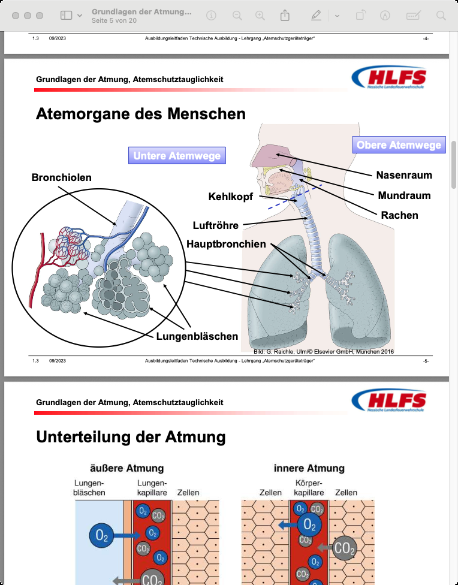
Atemorgane des Menschen – obere und untere Atemwege
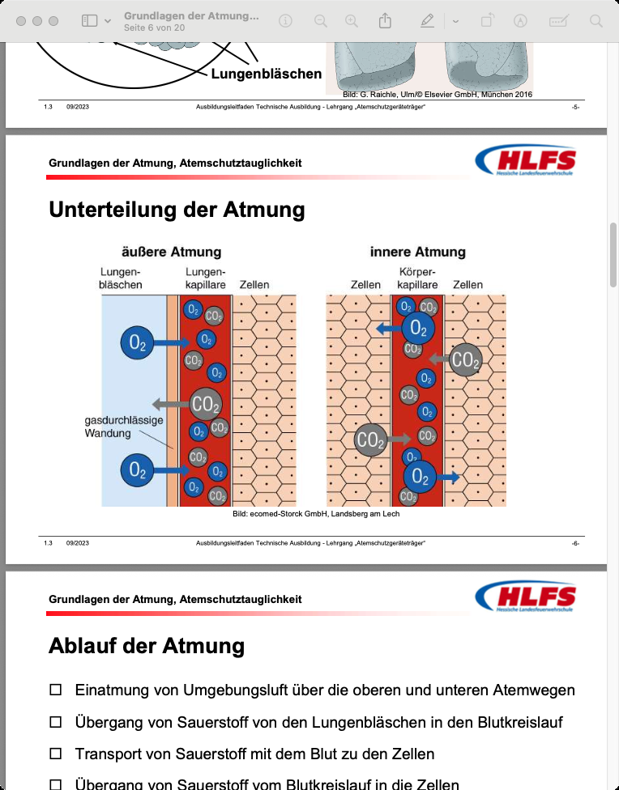
Äußere und innere Atmung – Ablauf des Gasaustauschs
Gasaustausch zwischen Lungenblase und Blut (O₂ wird aufgenommen, CO₂ abgegeben).
Gasaustausch zwischen Blut und Körperzellen (O₂ wird verbraucht, CO₂ entsteht).
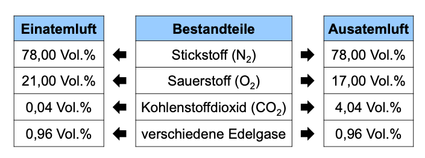
Vergleich Einatem- und Ausatemluft nach Bestandteilen
| Bestandteil | Einatemluft | Ausatemluft |
|---|---|---|
| Sauerstoff (O₂) | 21 Vol-% | 17 Vol-% |
| Kohlendioxid (CO₂) | 0,04 Vol-% | 4,04 Vol-% |
| Stickstoff (N₂) | 78 Vol-% | 78 Vol-% |
| Edelgase / Sonstiges | 0,96 Vol-% | 0,96 Vol-% |
| Belastungsstufe | Verbrauch pro Minute |
|---|---|
| Leichte Belastung | 15–20 Liter / min |
| Mittlere Belastung | 30–40 Liter / min |
| Schwere Belastung | 50–60 Liter / min |
Belastung durch: Atemschutzausrüstung, Einsatzausrüstung, Schutzkleidung
Schutzmaßnahmen:
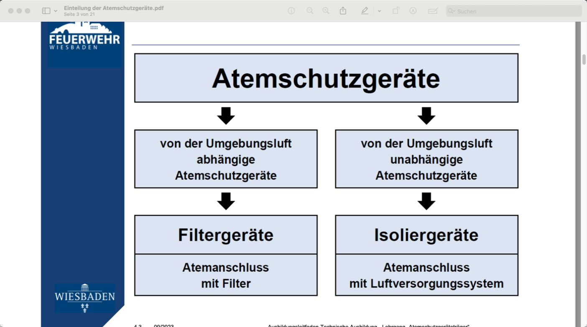
Einteilung der Atemschutzgeräte: abhängig vs. unabhängig von der Umgebungsluft
Wirken durch Reinigung der Einatemluft – abhängig von der Umgebungsatmosphäre. Nur einsetzbar wenn O₂ ausreichend vorhanden und Schadstoffe bekannt.
Wirken durch Zufuhr von Atemluft aus dem Luftversorgungssystem – unabhängig von der Umgebungsatmosphäre. Schützen vor Sauerstoffmangel und Schadstoffen.
Typen: Pressluftatmer / Behältergeräte, Schlauchgeräte, Regenerationsgeräte
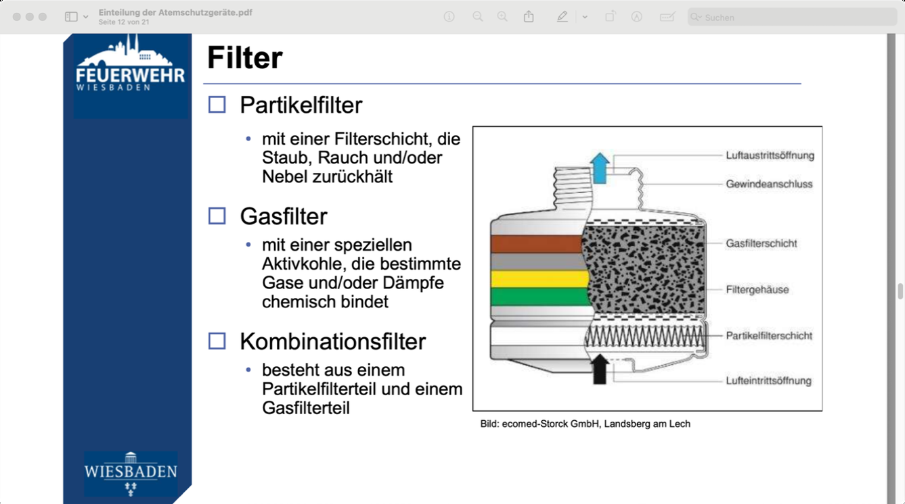
Aufbau und Typen von Atemschutzfiltern (Schnittbild Kombinationsfilter)
| Klasse | Schutz gegen | Aufnahmevermögen |
|---|---|---|
| P 1 | Feste Partikel | Klein |
| P 2 | Feste und flüssige Partikel | Mittel |
| P 3 | Feste und flüssige Partikel | Groß |
Gasfilter dürfen nur gegen Gase und Dämpfe eingesetzt werden, die der AGT bei Filterdurchbruch riechen oder schmecken kann. Zur Absorption wird Aktivkohle mit entsprechend großer Oberfläche verwendet.
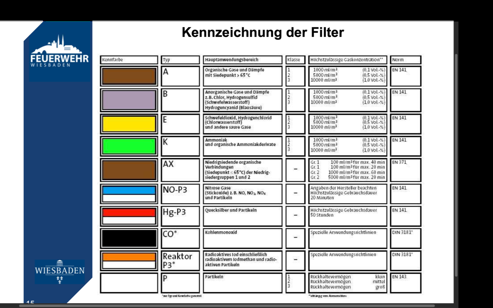
Kennzeichnung der Filter nach Typ, Farbe und Einsatzgrenzen
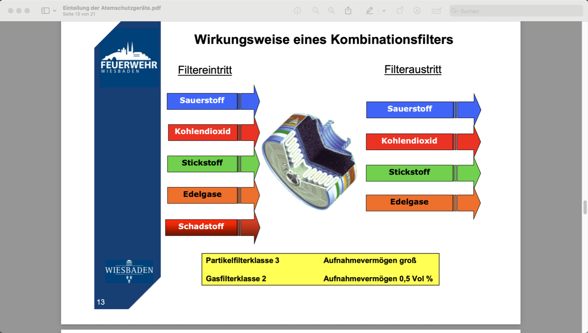
Wirkungsweise: Schadstoffe werden gefiltert, Atemgase passieren
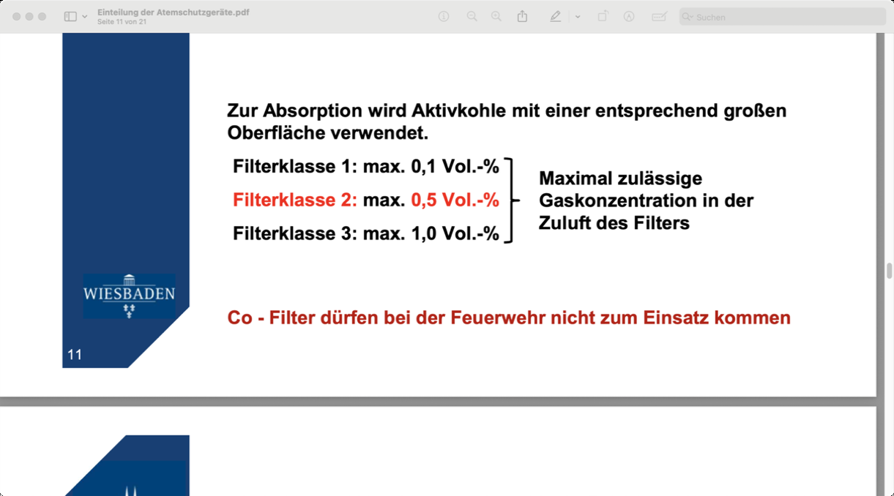
Filterklassen 1–3 und maximal zulässige Gaskonzentration
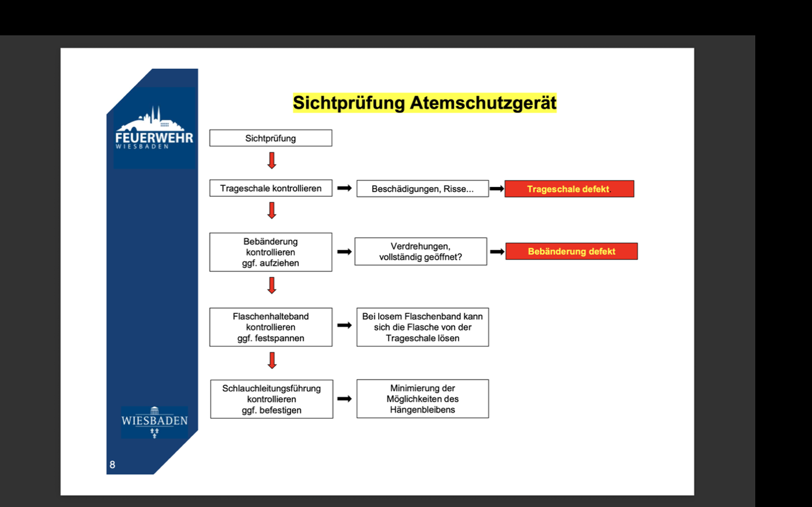
Sichtprüfung Atemschutzgerät (Flussdiagramm)
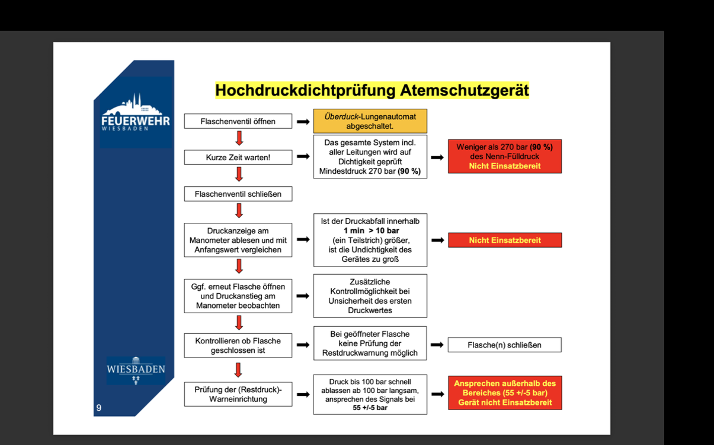
Hochdruckdichtprüfung Atemschutzgerät (Flussdiagramm)
Die FwDV 7 gilt bei: Ausbildung, Fortbildung und Einsatz.
Ergänzend gelten: UVV, einschlägige technische Regeln und Technische Unterlagen der Hersteller.
Können Einsatzkräfte durch Sauerstoffmangel oder Einatmen gesundheitsschädigender Stoffe (Atemgifte) gefährdet werden, müssen entsprechend der möglichen Gefährdung geeignete Atemschutzgeräte getragen werden.
Gasfilter grundsätzlich nur gegen Gase/Dämpfe einsetzen, die der AGT bei Filterdurchbruch riechen oder schmecken kann. Geöffnete und benutzte Filter nach dem Einsatz unbrauchbar machen und entsorgen.
Ab jeder Einsatzstelle muss mindestens ein Sicherheitstrupp (Mindeststärke 0/2/2) bereitstehen. Je nach Risiko und Lage wird die Stärke erhöht – insbesondere in ausgedehnten Objekten (Tunnel, Tiefgaragen).
Bei Brandeinsätzen im Freien, wo Gefährdung weitestgehend auszuschließen ist, kann auf Sicherheitstrupps verzichtet werden.
Quelle: DGUV Regel 105-049
6 l × 300 bar – 10 % = 1.620 Liter Atemluft
Bei 40 l/min: ca. 40 Minuten Einsatzzeit
6,8 l × 300 bar – 10 % = 1.836 Liter Atemluft
Bei 40 l/min: ca. 45 Minuten Einsatzzeit
Faustregel Rückweg: Für den Rückweg ist die doppelte Atemluftmenge wie für den Hinweg einzuplanen. Der AGT mit dem höchsten Verbrauch bestimmt den Kehrtpunkt des gesamten Trupps.
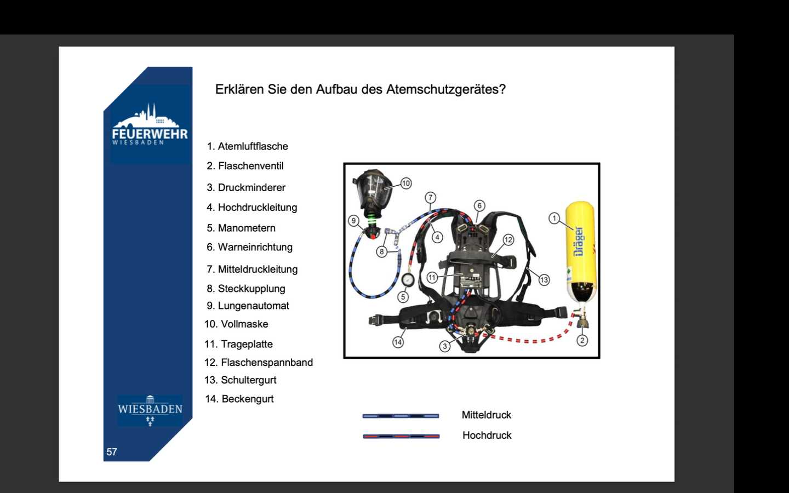
Aufbau des Pressluftatmers – 14 Bauteile
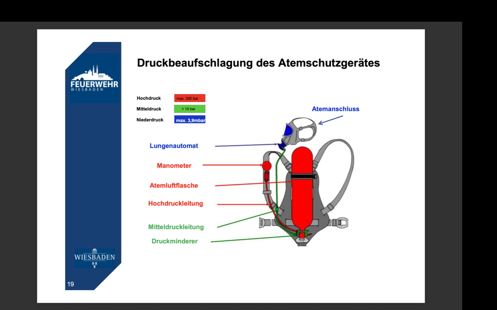
Druckbeaufschlagung: Hoch-, Mittel- und Niederdruck
Druckstufen:
Hochdruck: max. 300 bar · Mitteldruck: < 10 bar · Niederdruck: max. 3,9 mbar
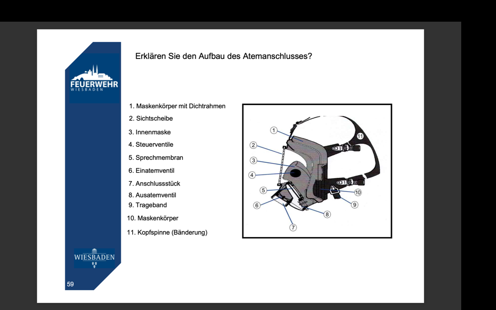
Aufbau des Atemanschlusses (Vollmaske) – 11 Bauteile
Verdrängen Sauerstoff ohne eigene toxische Wirkung:
Schädigen Atemwege und Schleimhäute:
Greifen Stoffwechsel direkt an:
Grundausbildungslehrgang
Rechtsgrundlagen, Gebäudeklassen, Baustoffe & Bauteile, Brandwände, Rettungswege und Flächen für die Feuerwehr.
§3 HBO – Allgemeine Anforderungen: Bauliche Anlagen müssen so beschaffen sein, dass die öffentliche Sicherheit und Ordnung, insbesondere Leben, Gesundheit und natürliche Lebensgrundlagen, nicht gefährdet werden.
§14 HBO – 4 Schutzziele des vorbeugenden Brandschutzes
Maßnahmen werden unterteilt in: Abstandsflächen (bauordnungsrechtlich) und bauliche Maßnahmen (Feuerwiderstandsfähigkeit, Brandwände, Rettungswege, FW-Flächen).
Die Gebäudeklassen richten sich nach der Oberkante des Fußbodens des obersten Aufenthaltsraumes (OKFF), der Anzahl der Nutzungseinheiten und der Grundfläche je NE.
| GK | OKFF-Höhe | Besonderheiten |
|---|---|---|
| 1a | ≤ 7 m | Freistehend, max. 2 NE, je NE ≤ 400 m² |
| 1b | ≤ 7 m | Freistehend, sonstige Gebäude |
| 2 | ≤ 7 m | Nicht freistehend, max. 2 NE, je NE ≤ 400 m² |
| 3 | ≤ 7 m | Sonstige Gebäude bis 7 m |
| 4 | ≤ 13 m | NE je ≤ 400 m² (außer Kellergeschoss) |
| 5 | > 13 m | Alle sonstigen Gebäude |
Sonderbauten (z. B. Schulen, Krankenhäuser, Hochhäuser > 22 m) unterliegen gesonderten Sonderbauvorschriften.
DIN 4102-1 (national)
| Klasse | Bezeichnung | Beispiele |
|---|---|---|
| A1 | Nichtbrennbar, ohne brennbare Bestandteile | Beton, Stahl, Glas, Naturstein |
| A2 | Nichtbrennbar, mit brennbaren Bestandteilen | Gipskarton, Mineralwolle mit Bindemittel |
| B1 | Schwer entflammbar | Imprägn. Holz, Hartschaum B1 |
| B2 | Normal entflammbar | Holz, Spanplatte, normaler Kunststoff |
| B3 | Leicht entflammbar – nicht zulässig | Stroh, Zellstoff, Schaumstoff |
DIN EN 13501-1 (europäisch)
| Klasse | Rauch (s) | Tropfen (d) |
|---|---|---|
| A1 / A2 | s1 = geringer Rauch | d0 = kein Abtropfen |
| B / C / D | ||
| E | s2 = mittlerer Rauch | d1 = geringe Abtropfung |
| F | s3 = starker Rauch | d2 = starke Abtropfung |
Europäische Klassen A1/A2 ≈ DIN A1/A2; B–D ≈ B1; E ≈ B2.
Holz (B2 – normal entflammbar)
Stahl (A1 – nichtbrennbar, aber temperaturkritisch)
Beton & Stahlbeton (A1)
Kunststoffe & Natursteine
Massivbauweise
Skelettbauweise
Holzrahmenbau / Holztafelbauweise
Feuerwiderstandsklassen nach DIN 4102 & EN 13501-2
| DIN 4102 | EN 13501-2 | Dauer | Bezeichnung |
|---|---|---|---|
| F 30 | REI 30 | 30 min | Feuerhemmend |
| F 60 | REI 60 | 60 min | Hochfeuerhemmend |
| F 90 | REI 90 | 90 min | Feuerbeständig |
| F 120 | REI 120 | 120 min | Hochfeuerbeständig |
R = Tragfähigkeit · E = Raumabschluss · I = Wärmedämmung
Wichtige Bauteile im Einsatz
Ziel: Ausbreitung von Feuer und Rauch auf den Entstehungsbereich begrenzen.
Zwei Ansätze
Brandabschnitt
Notwendigkeit (§30 HBO)
Bauliche Anforderungen
Jede Nutzungseinheit muss über 2 voneinander unabhängige Rettungswege erreichbar sein.
| Weg | Art |
|---|---|
| 1. Rettungsweg | Immer notwendige Treppe / Treppenhaus |
| 2. Rettungsweg | Zweite Treppe oder FW-Rettungsgerät (unabhängig vom 1. RW) |
Anforderungen je Gebäudeklasse
Maximale Länge des Rettungsweges innerhalb einer Nutzungseinheit: ≤ 35 m bis zum nächsten Treppenhaus oder sicheren Bereich.
Zugang, Zufahrt und Aufstellflächen müssen freigehalten und nach DIN 4066 gekennzeichnet werden.
Zugänge & Durchgänge (Brüstungshöhe ≤ 8 m)
| Maß | Mindestmaß |
|---|---|
| Lichte Breite | ≥ 1,25 m |
| Lichte Höhe | ≥ 2,20 m |
Zufahrten & Durchfahrten (Brüstungshöhe > 8 m oder Gebäude > 50 m von Straße)
| Maß | Mindestmaß |
|---|---|
| Lichte Breite | ≥ 3,0 m |
| Lichte Höhe | ≥ 3,50 m |
Aufstellflächen (für Drehleiter / Hubrettungsfahrzeuge)
GAL Grundlehrgang · Thema 06
Rechtsgrundlagen, Arten des Beamtenverhältnisses, Pflichten und Rechte, Besoldung, Disziplinarrecht und Laufbahnrecht.
Das Beamtenrecht ist mehrstufig: Verfassung (GG) → Bundesrahmengesetz (BeamtStG) → Landesgesetze (HBG, HBesG, LVO) → Verwaltungsvorschriften.
Beamtenverhältnis als Institut des öffentlichen Rechts. Hergebrachte Grundsätze des Berufsbeamtentums (Art. 33 Abs. 5 GG): Alimentationsprinzip, Lebenszeitprinzip, Treueprinzip, Hauptberuflichkeit, Leistungsprinzip. Verfassungsrang.
Beamtenstatusgesetz, regelt bundesweit einheitlich Beamtenarten, Pflichten (§§ 33–43), Rechte, Laufbahnen, Ruhestand und Disziplinarrecht für die Landes- und Kommunalbeamten.
Hessisches Beamtengesetz (Neufassung 2020). Konkretisiert BeamtStG für Hessen (§§ 1–200). Regelt Einstellung, Ernennung, Versetzung, Beendigung, Versorgung, Nebentätigkeit, Wohlverhaltenspflicht.
HBesG: Besoldungsgruppen A/B/C/R/W, Zulagen, Sonderzahlungen. LVO: Laufbahngruppen, Aufstiegsvoraussetzungen, Probezeiten. HDG: Hessisches Disziplinargesetz – Verfahrensordnung für Disziplinarmaßnahmen.
| Art | Merkmale | Rechtsgrundlage |
|---|---|---|
| Beamter auf Probe | Regeleinstellung nach Vorbereitungsdienst. Probezeit 2–3 Jahre. Entlassung bei mangelnder Bewährung möglich. Noch keine Lebenszeitrechte. | § 4 BeamtStG |
| Beamter auf Lebenszeit | Nach bestandener Probezeit. Grundsätzlich unkündbar. Voller Schutz der Alimentationspflicht durch den Dienstherrn. | § 10 BeamtStG |
| Beamter auf Zeit | Befristet (z.B. Wahlbeamte: Bürgermeister, Dezernenten). Amtszeit 6–8 Jahre. Wiederwahl möglich. | § 6 BeamtStG |
| Beamter auf Widerruf | Vorbereitungsdienst (Referendariat, Anwärter). Kann jederzeit entlassen werden. | § 4 Abs. 4 lit. b BeamtStG |
| Ehrenbeamter | Ehrenamtliche Funktion (z.B. ehrenamtliche Bürgermeister, Gemeindeehrenbeamte). Keine Besoldung, begrenzte Rechte/Pflichten. | § 5 BeamtStG |
Aus § 34 BeamtStG: Beamte müssen ihr Amt uneigennützig nach bestem Wissen und Gewissen wahrnehmen. Die zentralen Einzelpflichten:
Befehle und allgemeine Weisungen der Vorgesetzten sind zu befolgen. Ausnahme: Beamter haftet auch bei Befolgung einer rechtswidrigen Weisung für Straftaten oder Verletzungen der Menschenwürde.
Bedenken gegen die Rechtmäßigkeit einer dienstlichen Anordnung sind unverzüglich beim unmittelbaren Vorgesetzten geltend zu machen. Bei Bestätigung ist sie an den nächsthöheren Vorgesetzten zu richten. Wird sie auch dort bestätigt, ist sie auszuführen – außer Straftat oder Verletzung der Menschenwürde.
Dienst- und Privatgeheimnis bewahren – auch nach Ende des Beamtenverhältnisses. Aussagen vor Gericht oder gegenüber Dritten bedürfen einer Aussagegenehmigung des Dienstherrn.
Aktives Bekenntnis zur freiheitlichen demokratischen Grundordnung (fdGO). Verfassungsfeindliche Bestrebungen sind unvereinbar mit dem Beamtenverhältnis.
Verhalten innerhalb und außerhalb des Dienstes muss der Achtung und dem Vertrauen gerecht werden, die der Beruf erfordert. Bezieht sich auch auf außerdienstliches Verhalten, soweit Dienstbezug besteht.
Grundsätzlich genehmigungspflichtig. Untersagt, wenn dienstliche Interessen beeinträchtigt werden, Arbeitskraft übermäßig beansprucht wird oder ein Interessenkonflikt droht.
Anspruch auf amtsangemessene Besoldung, lebenslang, einschließlich angemessenen Unterhalts für die Familie. Das BVerfG hat die Untergrenze definiert: Nettoalimentation muss mind. 15 % über der Grundsicherung liegen.
Schutz von physischer und psychischer Unversehrtheit; Unfallschutz, Gesundheitsschutz, betriebliches Eingliederungsmanagement (BEM), Vereinbarkeit von Familie und Beruf.
§ 80 BBG / § 58 HBG. Kostenerstattung für Krankheitskosten, Pflege, Geburt (50–80 % je nach Status und Anzahl der Kinder). Ergänzt die private Krankenversicherung.
§ 30 BeamtVG / §§ 43 ff. HBG. Erhöhte Unfallfürsorge: Heilbehandlungskosten zu 100 %, Unfallpension bei Dienstunfähigkeit, einmalige Unfallentschädigung.
Grundgehalt nach Besoldungsgruppe + Familienzuschlag + Stellenzulagen + Sonderzahlungen. Anpassung durch Tarifabschluss / Besoldungsgesetz.
Ruhegehalt 71,75 % der ruhegehaltsfähigen Bezüge nach 40 Dienstjahren. Hinterbliebenenversorgung (Witwen-/Witwer-, Waisengeld).
| Dienstgrad | Besoldungsgruppe |
|---|---|
| Brandmeister | A 7 |
| Oberbrandmeister | A 8 |
| Hauptbrandmeister | A 9 |
| Hauptbrandmeister mit Amtszulage | A 9 + Z |
| Brandinspektor | A 9 |
| Brandoberinspektor | A 10 |
| Brandamtmann | A 11 |
| Brandamtsrat | A 12 |
| Brandoberamtsrat | A 13 |
| Brandrat | A 13 hD |
| Brandoberrat | A 14 |
| Branddirektor | A 15 |
| Leitender Brandodirektor | A 16 |
| Direktor der Branddirektion oder Direktor der Landesfeuerwehrschule | B 2 oder B 3 |
| Landesbranddirektor | B 2 oder B 3 |
Merksatz Feuerwehrzulage: Nach § 42a BBesO erhalten Atemschutzgeräteträger im Einsatzdienst eine monatliche Stellenzulage (sog. „Feuerwehrzulage") von derzeit ca. 130 € brutto.
Die Disziplinarmaßnahmen nach § 5 HDG sind aufsteigend gestuft. Bagatellverstöße werden durch den Dienstvorgesetzten (Disziplinarbehörde) selbst, schwerwiegende Maßnahmen durch das Verwaltungsgericht (Disziplinarklage) verhängt.
Verfahrensablauf: Einleitung durch Dienstbehörde → Anhörung des Beamten → Untersuchungsführer → Abschlussbericht → bei schweren Maßnahmen Disziplinarklage beim Verwaltungsgericht. Der Beamte hat das Recht auf Akteneinsicht, Anwalt und Anhörung von Entlastungszeugen.
GAL Grundlehrgang · Thema 07
Die Beihilfe ist Ausfluss der beamtenrechtlichen Fürsorgepflicht des Dienstherrn und ergänzt die private oder gesetzliche Krankenversicherung. Sie ist subsidiär, d.h. sie tritt erst nach Ausschöpfung anderer Leistungen ein und deckt grundsätzlich nur einen prozentualen Anteil der medizinisch notwendigen Aufwendungen. Für Bundesbeamte gilt die Bundesbeihilfeverordnung (BBhV), für hessische Landesbeamte die Hessische Beihilfeverordnung (HBeihVO).
Beihilfe ist eine eigenständige, ergänzende Krankenfürsorgeleistung des Dienstherrn an seine aktiven Beamten, Versorgungsempfänger sowie deren berücksichtigungsfähige Angehörige. Sie ist nicht mit der gesetzlichen Krankenversicherung (GKV) vergleichbar, sondern stellt eine Ausprägung des verfassungsrechtlich verankerten Alimentations- und Fürsorgeprinzips (Art. 33 Abs. 5 GG) dar. Rechtlich verankert ist sie in § 80 BBG (Bundesbeamtengesetz) bzw. § 58 HBG (Hessisches Beamtengesetz).
Die BBhV regelt die Beihilfe für Bundesbeamte, Bundesrichter, Soldaten sowie Versorgungsempfänger des Bundes. Sie ist als Rechtsverordnung auf Grundlage von § 80 Abs. 4 BBG erlassen und bundesweit einheitlich. Sie gliedert sich in 12 Abschnitte mit umfassenden Anlagen (Heilmittelkatalog Anlage 9, Hilfsmittelverzeichnis Anlage 10 etc.).
Die HBeihVO regelt die Beihilfegewährung für hessische Landesbeamte, Lehrer, Polizisten, Berufsfeuerwehrleute und kommunale Beamte (auch Werkfeuerwehren in Trägerschaft des Landes). Sie weicht in Details (Kostendämpfungspauschale, Bemessungssätze bei mehreren Kindern) von der BBhV ab.
Merksatz: Beihilfe ist subsidiär – sie tritt erst ein, wenn ein konkreter Krankheitsfall vorliegt und nach Bemessung der eigenen Krankenversicherungsleistung eine Restlücke verbleibt. Sie ist keine eigenständige Vollversicherung und ersetzt nicht die Krankenversicherungspflicht!
Der Bemessungssatz definiert den prozentualen Anteil, den die Beihilfestelle von den beihilfefähigen Aufwendungen erstattet. Er ist nicht beliebig variabel, sondern in § 46 BBhV bzw. § 14 HBeihVO abschließend geregelt und richtet sich nach Status und Familienstand des Berechtigten.
| Personenkreis | Bemessungssatz | Voraussetzungen |
|---|---|---|
| Aktive Beamte (Grundsatz) | 50 % | Verheiratet oder ledig ohne Kinder; bei privater Krankenversicherung als Standardsatz |
| Aktive Beamte mit zwei und mehr berücksichtigungsfähigen Kindern | 70 % | Mindestens zwei Kinder im Familienzuschlag der Stufe 2 ff.; gilt dauerhaft, auch wenn Kinder später wegfallen (Bestandsschutz prüfen) |
| Ehegatten/eingetragene Lebenspartner | 70 % | Eigene Einkünfte des Ehegatten dürfen 20.000 € im Jahr nicht übersteigen (Einkommensgrenze § 4 BBhV) |
| Berücksichtigungsfähige Kinder | 80 % | Bis Vollendung 18. LJ, in Ausbildung bis 25. LJ; im Familienzuschlag enthalten |
| Versorgungsempfänger (Pensionäre) | 70 % | Ruhegehalt nach Eintritt in den Ruhestand; auch für Witwen-/Waisengeldempfänger |
| Waisen | 80 % | Halb- und Vollwaisen mit Waisengeldanspruch |
Die Beihilfeverordnung definiert abschließend, welche Aufwendungen dem Grunde nach beihilfefähig sind. Voraussetzung ist stets die medizinische Notwendigkeit sowie die Angemessenheit der Höhe nach. Im Folgenden die wesentlichen Leistungsbereiche im Detail.
Beihilfefähig sind Aufwendungen für ärztliche Leistungen nach der Gebührenordnung für Ärzte (GOÄ). Maßgeblich sind die in der GOÄ ausgewiesenen Steigerungssätze:
Bei Pflegebedürftigkeit (Pflegegrad 1–5 nach SGB XI) gewährt die Beihilfe ergänzende Leistungen zur sozialen oder privaten Pflegepflichtversicherung:
Ästhetisch motivierte Eingriffe ohne medizinische Notwendigkeit (Brustvergrößerung, Fettabsaugung, Faltenunterspritzung) sind grundsätzlich nicht beihilfefähig. Ausnahme: Korrekturen nach Unfall oder schwerer Erkrankung mit psychischer Belastung – im Einzelfall mit Gutachten.
Sanatoriumsbehandlungen und Kuren sind nur beihilfefähig, wenn sie vor Antritt von der Beihilfestelle bewilligt wurden (§ 35 BBhV). Bewilligungsfreie Inanspruchnahme führt zur Ablehnung. Klimakuren ohne medizinische Indikation generell ausgeschlossen.
Homöopathische Behandlungen, Anthroposophie, TCM, Akupunktur (außer bei chronischen LWS-/Knieschmerzen mit nachgewiesener Wirksamkeit) sind in der Regel nicht beihilfefähig. Heilpraktikerleistungen nur eingeschränkt nach GebüH erstattungsfähig.
Bei vorsätzlich oder grob fahrlässig verursachten Krankheitsfolgen kann die Beihilfe gekürzt oder versagt werden (z.B. Verletzungen unter erheblicher Alkoholeinwirkung beim Verkehrsunfall, Folgen extremer Risikosportarten ohne entsprechenden Schutz). Einzelfallprüfung anhand der Akten.
Um Eigenverantwortung der Beihilfeberechtigten zu fördern und Bagatellausgaben zu vermeiden, sieht § 49 BBhV pauschalierte Eigenbehalte vor, die von der Beihilfe abgezogen werden:
| Leistungsbereich | Eigenbehalt | Anmerkung |
|---|---|---|
| Arzneimittel, Verbandmittel | 10 % des Betrags, mind. 5 €, max. 10 € | Pro Verordnung; Festbetrag-AM: nur Differenz zum FB |
| Heilmittel (Physio etc.) | 10 % + 10 € je Verordnung | Pro Behandlungsserie |
| Krankenhausaufenthalt | 10 € pro Tag | Max. 28 Tage/Jahr |
| Fahrtkosten | 10 % der Kosten, mind. 5 €, max. 10 € | Pro Fahrt |
| Soziotherapie/Haushaltshilfe | 10 % je Tag | — |
Belastungsgrenze: Übersteigen die Eigenbehalte 2 % des Jahreseinkommens (bei chronisch Kranken 1 %), entfallen weitere Eigenbehalte für das laufende Kalenderjahr. Kinder bis 18 Jahre sind generell von allen Eigenbehalten ausgenommen.
Eine Besonderheit der hessischen Beihilfe ist die Kostendämpfungspauschale: Pro Kalenderjahr wird ein nach Besoldungsgruppe gestaffelter Festbetrag von der Beihilfegewährung in Abzug gebracht. Sie soll Eigenverantwortung und Kostendisziplin fördern und gilt zusätzlich zu den Eigenbehalten.
| Besoldungsgruppe | Kostendämpfungspauschale/Jahr | Beispiel-Funktion |
|---|---|---|
| A 5 – A 8 | 300 € | Brandmeister, Oberbrandmeister |
| A 9 – A 12 | 450 € | Hauptbrandmeister bis Oberbrandinspektor |
| A 13 – A 16 | 600 € | Brandrat bis Leitender Branddirektor |
| B-Besoldung | 750 € | Höhere Führungsfunktionen |
Pro Kind reduziert sich die Pauschale um 40 €. Im ersten Jahr der Aufnahme in den Beamtenstand sowie im Jahr des Ruhestandseintritts wird die Pauschale anteilig erhoben.
Beamte unterliegen nicht der gesetzlichen Krankenversicherungspflicht (§ 6 Abs. 1 Nr. 2 SGB V); sie können zwischen GKV (freiwillig) und PKV wählen. In der Praxis ist die PKV bei Beamten der Standard, weil sie auf den Beihilfesatz „abgestimmt" werden kann.
Die Private Krankenversicherung wird als Beihilfeergänzungs-Tarif abgeschlossen: Sie deckt genau die Lücke, die nicht durch die Beihilfe gedeckt ist. Bei aktivem Beamten mit 50 % Beihilfe schließt die PKV auf 50 % Restdeckung. Beiträge sind altersabhängig kalkuliert (Äquivalenzprinzip).
Bei freiwilliger GKV-Mitgliedschaft erhält der Beamte zwar die GKV-Leistungen voll, muss aber den kompletten Beitrag selbst tragen (kein Arbeitgeberanteil!), da der Dienstherr keinen Beitragszuschuss zahlt. Die Beihilfe wird auf nicht von GKV gedeckte Leistungen (z.B. Zahnersatz, Wahlleistungen) reduziert ausgezahlt.
PKV-Beitragserhöhungen: Steigt der PKV-Beitrag (z.B. wegen medizinischer Inflation oder Gesundheitskostenzunahme), steigt die Beihilfe nicht automatisch mit. Den Mehrbeitrag trägt der Beamte vollständig allein. Dies ist ein erhebliches Risiko im Ruhestand!
GAL Grundlehrgang · Thema 08
Die Brandbekämpfung ist die ureigenste Aufgabe der Feuerwehr. Sie umfasst die Wahl der richtigen Einsatztaktik (Innen-, Außen- oder Übergangsangriff), die fachgerechte Anwendung von Strahlrohren und Belüftungstechniken sowie das Beherrschen von Sonderbrandlagen. Grundlage sind die Feuerwehrdienstvorschriften (FwDV 3 „Einheiten im Lösch- und Hilfeleistungseinsatz", FwDV 7 „Atemschutz") sowie wissenschaftlich abgesicherte Erkenntnisse zur Brand- und Strömungsdynamik.
Der Einheitsführer (Gruppen- oder Zugführer) trifft vor Vornahme des ersten Rohres die Strategieentscheidung „Innenangriff vs. Außenangriff" anhand der Lage. Diese Entscheidung ist die einsatztaktische Grundsatzentscheidung im Löscheinsatz und bestimmt das gesamte weitere Vorgehen. Sie wird kontinuierlich anhand neuer Lageerkenntnisse (Rauchbeobachtung, Temperaturentwicklung, Personenrettungserkenntnisse) überprüft.
Kriterien:
Vorgehen: Angriffstrupp (AT) mit PA und Hohlstrahlrohr (HSR) C, Wassertrupp (WT) sichert Wasserversorgung und stellt Sicherheitstrupp; GF koordiniert von außen.
Vorteile: Schnelle Brandbekämpfung am Brandherd, geringer Wasserschaden, Nachbarschaftsschutz, gezielte Personenrettung möglich.
Kriterien:
Vorgehen: Wasserabgabe ausschließlich von außen mit B-Rohren, Wenderohren oder Wasserwerfern; Schutz der angrenzenden Bebauung im Vordergrund.
Vor- und Nachteile: Maximale Sicherheit der Einsatzkräfte, aber geringere Löschwirkung, hoher Löschmittelverbrauch, erhebliche Umweltbelastung durch Löschwasserabfluss.
Kombination beider Strategien: Erst Außenangriff zur Rauchgas- und Temperaturkühlung (insbesondere Kühlung der Brandgasschicht durch HSR-Sprühstrahl durch ein Fenster), dann kontrollierter Innenangriff zur endgültigen Brandbekämpfung.
| Angriffsart | Technik | Wirkprinzip | Einsatzfall |
|---|---|---|---|
| Direktangriff | Vollstrahl oder Sprühstrahl 30° direkt auf brennendes Material | Kühlung des Brandgutes unter Zündtemperatur; Ablöschen durch Energieentzug | Klar erkennbarer Brandherd (Holzstapel, Möbel, Außenbrand) |
| Indirekter Angriff | Sprühstrahl 60°–120° in heiße Rauchschicht/Raumdecke | Wasserdampfbildung (1 l Wasser → 1.700 l Dampf!) verdrängt Sauerstoff und kühlt; Erstickungseffekt | Stark verraucht, Brandherd nicht sichtbar, Tank- oder Schiffsbrand |
| Kombinationsangriff | Kurzer indirekter Sprühstoß (Pulse) in Rauchschicht, dann direkter Angriff | Erst Energieabbau im Raum, dann gezielte Bekämpfung am Brandherd | Standardstrategie im modernen Innenangriff |
| 3D-Löschtechnik | Kurze Pulse (Long Pulse, Short Pulse, Pencil) gezielt in dreidimensionalen Raum | Schwedische Methode (Cerberus); kühlt Brandgase, ohne thermischen Auftrieb komplett zu zerstören | Moderner Innenangriff mit Hohlstrahlrohr |
Das Hohlstrahlrohr ist seit den 1990er Jahren das Standardstrahlrohr im Innenangriff und löst zunehmend das klassische Mehrzweckstrahlrohr (CM) ab. Sein zentrales Merkmal ist die variable Sprühstrahl-Verstellung und die Durchflussregulierung.
Die Überdruckbelüftung (Overpressure Ventilation, OVP) ist eine gezielte taktische Ventilationsmaßnahme zur Rauchgasabführung im Brandeinsatz. Sie ersetzt die langsamere natürliche Lüftung und ermöglicht den schnellen Einsatzkräften die Sicht und Begehbarkeit.
Ein leistungsfähiger Drucklüfter (elektrisch oder benzinbetrieben, Förderleistung 20.000–60.000 m³/h) wird vor dem Gebäudeeingang positioniert. Sein konischer Luftstrahl umschließt die Türöffnung und drückt Luft mit Überdruck in das Gebäude. Auf der Brandseite (Abluftöffnung) wird Rauch durch ein gezielt geöffnetes Fenster nach außen ausgetrieben.
Achtung Risiken! Falsch eingesetzte OVP kann Brand fachen oder verteilen statt löschen! Vor dem Belüften muss der Brandherd lokalisiert und die Brandbekämpfung eingeleitet sein. Bei Backdraft-Verdacht (geschlossener Raum, dunkler dichter Rauch, Pulsen) KEINE OVP – stattdessen Antiventilation und kontrollierter Aufbau eines Sicherheitsbereichs.
Die natürliche Lüftung nutzt die physikalische Tatsache, dass heiße Rauchgase eine geringere Dichte als kalte Außenluft haben und daher aufsteigen. Sie ist langsamer als die OVP, aber besonders bei hohen Räumen oder Gebäuden mit Dachöffnungen wirksam und ohne Energieaufwand betreibbar.
Heiße Brandgase (500–1.200 °C) haben eine Dichte von 0,2–0,5 kg/m³ gegenüber kalter Außenluft (1,29 kg/m³). Die Dichtedifferenz erzeugt Auftrieb gemäß Archimedes-Prinzip. Geöffnete Öffnungen im oberen Bereich (Dachfenster, Lichtkuppeln, RWA-Klappen) lassen Rauchgase entweichen, während kalte Außenluft im unteren Bereich nachströmt.
Bei unterversorgten Bränden (Sauerstoffmangel, alle Öffnungen geschlossen) hat sich im Raum eine zündfähige Rauchgaskonzentration angesammelt. Plötzliches Öffnen einer Tür oder eines Fensters führt zur schlagartigen Sauerstoffzufuhr und damit zur Backdraft-Explosion mit Druckwelle bis 5 m über Außenfassade!
Physikalisches Risiko: Speiseöle und -fette haben einen Flammpunkt von 300–320 °C und einen Brennpunkt darüber. Wird Wasser auf brennendes Fett gegeben, verdampft das Wasser schlagartig (Siedepunkt 100 °C). 1 l Wasser ergibt ca. 1.700 l Wasserdampf – dieser reißt brennendes Fett in feinste Aerosole, die sich in der Luft sofort entzünden: Fettexplosion / Deflagration!
Thermisches Durchgehen (Thermal Runaway): Innerer Kurzschluss oder Beschädigung führt zu exothermer Reaktion; Zelltemperatur steigt auf 600–800 °C, Nachbarzellen werden durch Wärmeleitung entzündet (Kaskadenreaktion). Freisetzung von Elektrolyt, Fluorwasserstoff (HF), Phosphorpentafluorid, Kohlenmonoxid, Wasserstoff – hochgiftig und explosionsfähig.
Reaktionschemie: Alkali- und Erdalkalimetalle reagieren mit Wasser exotherm unter Wasserstoff-Freisetzung. Reaktion Natrium: 2 Na + 2 H₂O → 2 NaOH + H₂↑ – freiwerdender Wasserstoff entzündet sich am Brand: Knallgasreaktion mit Explosion!
Grundsatz: Vor jedem Löscheinsatz an elektrischen Anlagen Spannungsfreiheit herstellen – Energieversorgungsunternehmen (EVU) anfordern, Hauptschalter trennen, gegen Wiedereinschalten sichern, allpolig erden und kurzschließen, Phasenprüfer einsetzen (5 Sicherheitsregeln nach DIN VDE 0105-100).
Kabelschächte und -trassen sind brandschutztechnisch problematisch: hohe Brandlast (PVC, PE-Isolation), starke Rauchentwicklung mit HCl und Dioxinen, isolierende Konstruktion verhindert Wärmeabfuhr. Brände breiten sich entlang der Trasse rasch über mehrere Etagen aus.
GAL Grundlehrgang · Thema 09
Die Einsatztechnik umfasst alle Geräte und physikalisch-strömungstechnischen Grundlagen, die für die Wasserförderung und Brandbekämpfung notwendig sind. Schwerpunkte sind Schlauchkunde, Druckverlustberechnung nach den Gesetzen der Hydrodynamik (Bernoulli, Darcy-Weisbach), Armaturen, Wasserversorgung aus verschiedenen Quellen sowie der Einsatz von Schaummitteln. Grundlage ist die Feuerwehrdienstvorschrift FwDV 1 sowie die DIN-Normen 14811 (Schläuche) und 14420 (Pumpen).
Feuerwehrschläuche sind nach DIN 14811 genormt. Sie werden in Saugschläuche (formstabil, unterdruckbeständig) und Druckschläuche (flexibel, druckbeständig) unterteilt. Die Kennzeichnung erfolgt nach Innendurchmesser, Länge, Druckstufe und Kupplungstyp (Storz-Kupplung).
| Schlauchtyp | Ø innen | Länge | Betriebsdruck | Kupplung | Verwendung |
|---|---|---|---|---|---|
| Saugschlauch A | 110 mm | 1,5 m | vakuumbeständig (-0,8 bar) | Storz A | Wasserentnahme aus offenem Gewässer, formstabil mit Stahlspirale |
| B-Druckschlauch | 75 mm | 20 m (auch 5/35 m) | 12 bar Nennbetriebsdruck | Storz B | Zubringerleitung von Pumpe zum Verteiler, Wasserversorgung |
| C-Druckschlauch (42) | 42 mm | 15 m | 12 bar | Storz C | Standard-Angriffsleitung, AT/WT-Vornahme |
| C-Druckschlauch (52) | 52 mm | 15 m | 12 bar | Storz C | Höhere Durchflussmenge, Schwerpunktangriff |
| D-Druckschlauch | 25 mm | 15 m (oder 30 m) | 16 bar | Storz D | Kleinbrand, Vegetationsbrand, Hochdrucklöschanlage |
| Formstabiler Schlauch | 19/25 mm | 30 m (Schlauchhaspel) | 40 bar (Hochdruck) | Sonder | Schnellangriff PKW-Brand, Vegetationsfeuer |
Jeder Schlauch trägt eine dauerhafte Kennzeichnung: Herstellungsjahr, Herstellerkürzel, Druckprüfzeichen, Nenndruck, Länge in Metern. Jährliche Sichtprüfung sowie alle drei Jahre eine Druckprüfung mit Wasserdruck (B/C: 12 bar, D: 16 bar) über 15 Minuten in der Schlauchpflegeanlage. Beschädigte Schläuche (Risse, Schimmel, Kupplungsdefekt) sind auszusondern bzw. zu reparieren.
Beim Durchfluss von Wasser durch Schläuche entsteht durch innere Reibung an der Schlauchwand und Turbulenzen ein Druckverlust. Dieser muss bei der Auslegung der Wasserversorgung (Pumpendruck = Strahlrohrdruck + Verluste) berücksichtigt werden.
Δp = R · L · Q²
Da diese Formel rechnerisch unhandlich ist, arbeiten Feuerwehren mit Faustregeln:
pPumpe = pStrahlrohr + ΔpSchlauch + ΔpHöhe
Beispielrechnung: HSR (6 bar Strahlrohrdruck, 235 l/min) an C-Rohr (45 m) hinter Verteiler an B-Schlauch (200 m); Brandgeschehen in der 3. Etage (Höhe 10 m).
Teilt einen B-Schlauch (Zuleitung) auf einen B- und zwei C-Ausgänge auf. Jeder Ausgang verfügt über ein eigenes Absperrkugelventil. Ermöglicht die selektive Versorgung mehrerer Trupps und Druckausgleich zwischen den Ausgängen. Standardgerät auf jedem Löschfahrzeug.
Vereint zwei B-Eingänge zu einem A-Ausgang. Wird zur Bündelung zweier Wasserquellen (z.B. zwei Hydranten) oder zur Versorgung der Saugseite einer Pumpe genutzt. Ausgestattet mit Rückschlagklappen, die das Rückfließen in eine versiegende Quelle verhindern.
Wird mit Schlüssel auf Überflur- oder Unterflurhydranten aufgesetzt. Verfügt über zwei B-Abgänge mit Kugelhähnen und ein zentrales Absperrorgan zur Schließung der Wasserzufuhr ohne Trennen vom Hydranten. Drehrichtung: links = öffnen (Norm).
Schutz vor Drucküberlastung der Schlauchleitung. Öffnet bei Überschreitung des eingestellten Drucks (typisch 8 bar) und leitet Wasser ins Freie. Pflicht bei Pumpenförderdruck > 8 bar im B-Schlauch zur Vermeidung von Schlauchplatzern.
Lässt Wasser nur in eine Richtung durch. Verhindert Rückfluss aus dem Wassersystem in die Pumpe bei Druckabfall oder Ausfall der Pumpe. Üblich am Saugkorb und in Sammelstücken.
Bei Anschluss an Hochdruck-Hydrantennetze (Industrie, Hochhaus) reduziert ein Druckminderer den Eingangsdruck auf das Niveau der Schlaucharbeit (max. 12 bar). Hydroschild dient als Strahlschutz (großer Sprühvorhang) zum Schutz von Personen oder Objekten vor Strahlungswärme.
Schaum ist eine Dispersion von Luftblasen in einer Schaumlösung (Wasser + Schaummittel). Er löscht durch Trennen (Sauerstoffabschluss), Kühlen (Wasseranteil) und Erstickung (Dampfbildung).
| Schaummitteltyp | Zumischung | Brandklassen | Besonderheit |
|---|---|---|---|
| AFFF (Aqueous Film Forming Foam) | 1–3 % | A, B | Bildet wässrigen Film unter Schaumteppich; schnelle Löschwirkung; enthält PFAS → ab 2026 weitgehend verboten! |
| AR-AFFF (Alcohol Resistant) | 3 % | B (polare Stoffe) | Alkoholbeständig; bildet Polymerschicht; für Alkohole, Ketone, Ester |
| Proteinschaum (P) | 3–6 % | B | Natürlich aus Proteinhydrolysat; hitzebeständig, langsamer Aufbau; Lagertanks |
| Fluorfreier Schaum (F3 / FFFP-frei) | 1–6 % | A, B | Ersatz für AFFF ohne PFAS; zunehmend neuer Standard ab 2025 |
| Class-A-Schaummittel | 0,1–1 % | A | Netzmittel verbessert Eindringen in Glutnester; Waldbrand, Holzbrand |
Die VZ gibt das Volumenverhältnis von Schaum zu Schaumlösung an und definiert den Schaumtyp:
Im Schlauchstrang zwischen Pumpe und Schaumrohr eingebauter Injektor (Venturi-Prinzip): durchströmende Schaumlösung erzeugt Unterdruck, der Schaummittel aus Kanister einsaugt und beimischt. Einstellbar 1 %/3 %/6 %. Druckverlust ca. 30 % des Eingangsdrucks.
Am Strahlrohrkopf erfolgt die eigentliche Verschäumung: Schaumlösung wird durch Düse beschleunigt, Luft wird in Mischkammer angesaugt und verwirbelt → Schaumblasen. Schaumrohrtypen: S2/S4 (Schwerschaum), M2/M4 (Mittelschaum). Wurfweite Schwerschaum: ca. 25 m.
p₁ + ½ρv₁² + ρgh₁ = p₂ + ½ρv₂² + ρgh₂ + ΔpVerlust
Aussage: Die Summe aus statischem Druck, dynamischem Druck und Höhendruck ist entlang einer Stromlinie konstant (zzgl. Reibungsverluste). In der Praxis: Bei Querschnittsverengung (Strahlrohrdüse) steigt die Geschwindigkeit, der statische Druck sinkt – am Strahlrohr ist das Wasser nahezu drucklos, dafür hochgeschwindigkeitsenergetisch.
| Strahlrohrtyp | Mindestdruck am Rohr | Optimaldruck | Durchfluss bei Optimaldruck |
|---|---|---|---|
| C-Mehrzweckstrahlrohr (CM) | 3 bar | 5 bar | 100 l/min Sprühstrahl, 200 l/min Vollstrahl |
| B-Mehrzweckstrahlrohr (BM) | 3 bar | 5 bar | 400 l/min Sprühstrahl, 800 l/min Vollstrahl |
| Hohlstrahlrohr C (HSR) | 5 bar | 6–7 bar | 30–475 l/min stufenlos einstellbar |
| DLK-Wenderohr | 6 bar | 8 bar | 800–1.600 l/min |
Merksatz: 1 bar entspricht ungefähr 10 m Wassersäule. Eine Pumpe mit 10 bar Förderdruck kann Wasser theoretisch 100 m hoch fördern – minus Reibungsverluste und Strahlrohrdruck. Faustregel Hochhaus: pro Etage etwa 0,3 bar zusätzlichen Förderdruck einkalkulieren.
GAL Grundlehrgang · Thema 10
Erste Hilfe ist eine Pflichtaufgabe jedes Feuerwehrangehörigen und integraler Bestandteil der technischen Hilfeleistung. Sie folgt international anerkannten Algorithmen (ABCDE-Schema, ERC-Leitlinien) und reicht von der Basismaßnahme (Auffinden – Ansprechen – Atmung prüfen) bis zur Anwendung des AED und der Versorgung schwerer Verletzungen bis zum Eintreffen des Rettungsdienstes (RD).
Das ABCDE-Schema ist der weltweit etablierte Algorithmus für die Erstversorgung kritisch kranker oder verletzter Patienten. Es priorisiert die lebensbedrohlichen Probleme nach ihrer zeitlichen Dringlichkeit: Treat first what kills first.
Bei bewusstloser Person ohne normale Atmung sofortiges Einleiten der HLW im Verhältnis 30 : 2 (Kompressionen : Beatmungen). Notruf (112) absetzen, AED holen lassen. Reihenfolge nach ERC: Check responsiveness – Shout for help – Open airway – Check breathing – Call 112 – 30 Compressions / 2 Ventilations.
Merksatz: Thoraxkompressionen haben absolute Priorität! Bei jeder Unterbrechung sinkt der koronare Perfusionsdruck schnell auf null und braucht 8–12 Kompressionen, um wieder einsatzfähigen Wert zu erreichen. Daher: Push hard, push fast, allow full recoil, minimize interruptions.
Der AED erkennt defibrillierbare Herzrhythmen (Kammerflimmern VF, pulslose ventrikuläre Tachykardie VT) und gibt einen Schock zur Defibrillation ab. Bei jeder Minute ohne Defibrillation sinkt die Überlebenswahrscheinlichkeit um 7–10 %. AED ist für Laien zugelassen und sprachgeführt.
| Schockform | Ursache | Leitsymptome | Erstmaßnahmen |
|---|---|---|---|
| Hypovolämisch | Blut-/Flüssigkeitsverlust (Trauma, GI-Blutung, Verbrennung) | Blasse, kalt-feuchte Haut; tachykarder, schwacher Puls; Hypotonie; Durst; Bewusstseinstrübung | Blutung stoppen (Druck/Tourniquet); Schocklagerung (Beine 30° hoch, wenn vertretbar); Wärmeerhalt; O₂-Gabe; sofort RD |
| Anaphylaktisch | IgE-vermittelte Reaktion auf Allergen (Insektenstich, Nahrungsmittel, Medikament) | Urtikaria, Quincke-Ödem, Dyspnoe mit Stridor (Larynxödem!), Tachykardie, Hypotonie | Allergen entfernen; Adrenalin 0,3–0,5 mg i.m. Außenseite Oberschenkel (EpiPen); O₂ 12–15 l/min; Antihistaminika und Kortikoid durch RD; flache Lagerung |
| Kardiogen | Pumpversagen des Herzens (Herzinfarkt, dekompensierte Herzinsuffizienz) | Dyspnoe, Orthopnoe (Atemnot im Liegen), Zyanose, gestaute Halsvenen, Lungenödem (feuchte RGs) | Oberkörper hoch lagern (Herzbettlage 45°); Beine tief lagern (Vorlast senken); O₂; beruhigend zureden; sofort RD (ASS 500 mg nach Indikation) |
| Neurogen | Rückenmarksverletzung mit Sympathikusausfall (Querschnitt) | Paradox: warme, trockene Haut; Bradykardie; Hypotonie; Querschnittssymptomatik (Lähmung) | HWS-Immobilisation (Stiff-Neck), flache Lagerung (kein Schocklage wegen Wirbelsäule); Wärmeerhalt; sofort RD mit Vakuummatratze |
| Septisch | Systemische Infektion mit massiver Entzündungsreaktion | Fieber > 38 °C oder Hypothermie < 36 °C; Tachykardie, Tachypnoe; warme rote Haut (im Frühstadium); Vigilanzminderung | Lagerung nach Zustand; Wärme- oder Kälteerhalt; Volumengabe (RD); rasche Klinikeinweisung |
Schätzung der verbrannten Körperoberfläche zur Therapieentscheidung:
Bei Kindern abweichend (Kopf relativ größer, Beine kleiner – Lund-Browder-Schema).
| Lagerung | Indikation | Beschreibung |
|---|---|---|
| Stabile Seitenlage | Bewusstlose Person mit Atmung, kein Trauma-Verdacht | Patient auf eine Seite drehen, oberen Arm unter Kopf, oberes Bein angewinkelt; Mund nach unten geneigt zur Sekretdrainage; Atmung kontinuierlich überwachen |
| Schocklage | Hypovolämischer Schock (kein Trauma) | Beine ca. 30° hochlagern; verbessert venösen Rückstrom zum Herz; nur wenn Patient kreislaufstabil bleibt; aufhören wenn Atmung sich verschlechtert |
| Herzbettlage (Fowler) | Kardiogener Schock, Dyspnoe, Lungenödem | Oberkörper 30–45° angehoben, Beine tief; entlastet das Herz durch Reduktion des venösen Rückstroms |
| Rücken-/Trauma-Lagerung | Trauma-Verdacht, Wirbelsäulenverletzung | Patient flach auf Vakuummatratze oder Spineboard, HWS mit Stiff-Neck immobilisieren, Logroll bei Umlagerung (mind. 4 Helfer) |
| Flache Rückenlage mit angehobenen Knien | Bauchverletzung, akutes Abdomen | Knierolle unter Knie; entlastet Bauchdecke |
| Sitzende Lagerung | SHT mit erhaltener Atmung, Atemnot | Patient sitzt aufrecht oder halb sitzend; verbessert Atmung und reduziert Hirndruck |
Grundsatz: Kein unnötiger Transport durch die Feuerwehr! Patienten stabilisieren, betreuen, warm halten und an den Rettungsdienst übergeben. Eigentransport nur bei vitaler Bedrohung und längerer RD-Anfahrt (ländlicher Raum, MANV). Im Zweifel: Notarzt nachfordern, statt ohne ausreichende Versorgung zu transportieren.
GAL Grundlehrgang · Thema 11
Feuerwehrarbeit ist angewandte Naturwissenschaft. Wer Brände bekämpft, Wasser fördert, Schadstoffe erkennt oder elektrische Anlagen versorgt, muss die physikalischen und chemischen Gesetzmäßigkeiten dahinter verstehen. Dieses Kapitel fasst die wichtigsten Grundlagen aus Hydrodynamik, Thermodynamik, Verbrennungschemie, Elektrotechnik und Baustoffkunde zusammen, die für jede einsatztaktische Entscheidung relevant sind.
Druck ist Kraft pro Fläche: p = F / A. SI-Einheit ist das Pascal (1 Pa = 1 N/m²). In der Feuerwehrpraxis wird mit der Hilfseinheit bar gerechnet:
Hydrostatischer Druck: p = ρ · g · h (ρ = Dichte 1.000 kg/m³ für Wasser; g = 9,81 m/s²; h = Tiefe). Praxisrelevant z.B. bei Tauchpumpen oder bei der Berechnung des Druckes am Fußpunkt einer Steigleitung.
Verbrennung ist eine exotherme Oxidationsreaktion (Elektronenübertragung von Brennstoff zu Sauerstoff). Voraussetzung: Brennstoff + Sauerstoff + Zündenergie + richtiges Mischungsverhältnis = Verbrennungsdreieck (klassisch) bzw. Verbrennungsviereck (mit Kettenreaktion).
Brennbare Gas-/Dampf-Luft-Gemische sind nur in einem bestimmten Konzentrationsbereich zündfähig:
Klassifiziert Baustoffe nach Brandverhalten:
| Werkstoff | Brandverhalten | Kritische Temperatur | Besonderheit |
|---|---|---|---|
| Beton | nichtbrennbar (A1); hitzebeständig bis 300 °C | ab 300 °C Gefügeänderung (SiO₂-Phasen) | Bei über 500 °C platzartiger Abbruch (Spalling); armierte Konstruktion versagt durch Stahlverlust, nicht durch Beton |
| Stahl | nichtbrennbar (A1); hohe Wärmeleitfähigkeit | Streckgrenze 50 % ab 500 °C; Einsturz 500–600 °C | Stahl verbrennt nicht, versagt mechanisch durch Wärmedehnung und Festigkeitsverlust; ungeschützte Stahlträger im Brandfall innerhalb 15–30 Min. einsturzgefährdet |
| Holz | brennbar (D); Pyrolyse ab 150–200 °C | Zündtemperatur 250–300 °C | Konstantes Abbrandverhalten ca. 0,7 mm/min bzw. 4 cm/Std; massive Holzbalken brennen langsam ab, behalten lange tragende Funktion (Vorhersagbarkeit!); Brandschutzholz (BS) mit Beschichtung verzögert |
| Aluminium | nichtbrennbar (A1); aber schmilzt | Schmelzpunkt 660 °C | Verflüssigt sich im Brand → kein Tragwerkselement, Versagen vor Stahl; Al-Späne und -Pulver dagegen brennen (Brandklasse D) |
| Glas (Floatglas) | nichtbrennbar (A1); thermisch instabil | Bruch bei ΔT > 40 K | Thermischer Schock durch Temperaturdifferenz oder Anstrahlung; plötzliches Bersten = wichtiges Signal für Innenraumbrand („Brandatmer"); Brandschutzglas (G/EI-klassifiziert) hält 30–120 Min. |
| Kunststoffe (PVC, PUR, PE) | brennbar (E/F); je nach Typ | Zündtemp. 250–450 °C | Hohe Brandlast (PE bis 46 MJ/kg, doppelt so hoch wie Holz); starke Rauchgasentwicklung mit toxischen Verbrennungsprodukten (HCl, HCN, Phosgen, Dioxine) |
Heiße Brandgase (500–1.200 °C) haben durch Wärmedehnung eine deutlich geringere Dichte als Umgebungsluft und steigen auf. Im Raum bildet sich ein Schichtbrand mit klar abgegrenzter heißer Rauchgasschicht oben und kühlerer Luft unten. Die Grenze (Neutraldruckebene) sinkt im Brandverlauf ab. Hinter dieser Linie befindet sich der Druckaufbau, davor der Unterdruck.
Flüssigkeiten verdampfen kontinuierlich – mit steigender Temperatur steigt der Dampfdruck exponentiell (Clausius-Clapeyron). Wichtige Kennwerte:
Direkter Übergang fest → gasförmig ohne flüssige Phase. Relevant bei:
Bei überhitzten Flüssiggasbehältern (z.B. Propan-Tank im Außenbrand): Flüssigkeit erwärmt sich über Siedepunkt, Sicherheitsventil reicht nicht aus, Behälterwand wird durch Hitze geschwächt und reißt → schlagartige Verdampfung des überhitzten Inhalts mit Expansion auf 1.700-faches Volumen, Feuerball, weitreichende Trümmer (Splitterwurf > 500 m).
GAL Grundlehrgang · Thema 12
Feuerwehrfahrzeuge sind hochkomplexe Sonderfahrzeuge mit standardisierten Anforderungen an Funktion, Beladung und Sicherheit. Die Normung sorgt für Interoperabilität zwischen Feuerwehren, Beschaffungssicherheit und Vergleichbarkeit der Einsatzwerte. Maßgeblich sind die europäische Norm DIN EN 1846 (in Verbindung mit den nationalen DIN 14530-Reihen) sowie die DIN 14420 für Feuerlöschpumpen und DIN 14701 für Hubrettungsfahrzeuge.
Die deutsche Feuerwehrfahrzeugnormung ist in einem mehrstufigen System organisiert: Europäische Norm (DIN EN 1846) als übergeordneter Rahmen, nationale Detailnormen (DIN 14530-Reihe) für spezifische Fahrzeugtypen, technische Anforderungen der Bundesländer und kommunale Bedarfsspezifikationen als Konkretisierung. Vor Beschaffung gilt: Aufbauend von oben nach unten.
Europäische Norm in drei Teilen, vereinheitlicht Feuerwehrfahrzeuge EU-weit:
Löst schrittweise die ältere nationale DIN 14530-Reihe ab, mit langen Übergangsfristen.
Nationale Detailnormen für deutsche Normfahrzeuge, weiterhin gültig parallel zur EN 1846:
Feuerwehrfahrzeuge unterliegen wie alle KFZ der StVZO und benötigen:
Das EN-System klassifiziert Feuerwehrfahrzeuge anhand dreier Merkmale: Fahrzeugtyp (Spalte 1), Wasserausstattung (Spalte 2) und Gesamtmasse (Spalte 3). Daraus ergibt sich ein dreistelliger Code.
| Merkmal | Code | Bedeutung |
|---|---|---|
| Spalte 1: Typ | L | Löschfahrzeug |
| R | Rettungsfahrzeug | |
| H | Hilfeleistungsfahrzeug | |
| T | Tanker (Tanklöschfahrzeug) | |
| S | Sonderlöschfahrzeug (Flughafen, Industrie) | |
| Spalte 2: Wasser | N | ohne Wasser (No Water) |
| W | mit Wasser (With Water) | |
| P | mit Pumpe und Wasser (Pump + Water) | |
| Spalte 3: Masse | L (leicht) | bis 7,5 t zulässiges Gesamtgewicht |
| M (mittel) | 7,5 t bis 16 t | |
| S (schwer) | über 16 t |
In Deutschland wird zusätzlich die traditionelle Bezeichnung mit Pumpenleistung und Tankinhalt verwendet:
Feuerlöschpumpen sind Kreiselpumpen, die durch den Fahrzeugmotor oder eigenen Verbrennungsmotor angetrieben werden. Ihre Bezeichnung folgt dem Schema FPN [Nenndruck]-[Nennförderstrom]:
| Pumpentyp | Druck | Förderstrom | Einsatz |
|---|---|---|---|
| FPN 10-1000 | 10 bar | 1.000 l/min | LF 10, HLF 10, TLF 3000; Standard für kleinere Löschfahrzeuge |
| FPN 10-2000 | 10 bar | 2.000 l/min | LF 20, HLF 20, TLF 4000; Standard für mittlere Löschfahrzeuge |
| FPN 10-3000 | 10 bar | 3.000 l/min | Flughafenlöschfahrzeuge, Industriefeuerwehren |
| PFPN 10-1500 | 10 bar | 1.500 l/min | Portable (tragbare) Feuerlöschpumpe; benzinmotorbetrieben (PFPN = „Portable"); für Wasserförderung über lange Wegstrecken, Relaisbetrieb |
| FP 24/8 (Hochdruck) | 24 bar | 800 l/min | Druckerhöhungspumpe für Hochhausversorgung, mehrstufige Kreiselpumpe |
| Hochdruck (HD) | 40 bar | 250 l/min | Schnellangriffsverteiler mit formstabilem Schlauch; PKW-Brand, Vegetation |
Wichtig: Der Nennförderstrom gilt bei geodätischer Saughöhe 3 m und Nenndruck. Bei größerer Saughöhe (z.B. tiefes offenes Gewässer) sinkt die tatsächliche Fördermenge erheblich – bei 7 m Saughöhe oft auf 60–70 % des Nennwerts.
Drehleitern (DL) und Drehleitern mit Korb (DLK) sind die wichtigsten Hubrettungsfahrzeuge der deutschen Feuerwehr. Sie dienen der Menschenrettung aus höheren Stockwerken, dem Außenangriff, der Beleuchtung und als Überstieghilfe für den Atemschutztrupp.
Bezeichnung: DLK [Nennrettungshöhe]-[Nennausladung] in Metern. Die Nennrettungshöhe gilt bei der Nennausladung in horizontaler Entfernung von der Fahrzeugmitte.
Die Mindestbeladung ist je Fahrzeugtyp in der DIN 14530-Reihe abschließend definiert (z.B. DIN 14530-5 für LF 20). Sie umfasst u.a.:
Feuerwehr kann ergänzen, aber nicht unterschreiten.
Bei Wechselladerfahrzeugen (WLF) oder Abrollkipper-Systemen werden Wechselcontainer (AB = Abrollbehälter) je nach Einsatzlage aufgeladen:
Vorteil: hohe Flexibilität bei geringer Fahrzeuganzahl; Nachteil: Vorhaltung der Container, Wechselzeit ca. 5–10 Min.
Merksatz: Ein Feuerwehrfahrzeug ist mehr als ein Lkw mit roter Lackierung – es ist ein hochintegriertes Einsatzsystem mit Tausenden von Einzelgeräten, jedes mit eigenen Prüf- und Wartungszyklen. Die Verantwortung für die Einsatzbereitschaft liegt beim Gerätewart, der Fahrzeugführer prüft täglich vor Dienstbeginn nach Checkliste.
GAL Grundlehrgang · Thema 13
Führungsstile, Auftragstaktik, Kommunikationsmodelle, Mitarbeitergespräche, Teamentwicklung und rechtliche Führungsverantwortung im Feuerwehreinsatz.
Führung ist die zielorientierte Einflussnahme einer Person (Führungskraft) auf Verhalten und Handeln anderer Personen (Mitarbeiter), um vereinbarte Ziele zu erreichen. Im Feuerwehrwesen verbindet Führung disziplinarische Hoheit, fachliche Kompetenz und situative Anpassung – sie ist die Voraussetzung für sicheres, effektives und rechtskonformes Einsatzhandeln (FwDV 100, Kapitel 1).
Merkmal: Klare Anweisungen, einseitige Entscheidung der Führungskraft, kein Mitspracherecht des Teams. Top-down-Kommunikation.
Vorteile: Schnelle Entscheidungen, klare Linie, eindeutige Verantwortung, hohe Handlungssicherheit unter Druck.
Nachteile: Demotivation, keine Kreativität, Abhängigkeit vom Führer, Konflikte bei längerer Anwendung.
Einsatz Feuerwehr: Akute Gefahrenlage – sofortiger Befehl nötig (Innenangriff, Personenrettung, Einsturzdrohung). FwDV 3-Befehlsschema ist im Kern autoritär.
Merkmal: Team wirkt bei Entscheidungen mit; Führungskraft moderiert, behält aber Letztentscheidung.
Vorteile: Höhere Motivation, Kreativität, Identifikation mit der Entscheidung, breitere Informationsbasis.
Nachteile: Zeitaufwändig, nicht bei Zeitdruck einsetzbar, bei unentschlossenem Team Lähmung möglich.
Einsatz Feuerwehr: Planung von Übungen, Nachbetrachtung von Einsätzen, Ausbildung, Beschaffungsentscheidungen, Dienstplanung.
Merkmal: Kaum Führung, das Team entscheidet selbst über Ziele und Vorgehen; Führungskraft greift nur bei Anfrage ein.
Vorteile: Maximale Selbstständigkeit, hohe Eigenmotivation kreativer Teams, Förderung von Initiative.
Nachteile: Orientierungslosigkeit, Effizienzprobleme, Konflikte ohne Moderator, sinkende Verbindlichkeit.
Einsatz Feuerwehr: Selten geeignet in strukturierten Organisationen – allenfalls bei eingespielten Spezialteams (z.B. Höhenrettung, Forschungs-AG) in der Vorbereitung.
Prinzip: Das Führungsverhalten passt sich dem Reifegrad (Maturity) des Mitarbeiters an. Vier Stufen:
S1 Directing (telling) – stark anweisend, wenig unterstützend → für M1 (unfähig, unwillig)
S2 Coaching (selling) – stark anweisend, stark unterstützend → für M2 (unfähig, willig)
S3 Supporting (participating) – wenig anweisend, stark unterstützend → für M3 (fähig, unsicher)
S4 Delegating – wenig anweisend, wenig unterstützend → für M4 (fähig, willig)
Praxis Feuerwehr: Truppmann-Anwärter = S1; AGT-Träger nach G26 = S2/S3; erfahrener TF = S4.
Der Einsatzleiter gibt dem nachgeordneten Führer einen Auftrag – Was ist zu erreichen, bis wann, mit welchen Mitteln und Einschränkungen – aber nicht die Detailvorschrift, wie er es zu tun hat. Der Empfänger handelt eigenverantwortlich im Rahmen seines Auftrags und seiner Befugnisse. Gegenmodell: Befehlstaktik (Detailvorschrift jeder Handlung).
Merksatz: Der Auftrag sagt das Was und Warum – der Untergebene entscheidet das Wie. „Befehle so wenig wie möglich, so viel wie nötig."
Der Sender codiert eine Nachricht (Wort, Geste, Funk) und überträgt sie über einen Kanal (Sprache, Funkfrequenz, schriftlicher Befehl) an den Empfänger, der sie decodiert. Im Kanal wirken Störquellen (Lärm, Funkrauschen, Nebengeräusche, Stress, fremde Sprache). Eine Feedbackschleife (Quittung, Rückfrage, Wiederholung) prüft, ob die Nachricht korrekt angekommen ist.
Jede Botschaft hat vier Seiten – Sender wie Empfänger nutzen alle vier „Ohren":
Beispiel im Einsatz: „Das Rohr ist noch nicht in Stellung!" → Sache (Status), Selbstoffenbarung (Sorge), Beziehung (Mahnung), Appell (Tempo machen!). Eine Botschaft – vier Wirkungen.
Jedes Team durchläuft typische Phasen, bevor es leistungsfähig wird. Die Führungskraft muss den passenden Stil zur Phase wählen (Kopplung an Hersey/Blanchard).
| Phase | Merkmale | Führungsbedarf & -stil |
|---|---|---|
| 1 · Forming (Orientierung) | Höfliches Kennenlernen, Unsicherheit, hohe Erwartungen, vorsichtige Distanz | Hoch – klare Strukturen, Regeln, Ziele vorgeben (S1 directing) |
| 2 · Storming (Konfrontation) | Konflikte, Machtkämpfe, Rollenklärung, Kritik an Führung, Subgruppenbildung | Moderieren, Konflikte zulassen und kanalisieren, klare Regeln (S2 coaching) |
| 3 · Norming (Organisation) | Einigung auf Regeln, Zusammenhalt wächst, Produktivität steigt, Wir-Gefühl | Unterstützen, weniger anweisen (S3 supporting) |
| 4 · Performing (Hochleistung) | Eingespielt, selbstständig, kreativ, hohe Leistung, geringe Reibung | Delegieren, Rahmen halten (S4 delegating) |
| 5 · Adjourning (Auflösung) | Projektende, Abschied, ggf. Trauer – aber auch Stolz auf Erreichtes | Rückblick, Wertschätzung aussprechen, Dokumentation, Verabschiedung |
Merksatz Führungsverantwortung: „Eigenschutz – Menschenrettung – Sachwertschutz – Umweltschutz." Diese taktische Reihenfolge ist gleichzeitig eine rechtliche Pflichtenkette: Wer Fürsorge, Legalität, Dokumentation und Nachsorge erfüllt, schützt sein Team und sich selbst vor straf- und disziplinarrechtlichen Folgen.
Grundausbildungslehrgang
Erstellung, Zweck, gültige Dienstvorschriften und taktische Grundlagen der Feuerwehr-Dienstvorschriften.
| Vorschrift | Inhalt |
|---|---|
| FwDV 1 | Grundtätigkeiten |
| FwDV 2 | Ausbildung der FF |
| FwDV 3 | Einheiten im Lösch- und Hilfeleistungseinsatz |
| FwDV 7 | Atemschutz |
| FwDV 8 | Tauchen |
| FwDV 10 | Tragbare Leitern |
| FwDV 100 | Führung und Leitung im Einsatz |
| FwDV 500 | GABC-Einsatz |
| PDV 810 | Fernmeldewesen |
| KatS-/FwDV 820 HE | Funk BOS |
| KatS DV 400 / 510 / 600 HE | Katastrophenschutz Hessen |
Eine taktische Einheit besteht aus Mannschaft + Einsatzmittel.
| Einheit | Stärke |
|---|---|
| Selbstständiger Trupp | 1/2 = 3 |
| Staffel | 1/5 = 6 |
| Gruppe | 1/8 = 9 |
| Zug | 22 |
Gruppe (1/8 = 9)
Grundausbildungslehrgang
Gefahrklassen, Säuren und Laugen, GAMS-Regel, Schutzkleidung, Dekontamination, Kennzeichnung, Messgeräte, B- und A-Einsatz.
Temperaturklassen (T-Klassen)
| T-Klasse | Max. Oberflächentemperatur |
|---|---|
| T1 | 450 °C |
| T2 | 300 °C |
| T3 | 200 °C |
| T4 | 135 °C |
| T5 | 100 °C |
| T6 | 85 °C |
| Eigenschaft | Säuren | Laugen |
|---|---|---|
| pH-Wert | < 7 | > 7 |
| Wirkung | ätzend | ätzend |
| Lackmus | rot | blau |
| Besonderheit | Lösen unedle Metalle, bilden H₂ | Seifiges Gefühl |
| Geruch | stechend | – |
| Reaktion mit Wasser | stark exotherm | – |
Luftgewicht
Gefahrengruppen
| Gruppe | Beschreibung |
|---|---|
| IC | ≤ 1.000 kg / Liter |
| IIC | > 1.000 kg / Liter |
| IIIC | Kampfstoffe / Explosivstoffe |
Verpackungsgruppen (VPG)
| VPG | Gefährdung |
|---|---|
| I | Hoch |
| II | Mittel |
| III | Gering |
4A-Regel
GAMS-Regel
Menschenrettung in GG IIC / IIIC
Fahrzeugaufstellung
Gefahrenbereiche
| Bereich | Radius | Farbe |
|---|---|---|
| Gefahrenbereich | ca. 50 m | rot |
| Absperrbereich | ca. 100 m | grün |
| Übergangsbereich | ca. 50 m | gelb |
| Funktion | Aufgabe |
|---|---|
| GF | AS-/Dosisüberwachung; Dekon-Einheit anfordern; bei fehlenden Geräten nach ca. 10 min unterbrechen |
| Maschinist | Geräte bereitstellen; Nachweisgeräte bedienen |
| Angriffstrupp (AT) | Maßnahmen im Gefahrenbereich; persönliche Schutzausrüstung; TrFü kommuniziert |
| Wassertrupp (WT) | Gleiche Schutzausrüstung wie AT; KEIN Lungenautomat; Sicherheitstrupp + Dekon I |
| Schlauchtrupp (ST) | Geräte an GB-Grenze; markiert und überwacht Gefahrenbereich |
| Melder | Verstärkt Angriffstrupp |
| Stufe | Bezeichnung | Beschreibung |
|---|---|---|
| Stufe I | Sofort-Dekon | Notfall-Dekontamination am Gefahrenbereich |
| Stufe II | Standard-Dekon | Dekon-Platz spätestens 15 min nach erstem Anlegen der PSA aufbauen |
| Stufe III | Erweiterte Dekon | Bei größerer Personenzahl oder stark/schwer löslicher Verschmutzung |
Wichtige Begriffe
| Klasse | Gefahrenart |
|---|---|
| 1 | Explosiv |
| 2 | Gase |
| 3 | Entzündliche Flüssigkeiten |
| 4 | Entzündliche Feststoffe |
| 5 | Oxidierende Stoffe |
| 6 | Giftige Stoffe |
| 7 | Radioaktive Stoffe |
| 8 | Ätzende Stoffe |
| 9 | Verschiedene gefährliche Stoffe |
Farbcodierung
| Ziffer | Bedeutung |
|---|---|
| X (Präfix) | Wasserreaktiv – kein Wasser verwenden! |
| 2 | Gas |
| 3 | Entzündliche Flüssigkeit |
| 4 | Entzündbarer Feststoff |
| 5 | Oxidierend wirkend |
| 6 | Giftig |
| 7 | Radioaktiv |
| 8 | Ätzend |
| 9 | Spontane und heftige Reaktion möglich |
Besondere Gefahrnummern
4 Stufen der Informationsgewinnung
Gefahrgutdiamant (NFPA 704)
| Feld | Farbe | Skalierung |
|---|---|---|
| Gesundheit | Blau | 0–4 |
| Brand | Rot | 0–4 |
| Reaktion | Gelb | 0–4 |
| Besondere Anweisungen | Weiß | Symbole |
TUIS
Messwerte Explosibel
Messwerte CO
Sauerstoff
Grundsätze
B-Einsatz (Biologisch)
| Gruppe | Risikogruppe |
|---|---|
| IB | RG 1 |
| IIB | RG 2 + 3 (mit **) |
| IIIB | RG 3 + 4 |
A-Einsatz (Atomar/Radioaktiv)
Grundausbildungslehrgang
Grundlagen des Löschens, Löscheffekte, Löschmittel Wasser, Strahlformen, Einsatzgrenzen, Löschpulver, CO₂ und Halon.
Löschen = erfolgreiche Unterbrechung einer Verbrennung.
Kühleffekt
Stickeffekt
Inhibierender Effekt (Anti-Katalysator)
Brandklasse A. Wasser besitzt die größte spezifische Kühlleistung aller Löschmittel.
Physikalische Kenndaten
| Eigenschaft | Wert |
|---|---|
| Dichte | 1 g/cm³ |
| Gefrierpunkt | 0 °C |
| Siedepunkt | 100 °C |
| Spez. Wärmekapazität | 4,2 kJ/(kg·K) |
| Verdampfungswärme | 2.257 kJ/kg |
Löschwirkung
| Strahlform | Vorteile | Nachteile |
|---|---|---|
| Vollstrahl | Große Wurfweite, -höhe, -wucht | Großer Wasserschaden, Aufwirbeln von Brandgut, große Sicherheitsabstände bei el. Anlagen |
| Sprühstrahl | Große spez. Kühlleistung, Flächenleistung, geringes Aufwirbeln, absorbiert Gasdämpfe | Geringe Wurfweite und -höhe |
| Nebelstrahl | Beste Wärmeaufnahme, minimaler Wasserschaden | Geringe Reichweite, Verbrühungsgefahr in geschlossenen Räumen |
Kein Wasser bei:
Wasser bedingt anwendbar bei:
| Pulverart | Brandklassen |
|---|---|
| PG (Glutpulver) | A, B, C |
| P (Standard) | B, C |
| PM (Metallpulver) | D |
Löschwirkung je Brandklasse
Anwendung
Löschwirkung
Vorteile
Nachteile
Halon = halogenierte Kohlenwasserstoffe (FCKW)
Löschwirkung
Nachteile
Grundausbildungslehrgang
Bestandteile, Schaumittelklassen, Verschäumungszahlen, Einsatzbereiche und Grundsätze.
Schaum besteht aus drei Komponenten:
| Kürzel | Bezeichnung |
|---|---|
| P | Proteinschaummittel |
| FP | Fluor-Proteinschaummittel |
| S | Synthetisches Schaummittel |
| AR | Alkoholbeständiges Schaummittel |
| AFFF | Wasserfilmbildendes Schaummittel |
| FFFP | Filmbildendes Fluor-Proteinschaummittel |
Einsatzgrundsätze
Schaumverträglichkeit
Grundausbildungslehrgang
Rechtsgrundlagen, Grund- und Objektschutz, Rohrleitungssysteme, Hydranten, Steigleitungen und unabhängige Löschwasserversorgung.
Rechtsgrundlagen
Grundschutz
Für Wohn-, Gewerbe-, Misch- und Industriegebiete ohne erhöhtes Brand- oder Personenrisiko.
Objektschutz
Allgemeine Anforderungen
| Eigenschaft | Wert |
|---|---|
| Minimaler Netzdruck | 1,5 bar |
| Maximaler Netzdruck | 8 bar |
Löschwasserreserven
| Gebiet | Reserve |
|---|---|
| Dorf / Wohngebiet | 100–300 m³ |
| Kern- / Gewerbe- / Industriegebiet | 200–400 m³ |
| Ab Tagesbedarf > 2.000 m³ | kein zusätzlicher Behälter nötig |
Leitungsarten
Verästlungssystem
Ringsystem
Aufbau
Vorteile
Nachteile
Vorteile
Nachteile
Faustformel Wasserlieferung (NW = Nennweite)
| Hydrantentyp | Formel |
|---|---|
| Unterflur | NW × 10 l/min |
| Überflur ohne Fallmantel | NW × 12 l/min |
| Überflur mit Fallmantel | NW × 15 l/min |
Hydranten-Abstände
| Gebiet | Abstand |
|---|---|
| Offenes Wohngebiet | ca. 140 m |
| Geschlossenes Wohngebiet | ca. 120 m |
| Geschäftsstraßen | ca. 100 m |
Steigleitungsarten
| Art | Beschreibung |
|---|---|
| Nass | Ständig mit Trinkwasser gefüllt; für Selbsthilfe |
| Nasstrocken | Fernbetätigung; für Selbsthilfe |
| Trocken | Nur Feuerwehr; keine Trinkwasseranlage |
Wandhydranten
| Typ | Zweck | Leistung |
|---|---|---|
| Typ S | Selbsthilfe | 24 l/min bei 2 bar |
| Typ F | Feuerwehr | mind. 100 l/min bei 3 bar (3 gleichzeitig) |
Erschöpfliche Quellen
Unerschöpfliche Quellen
Als unerschöpflich gilt, wenn mindestens 3 Stunden (KatS: mind. 5 Stunden) förderbar.
Löschwasserbrunnen
Hinweisschilder (DIN 4066)
| Schild | Bedeutung |
|---|---|
| H | Unterflurhydrant |
| Saugstelle | Entnahmestelle für Saugbetrieb |
| Löschwasserbehälter | Mit Volumenangabe |
| S / T | Brunnen Typ S (Saugbetrieb) / Typ T (Tiefpumpe) |
Anforderungen an Entnahmestellen
GAL Grundlehrgang · Thema 16
Rechtsgrundlagen, DGUV V 49 und V 50, prüfpflichtige Geräte, Qualifikationsstufen der Prüfer und die rechtssichere Dokumentation.
Grundlage ist § 3 BetrSichV (Betriebssicherheitsverordnung) i.V.m. § 5 ArbSchG (Arbeitsschutzgesetz – Gefährdungsbeurteilung). Der Arbeitgeber – bei der Feuerwehr also der Aufgabenträger Gemeinde/Stadt – trägt die Verantwortung für den sicheren Zustand sämtlicher Arbeitsmittel. DGUV V 1 § 4 verlangt, dass Arbeitsmittel in sicherem Zustand gehalten werden. Die konkreten Prüffristen und -inhalte ergeben sich aus den DGUV-Vorschriften, den technischen Regeln (z.B. TRBS 1201, TRBS 1203) und den Herstellervorgaben.
| Gerät | Prüfart & Frist | Prüfer | Rechtsgrundlage |
|---|---|---|---|
| Pressluftatmer (PA) | Vor Einsatz: Sichtprüfung Träger · monatlich: Gerätewart-Sichtprüfung · jährl. Grundüberholung: Sachkundiger · Druckprobe Stahlflasche alle 5 J., Composite alle 5 J. bis 30 J. Lebensdauer | Träger / AS-Gerätewart / Sachkundiger / TÜV (Druckbehälter) | DGUV V 49 · DGUV R 112-190 · Herstellervorgabe |
| Feuerwehrschutzkleidung HuPF / EN 469 | Sichtprüfung vor Einsatz · jährliche dokumentierte Überprüfung · nach jedem Feuchtigkeitseinsatz Reinigung + Imprägnierung; Aussonderung bei thermischer Schädigung, Schnitten, Verbrennung der Membran | Träger / befähigte Person / Wäscherei mit Imprägnierung | DGUV V 50 · EN 469 · HuPF Teil 1–4 |
| Feuerwehrhelm (EN 443) | Sichtprüfung vor Einsatz · nach Sturz/Schlag sofort aussondern (innere Schale kann bruchgeschädigt sein ohne äußerlich sichtbaren Schaden!) · max. Nutzungsdauer i.d.R. 10 Jahre ab Herstellung | Träger / befähigte Person | DGUV V 50 · EN 443 · Herstellervorgabe |
| Feuerwehr-Sicherheitsgurt (FSG, EN 358/361) | Vor Einsatz: Sichtprüfung Nähte/Schnallen · jährlich durch befähigte Person mit Dokumentation · nach Sturzsicherung (Fangstoß) sofort aussondern | Befähigte Person nach DGUV R 112-198 | EN 358 / EN 361 · DGUV R 112-198 |
| Feuerwehrleine (DIN 14920) bzw. Kernmantelseil EN 1891 Typ A | Vor Einsatz: Sicht- und Tastprüfung der gesamten Länge · jährliche dokumentierte Prüfung · Aussonderung nach statischer Last > 200 kg, Fangstoß, chemischer Belastung, Hitzeschaden | Befähigte Person | DIN 14920 / 14927 · EN 1891 |
| Karabinerhaken (EN 362) | Sicht- und Funktionsprüfung vor Einsatz · jährliche Prüfung · Aussonderung nach Sturzsicherung, Verformung, Korrosion, Riss; max. Lebensdauer beachten | Befähigte Person | EN 362 · DGUV R 112-198 |
| Steckleiter / Schiebleiter (DIN 14094 / 14096) | Sichtprüfung vor Einsatz (Holm, Sprossen, Beschläge, Endkappen) · jährliche Prüfung mit Belastungstest · Aussonderung bei Holm-/Sprossenbruch, Rissen, Verformung | Befähigte Person | DIN 14094-1 § 8 · DIN 14096 |
| Chemikalienschutzanzug (EN 943) | Vor jeder Verwendung: Dichtigkeitstest (Innendruckprüfung mit Manometer) · nach Verwendung im Gefahrstoff: Dekon + Sichtprüfung + Wiederholungs-Dichtigkeitstest · max. Anzahl Tragezyklen lt. Hersteller (z.B. 10) · Aussonderung bei Permeation, Rissen, UV-Schäden | Befähigte Person mit Sonderausbildung CSA | DGUV V 50 i.V.m. EN 943-1/2 · Herstellervorgabe |
| Hydraulisches Rettungsgerät (Spreizer/Schere) | Sichtprüfung vor Einsatz · jährliche Prüfung mit Funktions- und Belastungstest · 5-jährliche Sachverständigenprüfung (Hydraulik, Hochdruckschlauch) | Befähigte Person / Sachverständiger | DGUV V 50 · EN 13204 |
| Tragbare Stromerzeuger | Vor Einsatz: Sichtprüfung Kabel/Stecker · jährliche Prüfung Schutzleiter, Isolationswiderstand nach DIN VDE 0701/0702 | Elektrofachkraft (EFK) | DGUV V 3 · DIN VDE 0701/0702 |
(§ 2 Abs. 7 BetrSichV)
Ausreichende Berufsausbildung, Berufserfahrung und zeitnahe berufliche Tätigkeit. Bei der Feuerwehr i.d.R. Feuerwehrangehöriger mit speziellem Lehrgang (z.B. Gerätewart-Lehrgang an der HLFS). Prüft bestimmte Geräte nach festgelegtem Verfahren. Keine Hochschulausbildung erforderlich.
(DGUV V 49, §§ 19, 22)
Spezifische Qualifikation für Atemschutzgeräte – Lehrgang mind. 24 h plus Eignungsnachweis. Erkennt Schäden, beurteilt die Funktionsfähigkeit, erstellt ein Prüfprotokoll. Höhere Qualifikation als die befähigte Person, ohne aber den Sachverständigenstatus zu erreichen.
Höchste Qualifikationsstufe – Ingenieurausbildung plus mehrjährige Berufserfahrung; oft öffentlich bestellt und vereidigt. Beispiel: TÜV-Prüfer, Dekra-Sachverständiger. Erforderlich für Druckbehälter (PA-Flaschen), Krane (Drehleiter-Korbprüfung), Fahrzeugtechnik (HU/AU), Aufzüge und besondere Anlagen.
Für jedes PSA-Teil und jedes Atemschutzgerät muss ein Prüfbuch (oder eine vergleichbare elektronische Erfassung) geführt werden mit folgenden Mindestinhalten:
Merksatz: „Wer prüft, schreibt – wer nicht schreibt, hat nicht geprüft." Eine nicht dokumentierte Prüfung ist im Schadensfall rechtlich nicht existent. Die Dokumentation ist die einzige verwertbare Beweisführung der ordnungsgemäßen Erfüllung der Aufsichtspflicht.
GAL Grundlehrgang · Thema 17
Hessisches Brand- und Katastrophenschutzgesetz – paragraphengenaue Systematik, Behördenstruktur, Rechtsstellung, vollständiger Kostenersatz und Verhältnis zu HGO, HBG, SGB VII und GG.
Reichen die eigenen Kräfte einer Gemeinde nicht aus, fordert sie über die Leitstelle die überörtliche Hilfe benachbarter Gemeinden oder Landkreise an. Die Kosten trägt grundsätzlich die anfordernde Gemeinde, soweit nicht ein Kostenersatz nach § 61 von dritter Seite geltend gemacht werden kann. Im Katastrophenfall gilt das Solidaritätsprinzip – Kostenausgleich über den Katastrophenfonds des Landes.
| § | Inhalt | Wesentliches |
|---|---|---|
| § 10 | Pflicht zur Unterhaltung einer leistungsfähigen Feuerwehr | Gemeindepflicht; bei Versagen kann obere BSB anordnen; Abs. 2: Pflichtfeuerwehr, wenn keine ausreichende FF zustande kommt |
| § 11 | Arten der Feuerwehr | Freiwillige Feuerwehr (Regelfall), Berufsfeuerwehr (Pflicht in Städten ab 80.000 EW), Werkfeuerwehr (privat/betrieblich), Pflichtfeuerwehr (Auffangform) |
| § 12 | Aufnahme & Beendigung des Dienstes | Mindestalter 17 (Einsatzdienst ab 18), körperliche und geistige Eignung (G26), Höchstalter 67 für Einsatzdienst (LFwG-Anpassung) |
| § 13 | Rechte & Pflichten der FW-Angehörigen | Pünktlicher Dienst, Verschwiegenheit, Ausbildungsteilnahme, Tragen der Dienstkleidung |
| § 14 | Wahl der Wehrführung | Wahl durch Wehrversammlung (i.d.R. 5 Jahre), Bestätigung durch Gemeindevorstand, Abberufung aus wichtigem Grund |
| § 15 | Jugendfeuerwehr | 10–17 Jahre, eigenständige Abteilung, gesonderte Unfallversicherung, Vorbereitung auf den Einsatzdienst |
| §§ 16 | Ehrenabteilung | Für Altersmitglieder über 67; Erhalt der Wertschätzung und des Kameradschaftslebens |
| § 17 | Freistellung & Lohnfortzahlung | Arbeitgeber muss Feuerwehrangehörige für Einsatz, Ausbildung, Dienstsport freistellen; Lohnfortzahlung; Gemeinde erstattet dem Arbeitgeber den Verdienstausfall |
| § 18 | Entschädigung der ehrenamtlichen Kräfte | Auslagenersatz, Aufwandsentschädigung für Führungsfunktionen, ggf. Verdienstausfall |
| § 19 | Werkfeuerwehr | Anerkennung durch obere Brandschutzbehörde; Mindestausstattung, Mindeststärke, Ausbildung wie öffentl. FW; kann öffentliche FW ergänzen oder ersetzen |
Einsätze der Feuerwehr im Rahmen der Pflichtaufgaben (Brandschutz, allg. Hilfe, Katastrophenschutz) sind kostenlos – Aufwand wird aus kommunalen Mitteln und der Feuerschutzsteuer getragen. Kostenersatz ist die Ausnahme, gesetzlich abschließend geregelt in § 61.
| Fallgruppe | Kostenpflichtig? | Anmerkung / Rechtsgrundlage |
|---|---|---|
| Wohnungsbrand (Privatperson, unverschuldet) | Nein | Pflichtaufgabe; Versicherung übernimmt Schaden, nicht Einsatz |
| Verkehrsunfall mit Personenrettung (Privat-PKW) | Eingeschränkt | Im Allgemeinen kostenpflichtig bei KFZ-Betrieb (§ 61 Abs. 2 Nr. 1 HBKG); Erstattung über KFZ-Haftpflichtversicherung des Halters |
| Einsatz wegen grober Fahrlässigkeit oder Vorsatz | Ja | § 61 Abs. 2 Nr. 2: Verursacher haftet (z.B. unbeaufsichtigtes offenes Feuer) |
| Vorsätzlich oder grob fahrlässig herbeigeführter Fehlalarm (auch durch BMA bei mangelnder Wartung) | Ja | § 61 Abs. 2 Nr. 3; Pflichten zur Wartung der Brandmeldeanlage |
| Einsatz bei Beförderung gefährlicher Güter (ADR) | Ja | § 61 Abs. 2 Nr. 4; Halter/Beförderer haftet |
| Tierrettung (z.B. Katze auf Baum) | Ja | Wenn keine Gefahr für Leib/Leben Mensch; Halter haftet |
| Türöffnung ohne Gefahrenlage (z.B. Schlüsseldienst-Ersatz) | Ja | Keine Pflichtaufgabe der FW; Aufforderer haftet |
| Sicherheitswache auf Antrag (Veranstaltung) | Ja | § 61 Abs. 2 Nr. 5; Antragsteller (Veranstalter) haftet nach Gebührensatzung |
| Hilfeleistung bei Gewerbe- oder Wirtschaftsbetrieb | Ja | Sofern nicht Lebensgefahr; Betrieb haftet |
| Einsatz infolge Blitzschlag, Naturkatastrophe, unverschuldete Notlage | Nein | Ausnahmegrundsatz – höhere Gewalt |
| Rettung von Menschen aus akuter Lebensgefahr | Nein | Pflichtaufgabe und Verfassungsgrundsatz Lebensschutz (Art. 2 II GG) |
| Fehlalarm durch Brandmeldeanlage (technischer Defekt) | Ja, ab x-tem Fehlalarm | Nach kommunaler Gebührensatzung; meist erster Fehlalarm pro Jahr kostenfrei |
Art. 28 II GG: kommunale Selbstverwaltungsgarantie – Brandschutz ist Pflichtaufgabe im eigenen Wirkungskreis der Gemeinde.
Art. 70 GG: Brandschutz ist Ländersache (Landesgesetzgebungskompetenz) – deshalb jedes Land ein eigenes Gesetz (HBKG, BayFwG, BHKG NRW etc.).
HGO (Hessische Gemeindeordnung): organisatorischer Rahmen, Beschlussfassungen, Satzungsrecht (Grundlage für die Gebührensatzung nach § 61).
HBG (Hessisches Beamtengesetz): regelt das Dienstverhältnis der hauptamtlichen Berufsfeuerwehrleute (Laufbahnen, Besoldung, Pflichten).
SGB VII: Gesetzliche Unfallversicherung; ehrenamtliche FF-Mitglieder sind über die Unfallkasse Hessen versichert (Versicherungsschutz auch auf Hin- und Rückweg).
DGUV V 1 / 49 / 50: Unfallverhütungsvorschriften – binden Aufgabenträger und Einzelne; konkretisieren die Fürsorgepflicht aus HBKG.
Merksatz Kostenersatz: „Mensch in Gefahr → kostenlos. Auto, Anlage, Antrag → kostenpflichtig." Die ratio legis des § 61 ist klar: Der Schutz von Menschen ist Solidaraufgabe der Gemeinschaft – wer aber durch Betrieb, Vorsatz oder Antrag Feuerwehrleistungen auslöst, trägt die Kosten.
GAL Grundlehrgang · Thema 18
Topographische Karten TK 25 / TK 50, vollständige Zeichenkunde, UTM & MGRS bis zur 10-m-Genauigkeit, GPS/GNSS, Geländenavigation und Kartennutzung im Feuerwehreinsatz.
| Zeichen / Farbe | Bedeutung |
|---|---|
| Rote Doppellinie / breit rot | Bundesautobahn (BAB) |
| Rote Linie | Bundesstraße (B) |
| Gelbe Linie | Landes-/Staatsstraße (L/St) |
| Weiße Linie mit Begrenzung | Kreis-/Gemeindestraße |
| Gestrichelte Linie | Weg, Feldweg, Forststraße |
| Schwarze Doppellinie mit Querstrichen | Eisenbahnstrecke (zweigleisig: zwei Doppellinien) |
| Schwarz/weiß karierte Brückensignatur | Brücke (mit Tragfähigkeitsangabe bei Militärkarten) |
| Blaue Linie / Fläche | Gewässer (Bach, Fluss, See, Teich) |
| Blaues Wellenmuster | Sumpf, Moor, Watt |
| Grüne Fläche | Wald (geschlossen) |
| Grüne Punkte / Symbole | Lichter Wald, Park, Streuobst, Hecken |
| Hellbraune Linie | Höhenlinie (Isohypse) |
| Schwarzer Punkt mit Höhenzahl | Höhenpunkt (kotierter Punkt) |
| Dreieck (▲) mit Punkt | Trigonometrischer Punkt (Triangulationspunkt, exakt vermessen) |
| Schwarze Rechtecke und Polygone | Bebauung (einzelne Gebäude bis Block) |
| Rot/orange schraffierte Flächen | Geschlossene Bebauung (Ortskern, Industriegebiet) |
| Kreuz „†" | Kirche / Kapelle |
| Schwarzes Quadrat mit „G" | Friedhof |
| Hammer und Schlägel | Bergwerk / Industriedenkmal |
| Schornstein-Symbol | Industrieanlage mit Schornstein |
| Hochspannungsmast-Linie | Stromfreileitung (Doppelpunkt-Linie) |
| Punkt-Strich-Linie | Verwaltungsgrenze (Gemeinde/Kreis/Land) |
| Stern „✶" | Burg, Schloss, historisches Bauwerk |
| Roter Halbkreis mit „F" | Feuerwehr-Standort (auf Sonderkarten) |
| „H" auf rotem Kreuz | Hubschrauberlandeplatz, Krankenhaus |
Die Erde wird in 60 Längsstreifen (Zonen) à 6° Längengrad eingeteilt, nummeriert von 1 (180° W) bis 60 (180° O). Jede Zone wird in 20 Breitenbänder à 8° aufgeteilt, bezeichnet mit Buchstaben C–X (ohne I und O, um Verwechslungen mit 1/0 zu vermeiden). Innerhalb jeder Zone werden Rechtswert (Easting) und Hochwert (Northing) in Metern gemessen.
Vollständige UTM-Koordinate: 32U 533200 5687400
Auf der Karte erkennt man im Gitter 1-km-Quadrate. Vier Ziffern (33 / 87) genügen für die Kilometer-Genauigkeit (vierstelliges Planquadrat „3387"). Sechs Ziffern (332 / 874) für 100-m-Genauigkeit. Acht Ziffern (3320 / 8740) für 10-m-Genauigkeit.
MGRS basiert auf UTM, ersetzt aber den langen numerischen Rechts-/Hochwert durch ein Buchstaben-Gittersystem:
[Zone] [Breitenband] [2 Buchstaben Gitterquadrat 100×100 km] [Ostwert] [Nordwert]
MGRS-Koordinate: 32U MC 12345 67890
Merksatz Koordinatenangabe: „Erst rechts, dann hoch." Beim Ablesen und Übermitteln von UTM/MGRS immer zuerst den Rechtswert (Ostwert), dann den Hochwert (Nordwert) angeben. Falsche Reihenfolge kann Einheiten Kilometer weit auf die falsche Stelle führen.
Handwerkliches Grundwissen mit Schritt-für-Schritt-Anleitungen, Anwendungsfeldern und Prüfkriterien für den sicheren Einsatz von Seilen, Bandschlingen und Karabinern im Feuerwehrdienst.
Verbindung des Seils mit sich selbst (vertikal durch sich selbst geführt). Beispiel: Achtknoten als Stopper.
Schlingung um ein Objekt herum (Pfosten, Karabiner, Rohrleitung). Beispiel: Mastwurf am Pfosten.
Mehrere Windungen um ein Objekt zur reibschlüssigen Befestigung. Beispiel: Zimmermannsknoten am Leiternholm.
Das belastete (zugbelastete) Ende des Seils. Der Knoten muss so liegen, dass der Kern den Zug aufnimmt.
Geschlossene Schlaufe ohne Kreuzung der Seile. Grundform vieler Knoten (z. B. Achtknoten).
Die beiden Seiten einer Bucht (langer = Kern / kurz = lose). Wichtig für die korrekte Knotenführung.
Sicherheitsknoten der Feuerwehr: leicht zu prüfen, behält 70-80 % der Seilbruchlast. Drei Varianten:
Befestigung an Pfosten, Rohrleitungen, Sprossen. Schnell zu legen und schnell zu lösen.
Dynamischer Bremsknoten am HMS-Karabiner. Erlaubt kontrolliertes Abseilen und Sichern.
Rettungsschlinge, die sich nicht zuzieht. Anwendung an Patienten oder zur Lastsicherung.
Befestigung an Leiternholmen, Stangen, Balken. Nach Belastung leicht zu lösen.
Knoten für Querbelastung, Bandschlingen, Befestigung an Haken/Ösen.
Verlängerung von Seilen nur für Hilfszwecke (Materialtransport). Nicht für Lebensrettung!
Bandschlinge um Ankerpunkt. Achtung: bis zu 50 % Bruchlastverlust gegenüber der reinen Schlinge!
Anteil der Seilbruchlast, der nach Setzen des Knotens noch verbleibt:
| Knoten | Wirkungsgrad |
|---|---|
| Achtknoten | 70-80 % |
| Pfahlstich | ~75 % |
| Mastwurf | ~65 % |
| Ankerstich (Bandschlinge) | ~50 % |
| Werkstoff | Eigenschaft | Einsatz |
|---|---|---|
| Polyamid (PA) | elastisch, UV-beständig, hohe Dehnung | dynamische Lasten, Auffangsysteme |
| Polyester (PES) | geringe Dehnung, chemikalienbeständig | statische Sicherung, Bandschlingen |
| Kevlar / Aramid | hitzebeständig, geringe Dehnung | Wärmeschutz, Spezialeinsatz |
| Naturfaser (Hanf) | nicht mehr feuerwehrtauglich | nur historisch / Brauchtum |
Merksatz: Vor jedem Einsatz Knoten sichten, sichern, signalisieren - korrekter Verlauf, Restende min. 10 cm, klare Kommunikation mit dem Partner.
Verfassungsgrundlagen, Staatsorgane, Föderalismus und die Stellung der Feuerwehr im deutschen Staatsaufbau - mit den für den Beamten relevanten Grundgesetz-Artikeln.
| Art. | Inhalt | Relevanz für die Feuerwehr |
|---|---|---|
| Art. 1 | Menschenwürde unantastbar; Verpflichtung aller Staatsgewalt | Absolute Grenze jedes Einsatzes - Würde des Patienten und Verstorbenen wahren |
| Art. 2 | Handlungsfreiheit; Recht auf Leben und körperliche Unversehrtheit | Schutzgut der Gefahrenabwehr; Rechtsgrundlage für Rettungseinsatz |
| Art. 3 | Gleichheit, Diskriminierungsverbot | Rettung ohne Ansehen der Person, Religion, Herkunft |
| Art. 4 | Gewissensfreiheit; Kriegsdienstverweigerung | Gewissensentscheidungen z. B. bei Triage oder Einsatzformen |
| Art. 9 | Koalitionsfreiheit | Gewerkschaften (dbb Beamtenbund, ver.di) für Beamte und Tarifbeschäftigte |
| Art. 14 | Eigentumsgarantie; "Eigentum verpflichtet" | Betretungsrecht zur Gefahrenabwehr (§ 8 HBKG) |
| Art. 20 | Staatsprinzipien; Widerstandsrecht (Abs. IV) | Bundesstaat, Demokratie, Rechtsstaat, Sozialstaat - Bindung des Beamten |
| Art. 28 | Kommunale Selbstverwaltung | Gemeinden regeln Feuerwehr selbst - Rechtsgrundlage der Gemeindefeuerwehr |
| Art. 33 | Beamtenverhältnis, Laufbahn, Alimentation | Grundlage für alle BF-Beamten - hergebrachte Grundsätze des Berufsbeamtentums |
Art. 30, 70, 83 GG: Länderzuständigkeit ist Regel - der Bund ist nur zuständig, wenn das GG ihm eine Kompetenz ausdrücklich zuweist.
Merksatz: Der Beamte ist nicht der Regierung, sondern der Verfassung verpflichtet - Treue zum Staat heisst Treue zur fdGO.
Grundausbildungslehrgang
Hebekissen, Rollen, Ordnung des Raumes, Rettungsmodi, Fahrzeugbauteile, Mehrzweckzug, hydraulische Rettungsmittel und Rettungstechniken beim Verkehrsunfall.
Niederdruckhebekissen (bis 1 bar)
Hochdruckhebekissen (über 1 bar)
| Rollentyp | Kraft | Weg | Funktion |
|---|---|---|---|
| Feste Rolle | = Last | = Lastweg | Umlenkung der Kraftrichtung |
| Lose Rolle | = Last / 2 | = 2 × Lastweg | Kraftverringerung (Flaschenzugprinzip) |
Grundregel: Kraftersparnis geht immer mit entsprechend längerem Zugweg einher (Energieerhaltungssatz).
| Funktion | Aufgaben |
|---|---|
| Einheitsführer | Einsatzleitung, Lageerkundung, Befehlsgebung |
| Maschinist | Fahrzeugbetrieb, Aggregate, Stromerzeugung, Beleuchtung |
| Melder | Verbindung zur Leitstelle, Botengänge, Unterstützung |
| Angriffstrupp | Rettung, Patientenzugang, Werkzeugeinsatz |
| Wassertrupp | Sicherung, Brandschutz, Unterstützung Angriffstrupp |
| Schlauchtrupp | Wasserversorgung, Gerätschaft bereitstellen |
| Bereich | Kennzeichnung | Beschreibung |
|---|---|---|
| Gefahrenstelle | Rot | Bereich des havarierten Fahrzeugs – nur für Retter mit vollständiger PSA |
| Arbeitsbereich | – | Unmittelbar um die Gefahrenstelle – Gerät, Material, Kräfte |
| Absperrbereich | Grün | Äußere Absperrung – keine unbefugten Personen |
| Ablageflächen | – | Bereiche für entnommene Fahrzeugteile (Türen, Dach usw.) |
Sofortrettung
Schnelle (zeitkontrollierte) Rettung
Karosseriebauteile
| Bauteil | Lage / Funktion |
|---|---|
| A-Säule | Zwischen Windschutzscheibe und Vordertür |
| B-Säule | Zwischen Vorder- und Hintertür (stärkste Säule) |
| C-Säule | Hinter der Hintertür bis zum Dach |
| D-Säule | Bei Kombis / Vans am Heck |
| Schweller | Untere Längsstrebe zwischen Vorder- und Hinterrad |
| Mitteltunnel | Erhöhung im Fahrzeugboden (Kardanwelle / Leitungen) |
| Längsträger | Tragende Rahmenteile im Unterboden |
Winkel beim Rettungsgerät
Mehrzweckzug
AUTO-Regel (Fahrzeugsicherung)
AIRBAG-Sicherheitsabstände (nicht gezündet)
Hydraulische Winde
| Typ | Zugkraft |
|---|---|
| B5 | 50 kN |
| B10 | 100 kN |
6 Einsatzphasen TH VU
Airbag-Sicherheitsabstände (6-Phasen-Kontext)
Verkehrsabsicherung
Rettungstechniken (Auswahl)
Grundausbildungslehrgang
Leiternarten nach DIN 14710/14711, technische Daten, Aufstellverfahren, Anlehnwinkel, Sicherungsmaßnahmen und Prüffristen für den Feuerwehreinsatz.
| Leiterart | DIN-Norm | Max. Länge | Besonderheit |
|---|---|---|---|
| Steckleiter 2-tlg. | DIN 14711 | 4,4 m | Anlehnleiter |
| Steckleiter 4-tlg. | DIN 14711 | 8,4 m | Anlehnleiter |
| Hakenleiter | DIN 14710 | 2,7 m | Stockwerküberwindung |
| Klappleiter | DIN 14710 | 3,3 m | Freistehend (A-Form) |
| Schiebleiter 2-tlg. | DIN 14710 | 8,0–11,5 m | Anlehnleiter |
Anlehnwinkel
Sicherungsmaßnahmen
Prüffristen (DIN 14811)
Grundausbildungslehrgang
Löschfahrzeugtypen, Motoren, Stromerzeuger, Feuerlöschkreiselpumpen, Inbetriebnahme, Prüfungen und Wasserförderung für den Maschinistendienst.
Fahrzeugtypen
| Kürzel | Bezeichnung |
|---|---|
| KLF | Kleinlöschfahrzeug |
| TSF | Tragkraftspritzenfahrzeug |
| MLF | Mittleres Löschfahrzeug |
| LF | Löschgruppenfahrzeug |
| HLF | Hilfeleistungslöschgruppenfahrzeug |
| TLF | Tanklöschfahrzeug |
Masseklassen & Fahrvermögen
Verbrennungsmotoren
Elektromotoren
Spannungen & Einsatz
Inbetriebnahme
Außerbetriebnahme & Sicherheitshinweise
| Gerät | Einsatz / Hinweise |
|---|---|
| Kettensäge | Holzschnitt, Baumarbeiten – PSA: Schnittschutz, Gesichtsschutz, Gehörschutz |
| Trennschleifmaschine | Metall-/Steinschnitt – Funkenflug beachten, Schutzscheibe prüfen |
| Säbelsäge | Vielseitig (Holz, Metall, Kunststoff) – Wechselklinge je nach Material |
| Lüftungsgeräte | Überdrucklüfter (PPV) zur Entraucherung – Abluftöffnung zuerst schaffen |
| Tauchpumpen | Schmutzwasserpumpen – Nassaufstellung erforderlich |
Typen
Normierungen
Wichtige Kenngrößen
| Kürzel | Bedeutung |
|---|---|
| Q | Fördermenge (l/min) |
| QN | Nennfördermenge |
| pe | Eingangsdruck (Saugseite) |
| pa | Ausgangsdruck (Druckseite) |
| p = pa – pe | Förderdruck (Nettodruck) |
| pN | Nenndruck |
| Pumpentyp | Fahrzeuge |
|---|---|
| PFPN (Tragkraftspritze) | KLF, TSF |
| FPN 10-1000 | LF 10, HLF 10, TLF 2000, LF 20 |
| FPN 10-2000 | HLF 20, LF 10 KatS, TLF 3000, TLF 4000 |
Lesart: FPN 10-1000 = Nenndruck 10 bar / Nennfördermenge 1000 l/min
Pumpenaggregat
Entlüftungsarten
Tankbetrieb
Hydrantenbetrieb
Saugbetrieb
Kavitation
Außerbetriebnahme
| Prüfung | Grenzwerte / Ablauf |
|---|---|
| Trockensaugprüfung | Unterdruck −0,8 bar in 30 s erzeugen; max. 0,1 bar Abfall in 60 s |
| Statische Druckprüfung | Pumpe füllen, auf Betriebsdruck bringen, Dichtheit prüfen |
| Dynamische Druckprüfung | Förderung bei Nennfördermenge und Nenndruck |
| Schließdruckprüfung | Druck bei geschlossenen Abgängen: 6–54,5 bar (je nach Pumpentyp) |
Saughöhen
| Begriff | Wert / Erklärung |
|---|---|
| Theoretische Saughöhe | 10,33 m (Atmosphärendruck = 10,33 m Wassersäule) |
| Praktische Saughöhe | 8,0 m (Verluste durch Reibung, Undichtigkeiten) |
| Geodätische Saughöhe | Höhenunterschied Wasseroberfläche → Pumpeneingang |
| Manometrische Saughöhe | Geodätische + Reibungsverluste im Sauganschluss |
Wasserentnahme & Förderstrecken
Grundausbildungslehrgang
Mindestschutzausrüstung nach FwDV 1 sowie Ergänzungen für den Lösch- und Hilfeleistungseinsatz.
Grundausbildungslehrgang
Hessisches Personalvertretungsgesetz (HPVG), Freistellungsregelungen nach § 38 HPVG und Zusammensetzung des Personalrats der BF Wiesbaden.
Normenpyramide des Arbeitsschutzes, Gefährdungsbeurteilung nach T-O-P, Unfallmeldekette, PSA-Pflege und das BK-Recht der Feuerwehr.
Von oben nach unten gilt der jeweils strengere Massstab. Höhere Normen brechen niedrigere - aber Spezialregelungen ergänzen.
Zwingende Reihenfolge der Massnahmen:
| BK-Nr. | Krankheitsbild | FW-Bezug |
|---|---|---|
| BK 4301 | Obstruktive Atemwegserkrankung durch chemische Stoffe | Brandrauch-Exposition über Jahre |
| BK 2402 | Erkrankung durch ionisierende Strahlung | Strahlenquellen-Einsätze (StrlSchV) |
| BK 1310 | Halogenkohlenwasserstoffe | Alte Löschmittel (Halon, CCl4) |
| BK 5102 | Hauterkrankungen durch berufliche Exposition | Chemikalienkontakt im Einsatz |
Voraussetzung: Krankheitsbild + berufliche Expositionszeit + ursächlicher Zusammenhang. Meldung durch Arzt oder Versicherten an die GUV; Entscheidung durch die GUV.
Merksatz: T vor O vor P - persönliche Schutzausrüstung ist immer die letzte Schutzstufe, nie der erste Gedanke.
Physikalische Grundlagen der Infrarotstrahlung, Detektortechnik, Bildinterpretation und taktische Einsatzmöglichkeiten im Innen- und Aussenangriff.
Sichtbares Licht: 380-780 nm. Infrarot: NIR 780 nm-3 µm, MWIR 3-8 µm, LWIR 8-14 µm (Feuerwehrkameras!), VLWIR >14 µm.
λmax = b / T mit b = 2898 µm·K. Beispiele:
P = ε · σ · A · T4 (σ = 5,67·10-8 W/m²K4). Emissionsgrad ε ist Materialeigenschaft.
FW-WBK misst nicht genau: Emissionsgrad unbekannt, Reflexion, Atmosphärendämpfung. Temperaturanzeige ±20 °C möglich - nur Orientierungswert!
WBK zeigt die Temperaturentwicklung an der Decke. Wenn die Rauchschicht >150 °C als helles Glühen sichtbar wird → sofortiger Rückzug.
Rauchgrenze sichtbar machen, Belüftungseffekt beurteilen, Rauchabzugsöffnungen optimieren.
Temperaturentwicklung in Behältern von aussen beobachten. Ausbreitung in Rohrleitungen über Wärmeleitung im Metall sichtbar.
Warmwasserlecks unter Boden detektieren; elektrische Defekte (Hotspots vor Brand) - präventiver Einsatz.
Merksatz: Die WBK ist Orientierungs-, nicht Messgerät. Glas ist für IR undurchsichtig, Metall spiegelt, nasse Flächen wirken kalt - immer mehrere Indizien zusammen werten.
GAL Grundlehrgang · Thema 25
Löschgeräte, Schläuche, Kupplungen sowie Armaturen zur Wasserentnahme, -fortleitung und -abgabe – von der Kübelspritze bis zum Hohlstrahlrohr.
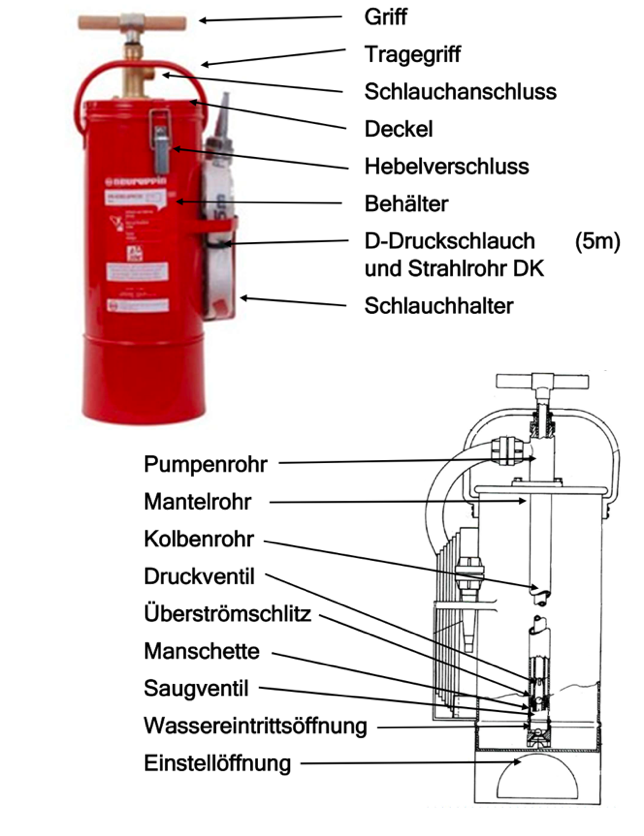
Aufbau der Kübelspritze (Außenansicht und Schnittbild)
Einfache Brandbekämpfung kleiner Entstehungsbrände mit wenig Wasser.
Bauteile: Griff, Tragegriff, Schlauchanschluss, Deckel, Hebelverschluss, Behälter, D-Druckschlauch (5 m) mit Strahlrohr DK, Schlauchhalter
Innerer Aufbau: Pumpenrohr, Mantelrohr, Kolbenrohr, Druckventil, Überströmschlitz, Manschette, Saugventil, Wassereintrittsöffnung, Einstellöffnung
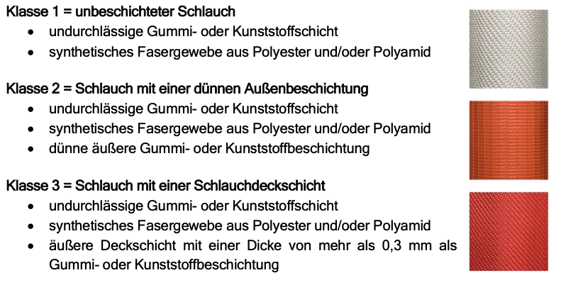
Schlauchklassen 1, 2 und 3 nach Aufbau und Beschichtung
Entspricht den bisherigen normativen Mindestanforderungen
Zusätzlich hohe Qualitätsanforderungen bei mechanischer Beanspruchung
Zusätzlich sehr hohe Qualitätsanforderungen bei mechanischer Beanspruchung
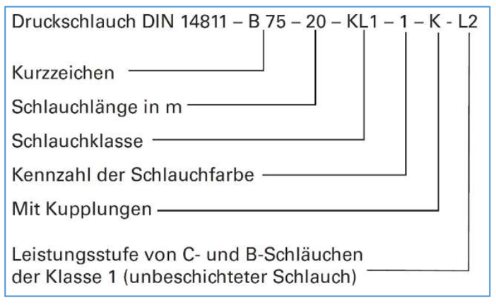
Typenschlüssel Druckschlauch – Beispiel: DIN 14811 – B 75 – 20 – KL1 – 1 – K – L2
| Größe | Innendurchmesser | Schlauchlänge (m) | Volumen (l) |
|---|---|---|---|
| A | 110 mm | 5 / 20 | 47,5 / 190 |
| B | 75 mm | 5 / 20 / 35 | 31,5 / 88 / 154 |
| C | 52 mm / 42 mm | 15 / 20 | 31,5 / 42 | 21 / 28 |
| D | 25 mm | 5 / 15 | 2,46 / 7,37 |
| S | 28 mm / 32 mm | 50 / 30 | – |
| F | 152 mm | 20 | 363 |
Durchmesser: A = 110 mm · B = 75 mm · C = 52 mm · D = 19–25 mm
Länge A-Saugschlauch: 1,6 m
Knaggenteil drehbar, Einbindestutzen, Sperring, Dichtring
Knaggenteil drehbar, Einbindestutzen (lang), Sperring, Dichtring
Knaggenteil mit Innengewinde, Dichtring. Druck- oder Saugdichtring in den Größen C und B; für Druck- und Saugbetrieb in den Größen D und A
Knaggenteil drehbar, Einbindestutzen mit Außenrohrgewinde, Dichtring für Druckbetrieb
Knaggenteil, Deckel mit Knopf (drehbar), Sperrring, Dichtring, Sicherungskette
Verbindung unterschiedlicher Größen: C-D · B-C · B-A und weitere
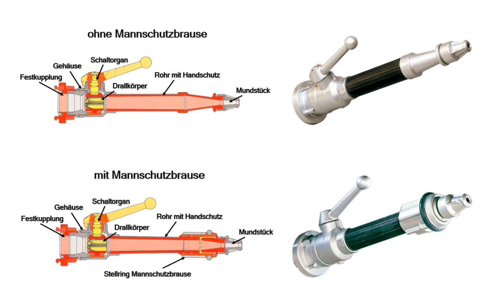
Aufbau Mehrzweckstrahlrohr: ohne (oben) und mit Mannschutzbrause (unten)
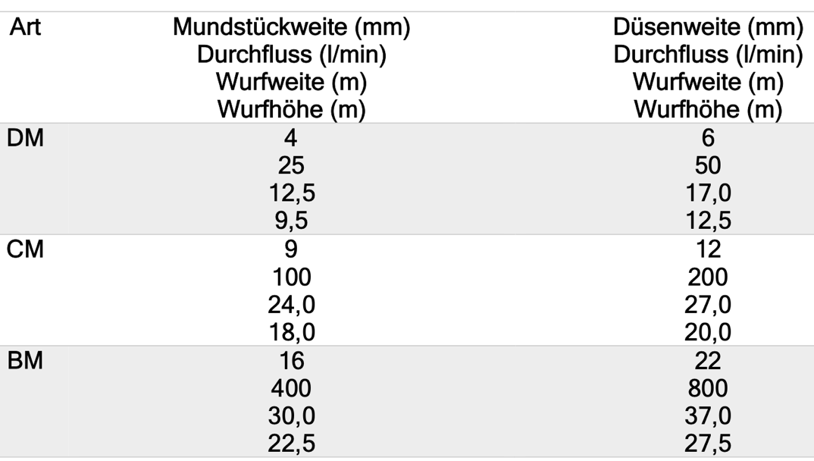
Mundstückweite, Düsenweite, Durchfluss, Wurfweite und Wurfhöhe je Größe
| Größe | Variante | Mundstück (mm) | Durchfluss (l/min) | Wurfweite (m) |
|---|---|---|---|---|
| DM | Mundstück | 4 | 25 | 12,5 |
| Düse | 6 | 50 | 17,0 | |
| CM | Mundstück | 9 | 100 | 24,0 |
| Düse | 12 | 200 | 27,0 | |
| BM | Mundstück | 16 | 400 | 30,0 |
| Düse | 22 | 800 | 37,0 |
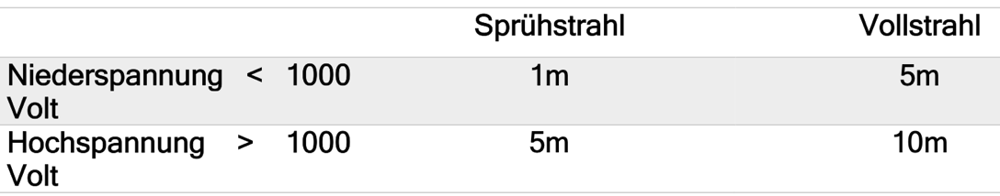
Mindestabstände nach Spannung und Strahlart
| Spannung | Sprühstrahl | Vollstrahl |
|---|---|---|
| Niederspannung < 1.000 V | 1 m | 5 m |
| Hochspannung > 1.000 V | 5 m | 10 m |
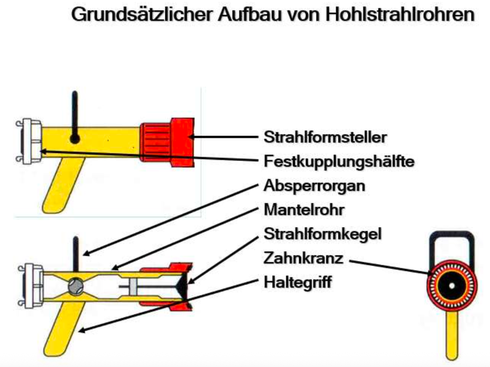
Grundsätzlicher Aufbau von Hohlstrahlrohren – Bauteile und Querschnitt
Idealdruck: 6 bar
Variable Strahlform bei variabler Durchflussmenge
Variable Strahlform bei konstanter Durchflussmenge
Variable Strahlform bei einstellbar konstanter Durchflussmenge (z. B. AWG-Turbo)
Konstanter Druck
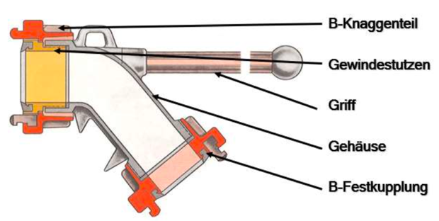
Stützkrümmer – Bauteile: B-Knaggenteil, Gewindestutzen, Griff, Gehäuse, B-Festkupplung
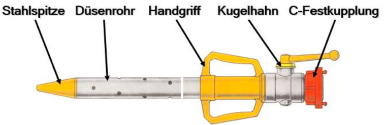
Löschlanze – Bauteile: Stahlspitze, Düsenrohr, Handgriff, Kugelhahn, C-Festkupplung
Ermöglicht rückstoßfreies Arbeiten mit Strahlrohr. Abstützung am Boden oder Geländer. Bauteile: B-Knaggenteil, Gewindestutzen, Griff, Gehäuse, B-Festkupplung.
Zum Einstechen in Hohlräume, Dachstühle, Schüttgut. Bauteile: Stahlspitze, Düsenrohr, Handgriff, Kugelhahn, C-Festkupplung.